Welcome!

This book (https://smin95.com/dataviz) guides the reader to be familiar with R, a programming language, for data visualization. It also introduces the R package smplot2, which aims to make the process of data visualization simple. This book was created entirely using RMarkdown for reproducibility.
The old website (on smplot) can be accessed using this link (https://smin95.com/dataviz0).
Major updates
2022-11-26: smplot2 has been debugged, notably sm_violin(), sm_statCorr() and sm_corr_theme(). Please update smplot2 if you are a user.
install.packages(c('tidyverse','devtools','gghalves'))
devtools::install_github('smin95/smplot2', force = TRUE)Also, for those who have been a smplot user, if you are capable of adapting to some changes made to smplot2, please delete smplot and then use smplot2. More information about updates is on Chapters 11 and 12.
remove.packages("smplot")Issues and contact
If you spot any mistakes in this online book, please pull-request on Github or email me seung.min@mail.mcgill.ca. If you find issues with the ‘smplot’ package, please pull-request on Github.
License
smplot2 is under the MIT license. This tutorial is licensed under a Creative Commons Attribution 4.0 International License. I am the sole creator of smplot2.
1 Opening Remarks
smplot2 has been created to enable both novice and intermediate R users to perform elegant data visualization that is appropriate for scientific publications. Also, it provides tools that are important for performing data analysis that is common in medicine and psychology.
1.1 How to read this book
If you are a proficient R user, I suggest that you read Chapters 11 and 12 because all the preceding sections incorporate contents about basics of R.
If you are a smplot user, you can either use its tutorial website (https://www.smin95.com/dataviz0) and continue to use smplot or modify your codes so that it works with smplot2. If you decide to use smplot2, I suggest you that you delete smplot. Also, I suggest that you read Chapters 11 (especially the sub-section: How ... parameter and xxx.params work) and 12 to understand the changes that have been made to the new package rather than to read the book from the beginning.
remove.packages("smplot")If you are a newcomer, then you can just start reading from the next chapter.
2 Download RStudio & Basics of R
2.1 Setting up RStudio
Why use R for data visualization?
- R is free.
- Often, less codes are needed in R to plot an elegant graph.
- for/while loops (basic concepts in programming) are not necessary in R to make a production-quality graph.
- R is the best software for statistical analysis.
Other available resources for R
- Stack Overflow: https://www.stackoverflow.com
- R for Data Science (a bible for learning R): https://r4ds.had.co.nz/
- R documentation: https://www.rdocumentation.org
- Learn Statistics with R: https://learningstatisticswithr.com/
- ggplot2 (a reference for plotting data in R): https://ggplot2-book.org/
Download requirements for RStudio
- Download R: http://cran.r-project.org/
- For Mac users: Mac: XQuartz https://www.xquartz.org/
- RStudio: http://www.rstudio.org/
Open RStudio
(#fig:pressure)Rstudio layout, image from http://www.sthda.com/english/wiki/running-rstudio-and-setting-up-your-working-directory-easy-r-programming
- Rstudio is where people do R programming.
- You can type codes (commands) into the console (bottom-left panel).
>means that the console is ready to receive more code.+means your code is not complete.
- You can also write (longer) codes in the script within the code editor (top-left panel).
- The code editor will run the script into the console.
- A new script can be opened by clicking: File -> New -> R Script.
- You can run a script by clicking ’Run” with the green arrow or by typing ctrl + enter. It is labeled with the red circle.
- Or you can just type your codes directly into the console.
Let’s make a folder and set it as working directory

(#fig:unnamed-chunk-11)Setting your working directory, image from https://www.ucl.ac.uk/~uctqiax/PUBLG100/2015/faq/setwd.html
- Create a folder named LearnR in Desktop.
- Set the folder as your working directory by clicking: Session -> Set Working Directory -> Choose Directory. Then find your LearnR folder.
- More information about setting up a directory is here: http://www.sthda.com/english/wiki/running-rstudio-and-setting-up-your-working-directory-easy-r-programming
- You will need set the directory every time you start RStudio.
2.1.1 How to run your code
You can run code in 2 ways.
First, you can type it in the script and run it after highlighting the codes you would like to run.

(#fig:unnamed-chunk-12)How to run your code - script
- Second, you can type your code directly in the console.

(#fig:unnamed-chunk-13)How to run your code - console
2.2 Basics of R
Let’s type some codes
- Capitalization, punctuations and brackets are all important.
' 'and" "mean the same.- However,
' "are not paired. So they will not work. =and<-mean equivalent.- I often use
<-.
- I often use
- Type
?when you are not sure about the code (ex.?t.test) - A code becomes comment when it is preceded by
#.- Try typing
# g = 3and see if the number gets stored in g by typing g in the console.
- Try typing
x = 3 # x equals to 3
a <- 4 # a equals to 4
d <- 'Group' # gr is equal to a character 'Group', which is not a number.
e <- "Group"
d == e # 'Group' and "Group" are equal## [1] TRUE# g = 3 # its a comment- Notice that I used
==to test if d and e are equal. Therefore,==and=mean different.==tests if two things are equal.=sets two things to be equal.d == ereturnsTRUEbecause they are both'Group'.TRUEis equivalent to 1 numerically.
- Now let’s check if x and a are equal.
x == a## [1] FALSEIt returns
FALSEbecause x and a are not equal. This is correct because 3 and 4 are not equal.FALSEequals to 0 numerically.Below are more examples showing that
TRUE= 1 andFALSE= 0.
TRUE + FALSE # 1 + 0## [1] 1TRUE + TRUE # 1 + 1## [1] 2FALSE + FALSE # 0 + 0## [1] 0TRUE*2 # 1 * 2## [1] 2TRUE*FALSE # 1 * 0## [1] 0How can I learn most effectively with the notes?
- Don’t just read it.
- Don’t just copy and paste the codes and run them in RStudio (ctrl + c & ctrl + p). Make sure you type each code.
- You can also change your code and see if it still works.
- If you are not sure of your code, you can type
?before the function. - If you are still not sure after reading the notes, check out Chapter 3 of R for Data Science: https://r4ds.had.co.nz/
More installation
- R is an old programming language.
- So, people, such as statisticians and programmers, have created more functions in R in the form of the package to update the language. They are free but they have to be downloaded separately.
- A package can contain several functions.
- In this tutorial, you will mainly be using ggplot2 package, which is elegant and flexible for visualizing data.
- Also, you will be using smplot2 package. It improves ggplot2 graphs visually.
- So, you will need to install some packages, such as ggplot2 and smplot2. Please type the codes below.
install.packages('devtools')
devtools::install_github('smin95/smplot2', force = TRUE) # requires VPN if you are in China- You only need to install them once, but you will need to reload them whenever you start a new session in RStudio using the function
library().
install.packages('tidyverse') # only need to install once
install.packages('cowplot')# packages must be loaded every time by using library() when you run your script
library(tidyverse) # it has ggplot2 package
library(cowplot) # it allows you to save figures in .png file
library(smplot2)- Now let’s make some graphs in the subsequent chapters.
3 Basics of ggplot2 and Correlation Plot
Load these packages by typing the codes below.
library(tidyverse) # it has ggplot2 package
library(cowplot) # it allows you to save figures in .png file
library(smplot2)3.1 Uploading data
3.1.1 Sample data: mpg
I will be using an example from the book R for Data Science (https://r4ds.had.co.nz/data-visualisation.html).
- Question: Do cars with large engines use up more fuel than the those with small ones?
First, let’s open mpg, which is a data frame stored in the ggplot2 package.
mpg contains data about cars in the US. You can type
?mpgfor more information.- displ: the size of the car’s engine in liters
- hwy: fuel efficiency. If it’s high, then the car uses less fuel per distance.
mpg## # A tibble: 234 x 11
## manufacturer model displ year cyl trans drv cty hwy fl class
## <chr> <chr> <dbl> <int> <int> <chr> <chr> <int> <int> <chr> <chr>
## 1 audi a4 1.8 1999 4 auto(l5) f 18 29 p compact
## 2 audi a4 1.8 1999 4 manual(m5) f 21 29 p compact
## 3 audi a4 2 2008 4 manual(m6) f 20 31 p compact
## 4 audi a4 2 2008 4 auto(av) f 21 30 p compact
## 5 audi a4 2.8 1999 6 auto(l5) f 16 26 p compact
## 6 audi a4 2.8 1999 6 manual(m5) f 18 26 p compact
## 7 audi a4 3.1 2008 6 auto(av) f 18 27 p compact
## 8 audi a4 quattro 1.8 1999 4 manual(m5) 4 18 26 p compact
## 9 audi a4 quattro 1.8 1999 4 auto(l5) 4 16 25 p compact
## 10 audi a4 quattro 2 2008 4 manual(m6) 4 20 28 p compact
## # ... with 224 more rowsNotice that some columns and rows are not shown. You can type View(mpg) to see the entire data frame.
- Each row is an unique observation.
- Each column is an unique variable/condition.
View(mpg)3.2 Basics of ggplot2
3.2.1 Let’s make some graphs
Question: Do cars with large engines use up more fuel than the those with small ones?
To answer our question, we need to plot mpg data. The x-axis should be displ, the y-axis should be hwy.
ggplot(data = mpg) +
geom_point(mapping = aes(x = displ, y = hwy))
We find that a smaller car has a higher efficiency and that a larger car has a lower efficiency. In other words, we see a negative relationship.
3.2.2 How ggplot works
When you are making a graph with ggplot2, always begin by typing the function ggplot().
- The data you want to plot is the first argument here. Ex.
ggplot(data = mpg).
However, ggplot(data = mpg) alone does not create a graph. You will need add (by typing +) more layers, such as geom_point().
geom_point()adds points to your graphs. You will need to specify (or map) x- and y-axes in theaes()function, which means aesthetics. This process is called mapping.As you might expect, there are other geom functions, such as
geom_bar(),geom_boxplot(),geom_errorbar(). They plot bar graphs, boxplots and error bars, respectively.
Here is the template for using ggplot2 (copied from R for Data Science).
ggplot(data = <DATA>) +
<GEOM_FUNCTION>(mapping = aes(<MAPPINGS>))3.2.3 Different color of points for each unique group
You can apply different colors by the class of each car (each car = each row of the mpg data frame).
Include
classvariable in theaes()function.This maps the third variable
classinto your graph.aes()means aesthetic (ex. color, shape, etc).
ggplot(data = mpg) +
geom_point(mapping = aes(x = displ, y = hwy, color = class))
You can also set different shapes for each group of the data.
ggplot(data = mpg) +
geom_point(mapping = aes(x = displ, y = hwy, shape = class))You could also set it using aesthetic parameter such as size or transparency (not recommended) across groups. However these are not recommended as it is very hard for us to see the differences in both size and alpha as these are continuous parameters. But you get the idea. Using aes() in a geom function (ex. geom_point()), you can label different group of points.
# different levels of transparency (alpha) for each group
ggplot(data = mpg) +
geom_point(mapping = aes(x = displ, y = hwy, alpha = class))
# different sizes of the points for each group
ggplot(data = mpg) +
geom_point(mapping = aes(x = displ, y = hwy, size = class))
3.2.4 Different color & shape for each group
You can also apply different color & shape for each group of the data.
Exercise: Try it on your own before you look at the code below.
ggplot(data = mpg) +
geom_point(mapping = aes(x = displ, y = hwy, color = class,
shape = class))
3.2.5 Same shape across all groups
So far, you have put variables such as shape and color inside the function aes(). This can enable you to apply different shape and color for each group.
If you put the variable for shape, color, size outside of aes() in the geom function, then all data points will have the specified shape, color, etc even if they are in different groups.
ggplot(data = mpg) +
geom_point(mapping = aes(x = displ, y = hwy,
color = class), shape = 17)
Notice that the color is different for each group because it is inside the function aes(). However, all the points are triangle because we have typed shape = 17 outside the function aes().
Exercise: try changing the shape of the points to the circle with the border.

(#fig:unnamed-chunk-31)image from http://www.sthda.com/english/wiki/ggplot2-point-shapes
shape = 19: the shape is circle without the border.shape = 20: the shape is small circle without the border.shape = 21, the shape is circle with the border.So let’s set
shapeto 21.
ggplot(data = mpg) +
geom_point(mapping = aes(x = displ, y = hwy, color = class), shape = 21)
- Notice that the border color is different for each group, but not the color that fills the circle.
- Shapes without their borders (15-20) are filled with
color. - Shapes with the border (21-24) are filled with
filland its border colored withcolor. - So let’s change
color = Classtofill = Class.
ggplot(data = mpg) +
geom_point(mapping = aes(x = displ, y = hwy, fill = class), shape = 21)3.2.6 How do we draw the best-fit line of the graph?
Here is our graph.
ggplot(data = mpg) +
geom_point(mapping = aes(x = displ, y = hwy))
There seems to be a negative relationship. How do we draw the best-fit line of the graph’s negative relationship? Use another geom function geom_smooth().
ggplot(data = mpg) +
geom_smooth(mapping = aes(x = displ, y = hwy))
3.2.7 geom_point() + geom_smooth()
Now let’s combine geom_point() + geom_smooth() into one graph.
ggplot(data = mpg) +
geom_point(mapping = aes(x = displ, y = hwy)) +
geom_smooth(mapping = aes(x = displ, y = hwy))
ggplot() acts as a system where you can add multiple geom objects, such as geom_point() and geom_smooth(). You can add multiple layers of geom in a single plot, like shown here.
ggplot() and at least one geom function are necessary to draw a graph. ggplot() alone does not draw a graph. Try it on your own.
ggplot(data = mpg)3.2.8 Writing shorter codes
ggplot(data = mpg) +
geom_point(mapping = aes(x = displ, y = hwy)) +
geom_smooth(mapping = aes(x = displ, y = hwy))Notice that we have typed mapping = aes(x = displ, y = hwy) twice. This is repetitive. If you type the mapping argument in ggplot(), you won’t need to type them anymore in the subsequent geom functions.
ggplot(data = mpg, mapping = aes(x = displ, y = hwy)) +
geom_point() +
geom_smooth()
This is exactly the same as the previous graph. In both cases, the mapping has been set so that the x-axis is displ and the y-axis is hwy in both geom_point() and geom_smooth().
Now let’s apply different color of points and the fit the line for each group.
ggplot(data = mpg, mapping = aes(x = displ, y = hwy, color = class)) +
geom_point() +
geom_smooth()
Okay, this is extremely messy and probably a bad idea.
- You might have gotten
warningsbut you can usually ignore them.
Let’s plot the best-fit line across all groups (i.e., one best-fit line) but apply different color for each class (i.e., many colors). To do so, type color = class in geom_point, not ggplot(). This enables you to specify that you will apply different color for each class only in geom_point() but not in geom_smooth().
ggplot(data = mpg, mapping = aes(x = displ, y = hwy)) +
geom_point(aes(color = class)) +
geom_smooth()
3.3 Improve data visualization using smplot2
Although the default theme of ggplot2 graphs is clean, there are some things that I do not like:
The fonts are too small.
The grey background is distracting.
There are too many grids.
ggplot(data = mpg, mapping = aes(x = displ, y = hwy, color = class)) +
geom_point() 
Let’s make this graph prettier by using functions from smplot2.
- In this example, let’s use sm_corr_theme(). I’ve made this function as a theme suitable for correlation plots.
- Disclaimer: smplot2 package has been built based on my preference.
- smplot2 is not necessary to make a ggplot graph or change its style.
It is possible to change every aspect of the graph with ggplot2 but this requires about 8-20 lines of codes (based on my experience). Instead, smplot2 function does so in a few lines of code.
ggplot(data = mpg, mapping = aes(x = displ, y = hwy, color = class)) +
geom_point() +
sm_corr_theme()Now let’s remove the border within sm_corr_theme() by setting borders = FALSE.
ggplot(data = mpg, mapping = aes(x = displ, y = hwy, color = class)) +
geom_point() +
sm_corr_theme(borders = FALSE)Exercise: You can also set borders = TRUE and see what happens.
ggplot(data = mpg, mapping = aes(x = displ, y = hwy, color = class)) +
geom_point() +
sm_corr_theme(borders = TRUE)You might notice that borders come back. This is exactly what happens when you do not include borders argument in sm_corr_theme(). This is because sm_corr_theme() is set to borders = TRUE as default.
- I think the one with the border looks better.
- You can also remove the legend by setting
legends = FALSEinsm_corr_theme().
ggplot(data = mpg, mapping = aes(x = displ, y = hwy, color = class)) +
geom_point() +
sm_corr_theme(legends = FALSE)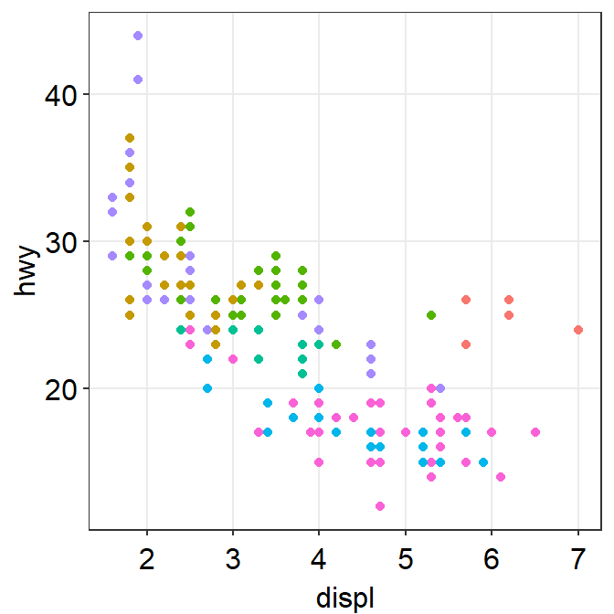
Exercise Set legends = TRUE and see what happens. Type ?sm_corr_theme to see why legends appear without directly writing legends = TRUE.
ggplot(data = mpg, mapping = aes(x = displ, y = hwy, color = class)) +
geom_point() +
sm_corr_theme(legends = TRUE)However, in this case, I think we need a legend because there are many classes.
3.3.1 Positive relationship between x- and y-axes
Let’s plot another scatterplot using mtcars data.
- Set the x-axis with drat and y-axis with mpg.
- Since you are making a scatterplot, you will need to use
geom_point(). - Set the size of all points to 3 by typing
size = 3. - Set the shape of all points to the circle with a border by typing
shape = 21. - Set the filled color of all points to green by typing
fill = '#0f993d'. - Set the border color to white by typing
color = 'white'.- Since
shape = 21refers to the circle with a border,fillis the color that fills the points andcoloris the border color.
- Since
ggplot(data = mtcars, mapping = aes(x = drat, y = mpg)) +
geom_point(shape = 21, fill = '#0f993d', color = 'white',
size = 3) 
drat and mpg have a positive relationship. Now let’s make it pretty by adding sm_corr_theme().
ggplot(data = mtcars, mapping = aes(x = drat, y = mpg)) +
geom_point(shape = 21, fill = '#0f993d', color = 'white', size = 3) +
sm_corr_theme()
You can remove borders too by setting borders = FALSE in sm_corr_theme().
ggplot(data = mtcars, mapping = aes(x = drat, y = mpg)) +
geom_point(shape = 21, fill = '#0f993d', color = 'white', size = 3) +
sm_corr_theme(borders = FALSE)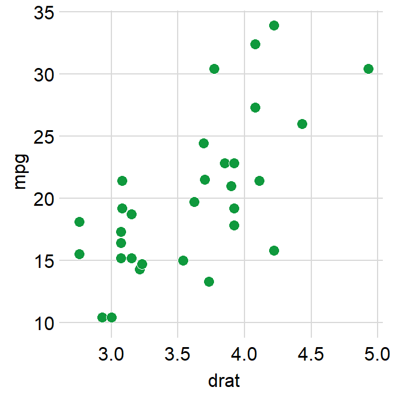
3.3.2 Reporting statistics from a paired correlation
smplot2 also offers a function that plots the best-fit line of a scatterplot (i.e., correlation plot) and prints statistical values, such as p- and R-values.
- p-value is used to check for statistical significance. If it’s less than 0.05, its regarded as statistically significant. However, it gets smaller with a larger sample size.
- R-value (correlation coefficient) measures the strength and the direction of the correlation. It ranges from -1 to 1. It does not depend on the sample size.
- Let’s add a function
sm_statCorr(). The statistical results are from Pearson’s correlation test.
sm_statCorr() is combined with sm_corr_theme() (updated in smplot2). Therefore, when you print the statstical values using sm_statCorr(), the correlation theme is automatically used.
ggplot(data = mtcars, mapping = aes(x = drat, y = mpg)) +
geom_point(shape = 21, fill = '#0f993d', color = 'white', size = 3) +
sm_statCorr()
I don’t really like how the line color is different from that of the points.
Let’s change the color to green.
- You can also change the
linetypeby setting it aslinetype = 'dashed'orlinetype = 'solid', which is the default as shown here. - Also let’s get results from Spearman’s correlation test rather than from Pearson’s.
- To do so, type
corr_method = 'spearman'in the functionsm_statCorr(). You will get a different R value from 0.68, which is from Pearson’s correlation test.
ggplot(data = mtcars, mapping = aes(x = drat, y = mpg)) +
geom_point(shape = 21, fill = '#0f993d', color = 'white', size = 3) +
sm_statCorr(color = '#0f993d', corr_method = 'spearman',
linetype = 'dashed')
- Exercise: Set
corr_method = 'pearson'and see what happens.
ggplot(data = mtcars, aes(x = drat, y = mpg)) +
geom_point(shape = 21, fill = '#0f993d', color = 'white', size = 3) +
sm_statCorr(color = '#0f993d', corr_method = 'pearson')You will see that this is exactly the same as when corr_method argument is not included in sm_statCorr(). In short, the default correlation method for sm_statCorr() is 'pearson'. So, if you don’t write anything for corr_method, it will give results from Pearson’s correlation test. Type ?sm_statCorr to see the default of line_type.
#0f993dis a specific green that I like.- Now, let’s change the color. Replace
'#0f993d'with'green'ingeom_point()andsm_statCorr.- This
'green'is the default green color of R.
- This
ggplot(data = mtcars, mapping = aes(x = drat, y = mpg)) +
geom_point(shape = 21, fill = 'green', color = 'white', size = 3) +
sm_statCorr(color = 'green')
To precisely change the parameter for the fitted line, you can do it as shown below by filling the fit.params argument in the form of list, such as fit.params = list(color = ..., linetype = ...).
fit.paramsfeeds arguments for aesthetics intogeom_smooth()such ascolorso that the fitted regression line can have specified aesthetics.
In fact, this is the major update of smplot2 across most visualizing functions from smplot. As you will notice later, this offers more aesthetic flexibility for users.
ggplot(data = mtcars, mapping = aes(x = drat, y = mpg)) +
geom_point(shape = 21, fill = '#0f993d', color = 'white', size = 3) +
sm_statCorr(corr_method = 'spearman',
fit.params = list(color = '#0f993d',
linetype = 'dashed'))
You can also remove the borders of the plot using sm_statCorr.
ggplot(data = mtcars, mapping = aes(x = drat, y = mpg)) +
geom_point(shape = 21, fill = '#0f993d', color = 'white', size = 3) +
sm_statCorr(corr_method = 'spearman',
fit.params = list(color = '#0f993d',
linetype = 'dashed'),
borders = FALSE)
Which one do you prefer? With or without the border?
3.3.3 Changing the text
If you do not like the fact that the correlation stats are displayed as R = 0.65, p < 0.001 and that you rather show it as R = 0.65 and p < 0.001 in separate lines, you can do it too.
In R, \n means addition of a new line. So you can set the argument separate_by = '\n', which essentially means R = 0.65\n p < 0.001, which will create two lines.
You would test this directly by typing in R console.
cat('R = 0.65\np < 0.001')## R = 0.65
## p < 0.001ggplot(data = mtcars, mapping = aes(x = drat, y = mpg)) +
geom_point(shape = 21, fill = '#0f993d', color = 'white', size = 3) +
sm_statCorr(corr_method = 'spearman',
fit.params = list(color = '#0f993d',
linetype = 'dashed'),
separate_by = '\n')
Another way is just do directly compute it yourself using cor() or cor.test(), and annotate the statistical results on the plot. This might be a better alternative if you wish to precisely modify how the text is presented.
cor.test(mtcars$drat, mtcars$mpg, method = 'spearman')##
## Spearman's rank correlation rho
##
## data: mtcars$drat and mtcars$mpg
## S = 1901.7, p-value = 5.381e-05
## alternative hypothesis: true rho is not equal to 0
## sample estimates:
## rho
## 0.6514555Store the results from cor.test() into a variable called res, which is short for results.
res <- cor.test(mtcars$drat, mtcars$mpg, method = 'spearman')
res$p.value ## [1] 5.381347e-05You can extract certain component of the results from cor.test() from the variable res by using $. res$p.value extracts the p-value, and res$estimate extracts the correlation coefficient R.
res$estimate## rho
## 0.6514555We will round the values to 2 decimal points using round(..., 2), where 2 denotes the number of decimal places. paste0() is used to construct strings from various vectors, such as the numerical values extracted from res.
ggplot(data = mtcars, mapping = aes(x = drat, y = mpg)) +
geom_point(shape = 21, fill = '#0f993d', color = 'white', size = 3) +
annotate('text', x = 3, y = 32, label = paste0('R =',
round(res$estimate,2),
'\n p < 0.001')) +
sm_statCorr(show_text = FALSE,
fit.params = list(color = '#0f993d',
linetype = 'dashed'))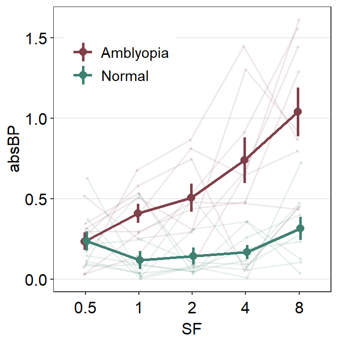
3.3.4 Plotting the average with standard errors
smplot2 also offers sm_corr_avgErr(), which is a function that enables the users to plot the mean with errors, such as standard error (errorbar_type = 'se' as default), standard deviation (errorbar_type = 'sd') or 95% confidence interval (errorbar_type = 'ci').
ggplot(data = mtcars, mapping = aes(x = drat, y = mpg)) +
geom_point(shape = 21, fill = '#0f993d', color = 'white', size = 3) +
sm_corr_avgErr(data = mtcars, x = drat, y = mpg)
The black point in the middle represents the mean with vertical and horizontal standard errors.
The data argument of sm_corr_avgErr requires the variable that stores the data frame that is used to plot the data, which is mtcars. x argument is the variable that is plotted along the x-axis. y argument is the variable that is plotted along the y-axis. Actually these arguments are nearly identical to what you have provided ggplot(data = ..., aes(x = ..., y = ...).
You can control the aesthetics with a high flexibility using point.params, errh.params and errv.params.
point.paramsfeeds the arguments togeom_point(), such ascolor,alpha, etc, to plot the average point.errv.paramsfeeds the arguments togeom_errorbar(), such ascolor,sizeandwidthetc, to plot the vertical (y-axis) error bar.errh.paramsfeeds the arguments togeom_errorbarh(), such ascolor,sizeandheightetc, to plot the horizontal (x-axis) error bar.
If you write xxx.params = list(), even with empty ones, you will remove the defaults of sm_corr_avgErr(), which has default of width = 0 (for errv.params) / height = 0 (for errh.params). width and height are equivalent.
ggplot(data = mtcars, mapping = aes(x = drat, y = mpg)) +
geom_point(shape = 21, fill = '#0f993d', color = 'white', size = 3) +
sm_corr_avgErr(data = mtcars, x = drat, y = mpg,
errh.params = list(),
errv.params = list()) +
sm_corr_theme()
After removing the defaults, we see that width of errv.params and height of errh.params are no longer 0. We can control both width and height separately.
ggplot(data = mtcars, mapping = aes(x = drat, y = mpg)) +
geom_point(shape = 21, fill = '#0f993d', color = 'white', size = 3) +
sm_corr_avgErr(data = mtcars, x = drat, y = mpg,
errh.params = list(height = 1),
errv.params = list(width = 0.12)) +
sm_corr_theme()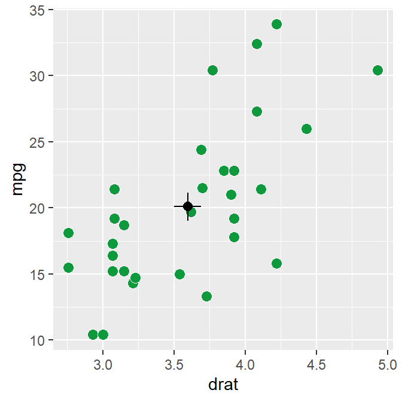
In this case, height is much longer because the scale of y-axis is much longer than that of x-axis. We can also set unique colors to horizontal and vertical error bars.
ggplot(data = mtcars, mapping = aes(x = drat, y = mpg)) +
geom_point(shape = 21, fill = '#0f993d', color = 'white', size = 3) +
sm_corr_avgErr(data = mtcars, x = drat, y = mpg,
errh.params = list(height = 1, color = "#1262b3"),
errv.params = list(width = 0.12, color = "#cc3d3d")) +
sm_corr_theme()
The error bar might appear too thin and the average point too small. We can control the size to make it more noticeable in the plot.
ggplot(data = mtcars, mapping = aes(x = drat, y = mpg)) +
geom_point(shape = 21, fill = '#0f993d', color = 'white', size = 3) +
sm_corr_avgErr(data = mtcars, x = drat, y = mpg,
point.params = list(size = 4),
errh.params = list(height = 1, color = "#1262b3",
size = 0.8),
errv.params = list(width = 0.12, color = "#cc3d3d",
size = 0.8)) +
sm_corr_theme()We can control the transparency of the individual points and fine tune the aesthetics of the average point to make it more noticeable in the sea of individual points.
ggplot(data = mtcars, mapping = aes(x = drat, y = mpg)) +
geom_point(shape = 21, fill = '#0f993d', color = 'white', size = 3,
alpha = 0.6) +
sm_corr_avgErr(data = mtcars, x = drat, y = mpg,
point.params = list(size = 4, shape = 21, color = 'white',
fill = 'black'),
errh.params = list(height = 1, color = "#1262b3",
size = 0.8),
errv.params = list(width = 0.12, color = "#cc3d3d",
size = 0.8)) +
sm_corr_theme()Notice that the transparency of the individual point allows us see that there are some points with some serious overlap.
3.3.5 fill = '#0f993d' vs fill = 'green'
I personally like #0f993d more. However, R does not recognize this color as green. So how are you supposed to remember the color code?
You do not have to. You can type sm_color('green') instead. This is a function from the smplot package.
sm_color() accepts the name of the color. If you want to get the hex codes (color codes) for red and green, type sm_color('red','green').
sm_color('red','green')Again, sm_color() has been built based on my preference. So it returns the hex codes of colors that I use most often.
There are many more color themes that are available in R. For more information, please check out Chapter 28 of R for Data Science (https://r4ds.had.co.nz/graphics-for-communication.html).
ggplot(data = mtcars, mapping = aes(x = drat, y = mpg)) +
geom_point(shape = 21, fill = sm_color('green'), color = 'white',size = 3) +
sm_corr_theme() +
sm_statCorr(color = sm_color('green'))
Exercise Change the color of the points and the best-fit line to blue using sm_color(). If you want to see all the color options for sm_color(), type ?sm_color. There are 16 colors total.
ggplot(data = mtcars, mapping = aes(x = drat, y = mpg)) +
geom_point(shape = 21, fill = sm_color('blue'), color = 'white',size = 3) +
sm_corr_theme() +
sm_statCorr(color = sm_color('blue'))3.3.6 Different color for each group but with other colors
Let’s go back to the mpg data. Set the x-axis with displ and y-axis with hwy. Then make a scatterplot using geom_point().
- Set the size of the points to 2 across all groups. So type size = 2 outside of aes() in geom_point().
Let’s apply different color for each class of the cars by writing color = class in aes() from ggplot().
fill = classis needed when the shape of the point is set to 21-25.
ggplot(data = mpg, mapping = aes(x = displ, y = hwy, color = class)) +
geom_point(size = 2)
To use other colors, we could use a function from ggplot2 called scale_color_manual().
scale_fill_manual()is used when the shape of the point has borders (shape = 21-25).
To find how many colors we need total, we need to find how many groups exist.
unique_classes <- unique(mpg$class)In R, you can extract data from one column by using $. You can try it with different variables too. unique() returns unique values in the selected data.
Then compute the number of unique values using length() function.
number_of_classes <- length(unique_classes)
number_of_classes## [1] 7sm_palette accepts the number of colors as input. It returns colors that I use most often. Now that we know we need 7 colors total, we can type sm_palette(7) or sm_palette(number_of_classes) for values in scale_color_manual().
ggplot(data = mpg, mapping = aes(x = displ, y = hwy, color = class)) +
geom_point(size = 2) +
scale_color_manual(values = sm_palette(number_of_classes)) +
sm_corr_theme()Let’s store this graph using a variable called figure1.
figure1 <- ggplot(data = mpg, mapping = aes(x = displ, y = hwy, color = class)) +
geom_point() +
scale_color_manual(values = sm_palette(number_of_classes)) +
sm_corr_theme()Notice that when you store a figure into a variable, the figure is not displayed when you run the code that makes the figure, ex. figure1 <- ggplot(data = mpg, mapping = .... To display the figure, please type the variable name in the console.
figure1 # it will appear again by calling this variable 
3.3.7 Let’s save the plot as an image in your folder LearnR by using the variable figure1.
To save the figure as an image, we will use the function save_plot() from the cowplot package.
There is one important argument:
base_asp.- This is the ratio of your image (width/height). I usually set it to 1.4. So let’s type
base_asp = 1.4insave_plot(). - If
base_aspis larger than 1, it gets wider than its height. This is recommended when you have a legend. - If there is no legend, then
base_asp = 1is recommended.
- This is the ratio of your image (width/height). I usually set it to 1.4. So let’s type
save_plot('figure1.png', figure1, base_asp = 1.4)Exercise: try to save it again with a name figure1b.png by typing:
save_plot('figure1b.png', figure1)How’s the picture? Why does it look different? Type ?save_plot to see what the default base_asp is.
Done! The graph (in png file) should be in your LearnR folder.
Exercise: Try to open Microsoft Word or PowerPoint and upload figure1. The figure should look the same as it appears in the slides.
Exercise: Remove the legend and save the scatterplot with base_asp = 1.
Congratulations! You can now make correlation plots with R.
3.4 Summary
- You have learned the basics of ggplot.
- You begin by writing a
ggplot()function. - If aesthetics (color, shape, etc) are specified outside of
aes()function, then there is no group difference. - If aesthetics are specified in
aes(), different groups of data will have different looks. - You have learned to add geom layers such as
geom_point(), which shows points, andgeom_smooth(), which plots the best-fit function. - You have learned to plot
geom_point()andgeom_smooth()in the same graph.
- You begin by writing a
- smplot2 functions can be used to improve ggplot2 visually.
- For correlation plots, add
sm_corr_theme(). - You can report statistical results and plot linear regression from correlation by
sm_statCorr(), which also providessm_corr_theme(). So there is no need to writesm_corr_theme()when usingsm_statCorr(). - You can also select colors using
sm_color().
- For correlation plots, add
- Save the graph as an image file in your working directory.
- Working directory has to be set in RStudio (Session -> Set Working Directory -> Choose Directory)
- Then use
save_plot()from cowplot to save the image in your directory (folder LearnR).
4 Boxplot and Violin Plot
Load these packages by typing the codes below.
library(tidyverse) # it has ggplot2 package
library(cowplot) # it allows you to save figures in .png file
library(smplot2)4.1 Upload sample data (csv file) in RStudio
4.1.1 Download requirements
Download data.csv from https://www.smin95.com/data.csv
Put the file data.csv in your LearnR folder, where you will create a new script using RStudio.
4.1.2 Before we get started
First, within RStudio, set LearnR folder as your working directory by clicking: Session -> Set Working Directory -> Choose Directory.
Then, load these three packages with the library() function: ggplot2, cowplot and smplot2.
The tidyverse package includes the ggplot2 package. For this reason, instead of loading ggplot2, you can load tidyverse instead. tidyverse has other packages beside ggplot2, such as dplyr, which is also necessary to handle and manage data.
Remember from the last chapter that:
Functions from the ggplot2 package include
ggplot()and other geom functions such asgeom_point(),geom_smooth(), etc.Functions from the smplot2 package improve the ggplot2 graphs visually. However, they are not required to make a graph using ggplot2.
The cowplot package has a function called
save_plot, which is very useful for saving a graph as an image.
4.1.3 data.csv
To start off, let’s load data.csv in R from your LearnR folder. Then store the loaded data into a variable called df.
We will use a function from the tidyverse package called read_csv().
- For more information, type ?read_csv().
df <- read_csv('data.csv')If you get an error such as object 'data.csv' not found, make sure you set your working directory in the LearnR folder. Also make sure you have downloaded your data and saved it in the LearnR folder.
You can view the entire data frame by typing View(df).
View(df)There are three columns in df.
The first column (Subject) is the subject number. S1 means the first subject, and S2 second.
The second column (Value) is the data. It contains numbers.
The third column (Day) is the day of testing. There are three days of measurement: One, Two and Three.
What is the data about?
30 patients were tested across three days to see if there was an improvement in their visual function (Value). The higher value, the better the vision.
Day One: first day of the study. This is the baseline value. After this measurement, patients received treatment (ex. drug, surgery, etc).
Day Two: second day of the study. This is the one day after receiving the treatment.
Day Three: third day of the study. This is two days after receiving the treatment.
As some of you may have noticed, the data are all made from statistical simulations (i.e., fake data).
4.1.4 read_csv('data.csv')
Let’s use the variable df to store the output from data.csv.
df is shortened from data frame, which refers to a structure of the data that is commonly used for data analysis.
In fact, ‘data.csv’ has the structure of a typical data frame.
Each column is a variable.
Each row represents an observation
In future, I suggest you save data that has a similar structure to that of df.
- Put your own data in Microsoft Excel and save it as a csv file to load it on R.
Exercise: Open data.csv using Microsoft Excel. Change the name of third column into Group. Then, save it as data2.csv. What does this data frame indicate now?
It indicates there are 30 individuals for each group. Also, there are 3 groups, so there are 90 individuals total. So, it might be better to change the subject number so each person has a unique label, such as S1 to S90.
4.2 Boxplot
4.2.1 What is a boxplot?
This is the basic structure of the boxplot.

- The line in the middle is the median of the data.
- The first quartile is the lower 25% of the data.
- The third quartile is the 75% percentile of the data.
- The interquartile range is the distance between the first and third quartiles.
- The lower whisker is the lowest data point without outliers.
- The upper whisker is the highest data point without outliers.
- The point that lies outside the whisker is the outlier.
4.2.2 Boxplot vs bar graph
Here is the basic structure of the bar graph.

- The boxplot is more informative than bar graph.
- The bar graph only shows the mean (average) of the data and the standard error.
- The bar graph does not represent the distribution very well. The narrow errorbar is quite misleading here.
- For this reason, let’s focus on drawing a boxplot.
4.2.3 Boxplot using ggplot2
We want to plot Value (y-axis) from each Day (x-axis). As always in ggplot, let’s start by writing ggplot().
Make sure you specify the data to plot by writing data = df in ggplot(). Also, you will need to specify the x- and y-axes in the mapping argument within ggplot().
x = Dayandy = Value.
ggplot(data = df, mapping = aes(x = Day, y = Value))
However, as we learned in the last lesson, ggplot requires geom objects to plot something. Last time we used geom_point(), which plots points. - Now, let’s use geom_boxplot() to plot a boxplot.
ggplot(data = df, mapping = aes(x = Day, y = Value)) + geom_boxplot()Here’s the boxplot! But I think there is a problem here. Day Three precedes Day Two in the x-axis.
- Exercise: Why do you think Three appeared first?
4.2.4 Problem: Alphabetical order
The issue with the boxplot is that the x-axis follows an alphabetical order.
- Th precedes Tw. In short, R does not seem to know that we want the order to be One -> Two -> Three.
R has decided to follow the alphabetical order is because the column Day is shown as <chr>, which means character.
df## # A tibble: 90 x 3
## Subject Value Day
## <chr> <dbl> <chr>
## 1 S1 -0.752 One
## 2 S2 0.220 One
## 3 S3 -1.00 One
## 4 S4 1.91 One
## 5 S5 0.395 One
## 6 S6 -0.985 One
## 7 S7 0.585 One
## 8 S8 0.886 One
## 9 S9 0.691 One
## 10 S10 -0.366 One
## # ... with 80 more rows- Note that the Subject column is also considered as
<chr>(characters) because it contains texts/alphabets. - The Value column is categorized as
<dbl>, which means double.- Double basically means numbers.
In R, character is also referred to as string. They mean the same thing. Here are more examples of characters/strings.
a <- 'R is very useful!'
b <- 'Dogs are so cute.'
c <- 'Clarinet is the best.'In these examples, you have stored the characters/strings in the variables a, b and c.
4.2.5 Displaying characters in a non-alphabetical order
Factors are important when you want to display characters in non-alphabetical order. Factors are variables that have a limited number of different values.
For example, if a dataset has two groups (controls and patients), these can be referred to as factors.
However, when you are using read_csv() to load data into RStudio, read_csv() will interpret texts/alphabets as characters, not factors.
- This is a problem when you need a non-alphabetical order, such as one -> two -> three and Jan -> Feb -> Mar -> Apr.
To resolve this problem, you will need to change the characters into factors using factor() function.
df$Day <- factor(df$Day, levels = c('One','Two','Three'))Remember that <- means equivalent. Also, $ of a data frame can extract a specific column
- You can also type
df$Valueand run it to see what happens. You will get all values of the second column Value.
df$ValueBy using factor(), you are making the Day column of df into factor from character. However, you will need to store the factored version of df$Day by using <-. If not, df$Day will stay as character.
levels argument in factor() allows you to specify the order of the factors.
For more information about factors, please check Chapter 15 of R for Data Science (https://r4ds.had.co.nz/factors.html).
- Note: you do not have to understand this part 100%. However, if you do encounter similar issues, I suggest you resolve it with the solution above.
4.2.6 Double-check if the ‘Day’ column is factor
- Let’s open the data frame df again.
df## # A tibble: 90 x 3
## Subject Value Day
## <chr> <dbl> <fct>
## 1 S1 -0.752 One
## 2 S2 0.220 One
## 3 S3 -1.00 One
## 4 S4 1.91 One
## 5 S5 0.395 One
## 6 S6 -0.985 One
## 7 S7 0.585 One
## 8 S8 0.886 One
## 9 S9 0.691 One
## 10 S10 -0.366 One
## # ... with 80 more rowsNow we see <fct> in the Day column. This means that the column is now factor, not character.
4.2.7 Back to boxplot using ggplot2
Now let’s draw the boxplot again.
ggplot(data = df, mapping = aes(x = Day, y = Value)) + geom_boxplot()
Since we have converted the Day column of df into factor, the boxplot successfully plots each day in the correct order.
4.2.8 A boxplot with individual data
Sometimes, it is preferable to plot individual data on top of the boxplot. There are many ways to do this. Here is a simple solution by using geom_jitter(). For more information, type ?geom_jitter.
ggplot(data = df, mapping = aes(x = Day, y = Value)) + geom_boxplot() +
geom_jitter()
I think the points are too spread. So let’s set the width of the spread in geom_jitter() to 0.15. Also, let’s apply a different color of points for each Day.
ggplot(data = df, mapping = aes(x = Day, y = Value, color = Day)) +
geom_boxplot() +
geom_jitter(width = 0.15)
Now we can make the boxplot prettier with sm_minimal(), which removes all grids in the graph. We can also set legends = FALSE to remove the legends.
Let’s also add a title Visual improvement after treatment using ggtitle(), which is a function from the ggplot2 package.
ggplot(data = df, mapping = aes(x = Day, y = Value, color = Day)) +
geom_boxplot() +
geom_jitter(width = 0.15) +
sm_minimal(legends = FALSE) +
ggtitle('Visual improvement after treatment')
Now let’s set the colors using sm_palette(). Remember from the last lesson that we set the colors in ggplot by using scale_color_manual() for points without borders.
- Let’s write
3insm_palette()because we need 3 colors (for each Day). It will automatically extract 3 different colors from the color palette in smplot2.
ggplot(data = df, mapping = aes(x = Day, y = Value, color = Day)) +
geom_boxplot() +
geom_jitter(width = 0.15) +
sm_minimal(legends = FALSE) +
ggtitle('Visual improvement after treatment') +
scale_color_manual(values = sm_palette(3))
If you need horizontal grids, you can simply replace sm_minimal() with sm_hgrid(). There is also sm_vgrid() but I will not try it here because it is not so useful in our context.
ggplot(data = df, mapping = aes(x = Day, y = Value, color = Day)) +
geom_boxplot() +
geom_jitter(width = 0.15) +
sm_hgrid(legends = FALSE) +
ggtitle('Visual improvement after treatment') +
scale_color_manual(values = sm_palette(3))
4.2.9 geom_boxplot() vs sm_boxplot()
geom_boxplot() does not show individual data. You need to add geom_jitter().
sm_boxplot() shows both a boxplot and jittered individual data. It automatically uses sm_hgrid(). Also it stores defaults that are aesthetically pleasing and has flexibility with which you can entirely overturn the defaults.
ggplot(data = df, mapping = aes(x = Day, y = Value, color = Day)) +
sm_boxplot() +
ggtitle('Visual improvement after treatment') +
scale_color_manual(values = sm_palette(3))As you can see the default of the point is slightly transparent (alpha = 0.65'). If you prefer it to change it to opaque with white borders, we can by specifying the parameters of the points, point.param, which is an argument that is found across multiple functions of smplot2.
In arguments that look likexxx.params = list(). sm_boxplot() has two xxx.params: point.param and boxplot.param.
Parameters in
point.paramare used ingeom_point()to plot the points.Parameters in
boxplot.paramare used ingeom_boxplot()to plot the boxplot.
In the default of sm_boxplot(), the shape of the point is 16. This information can be accessed by seeing the defaults within the help page of ?sm_boxplot.
We could change the shape to 21 so that the points have the circular shape with borders. In the case of shape = 21, fill decides the filling color rather than color, which sets the color of the border. Therefore, the variable in aes() has to be changed so that there is unique filling color for each day as fill = Day.
Also, scale_color_manual() is now used to apply distinct border colors of the points rather than their filling colors. So now we should use scale_fill_manual().
ggplot(data = df, mapping = aes(x = Day, y = Value, fill = Day)) +
sm_boxplot(point.params = list(shape = 21, color = 'white',
size = 2.5)) +
ggtitle('Visual improvement after treatment') +
scale_fill_manual(values = sm_palette(3))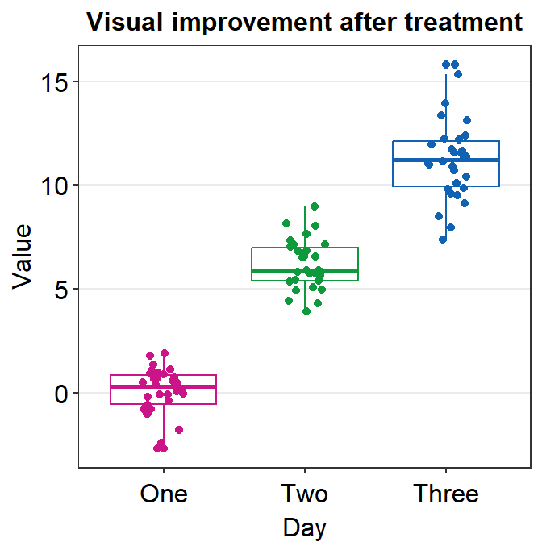
Notice that when you leave point.params = list() as empty or filled, then the aesthetic defaults of sm_boxplot() will disappear, such as the transparency of the points (alpha = 0.65). To fully restore the defaults while keeping the shape of the points, you will need to specify all the parameters.
ggplot(data = df, mapping = aes(x = Day, y = Value, fill = Day)) +
sm_boxplot(point.params = list(shape = 21, color = 'white',
size = 2.5, alpha = 0.65)) +
ggtitle('Visual improvement after treatment') +
scale_fill_manual(values = sm_palette(3))
Also, this is an example that shows that the defaults (i.e., transparency) are no longer maintained when point.params = list() is written but not filled.
ggplot(data = df, mapping = aes(x = Day, y = Value, color = Day)) +
sm_boxplot(point.params = list()) +
ggtitle('Visual improvement after treatment') +
scale_color_manual(values = sm_palette(3))Another way to change the shape is to not use point.params = list(). You could directly use shape argument within sm_boxplot() but this could affect other aesthetic components.
ggplot(data = df, mapping = aes(x = Day, y = Value, color = Day)) +
sm_boxplot(shape = 15) +
ggtitle('Visual improvement after treatment') +
scale_color_manual(values = sm_palette(3))
In this case, we are lucky because shape is an aesthetic parameter that does not affect the boxplot, which is drawn using geom_boxplot(). We can set the size and transparency explicity in point.params().
ggplot(data = df, mapping = aes(x = Day, y = Value, color = Day)) +
sm_boxplot(shape = 15, point.params = list(alpha = 0.65,
size = 2.5)) +
ggtitle('Visual improvement after treatment') +
scale_color_manual(values = sm_palette(3))What happens if you explicittly write boxplot.params = list() in sm_boxplot()?
ggplot(data = df, mapping = aes(x = Day, y = Value, color = Day)) +
sm_boxplot(boxplot.params = list()) +
ggtitle('Visual improvement after treatment') +
scale_color_manual(values = sm_palette(3))
Now the defaults of the boxplot are gone. The boxplot’s fill is white, and the line colors are no longer black. Also, the width is wider now than the default (width = 0.5).
ggplot(data = df, mapping = aes(x = Day, y = Value, color = Day)) +
sm_boxplot(boxplot.params = list(fill = 'gray95', width = 0.5,
color = 'black')) +
ggtitle('Visual improvement after treatment') +
scale_color_manual(values = sm_palette(3))
You can remove the label of the outlier by specifying outlier.shape = NA, which is an argument within geom_boxplot(), in boxplot.params.
ggplot(data = df, mapping = aes(x = Day, y = Value, color = Day)) +
sm_boxplot(boxplot.params = list(fill = 'gray95', width = 0.5,
color = 'black', outlier.shape = NA)) +
ggtitle('Visual improvement after treatment') +
scale_color_manual(values = sm_palette(3))
Now we are essentially back to where we were.
In addition, you can also change the size as a generic aesthetic parameter without affecting others because the size of the boxplot (boxplot.params) already has a specific default.
ggplot(data = df, mapping = aes(x = Day, y = Value, color = Day)) +
sm_boxplot(shape = 15, size = 2) +
ggtitle('Visual improvement after treatment') +
scale_color_manual(values = sm_palette(3))
Important: The generic parameter (... in ex. sm_boxplot()) cannot overturn the smplot2’s default unless the user makes the default gone by explictly writing param.xxx = list().
ggplot(data = df, mapping = aes(x = Day, y = Value, color = Day)) +
sm_boxplot(shape = 15, size = 2,
boxplot.params = list()) +
ggtitle('Visual improvement after treatment') +
scale_color_manual(values = sm_palette(3))
Now the size affects both the points and the boxplot because the default of boxplot.params is gone after we have written it in the argument.
Advanced users can really have much flexibility with this feature of smplot2. For example, you can essentially remove all the defaults by including empty boxplot.params and point.params.
ggplot(data = df, mapping = aes(x = Day, y = Value, color = Day)) +
sm_boxplot(boxplot.params = list(),
point.params = list()) +
ggtitle('Visual improvement after treatment') +
scale_color_manual(values = sm_palette(3))
Then you can change the color across points and boxplot to be just black.
ggplot(data = df, mapping = aes(x = Day, y = Value, color = Day)) +
sm_boxplot(color = 'black', boxplot.params = list(),
point.params = list()) +
ggtitle('Visual improvement after treatment') +
scale_color_manual(values = sm_palette(3))
If you are confused about this, do not worry because you can directly set the size and shape of the points as generic parameter without affecting other aesthetic components. You could probably get by with the defaults of smplot2 without specifying much.
Now, pick your favorite boxplot and store it in a variable called my_boxplot using <-.
my_boxplot <- ggplot(data = df, mapping = aes(x = Day, y = Value, fill = Day)) +
sm_boxplot(point.params = list(size = 2.5, color='white', shape = 21)) +
ggtitle('Visual improvement after treatment') +
scale_fill_manual(values = sm_palette(3))4.3 Violin Plot
The boxplot represents the distribution quite well but it can still be misleading.Also, it can be visually overwhelming (i.e., too crowded) to some readers. For this reason, researchers have begun favoring the violin plot more.
4.3.1 Structure of the violin plot

- The part in the middle is the widest because it has most points. This part has the highest point density.
- The lower and upper ends of the violin plot are thinner because there are less points.
- Let’s draw a violin plot in R.
4.3.2 Violin plot with ggplot2
Let’s draw the violin plot. Specify the x-axis to Day and the y-axis to Value using data frame df.
ggplot(data = df, mapping = aes(x = Day, y = Value)) + geom_violin()
Notice that since we have already converted the Day column of df into factor, the violin plot’s x-axis is in the correct order. Also, notice that we can just replace geom_boxplot() with geom_violin().
4.3.3 Violin plot with individual points
Let’s add individual points to the violin plot by using geom_jitter().
- Set width of the spread to 0.15.
ggplot(data = df, mapping = aes(x = Day, y = Value)) +
geom_violin() +
geom_jitter(width = 0.15)Now let’s apply different color to each Day like we did in boxplot by using scale_color_manual(). Let’s use sm_palette(3).
ggplot(data = df, mapping = aes(x = Day, y = Value, color = Day)) +
geom_violin() +
geom_jitter(width = 0.15) +
scale_color_manual(values = sm_palette(3))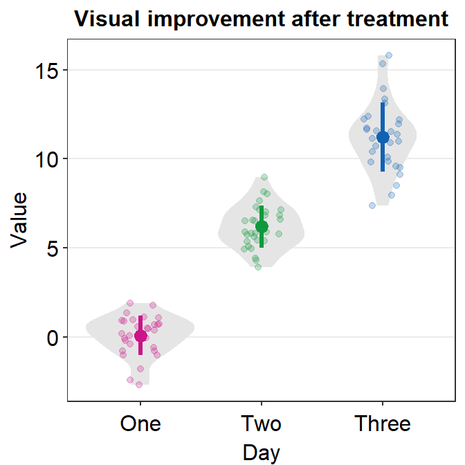
Finally, let’s make it pretty and remove the legend by applying sm_hgrid() theme, which only has horizontal grids.
- Let’s also add a title Visual improvement after treatment using ggtitle().
ggplot(data = df, mapping = aes(x = Day, y = Value, color = Day)) +
geom_violin() +
geom_jitter(width = 0.15) +
scale_color_manual(values = sm_palette(3)) +
sm_hgrid() +
ggtitle('Visual improvement after treatment')
4.3.4 geom_violin() vs sm_violin()
geom_violin()does not show individual data. You need to add geom_jitter().sm_violin()shows both a violin plot and individual data.- It automatically uses
sm_hgrid(). - It also display lines that represent the mean and +/- standard deviation.
- It automatically uses
In sm_violin(), the default shape ('point_shape') is 16, which is the circle without borders. Therefore, color fills the color of the individual points rather than fill. Also, color affects the color of the lines that show the mean and +/- standard deviation as well as the average point.
Let’s set color = Day in aes() so that we can apply different colors of the lines and the points for each group.
- Make sure you use scale_color_manual() rather than scale_fill_manual to have a unique filling color for each Day.
ggplot(data = df, mapping = aes(x = Day, y = Value, color = Day)) +
sm_violin() +
scale_color_manual(values = sm_palette(3)) +
ggtitle('Visual improvement after treatment')
As in the case of sm_boxplot(), you can specify the aesthetics of sm_violin() using point.params, err.params and violin.params.
point.paramsfeeds the arguments togeom_point(), such ascolor,alpha, etc, to plot the individual points.err.paramsfeeds the arguments togeom_linerange(), such ascolor,sizeetc, to plot the error bar in either standard error (errorbar_type = se), standard deviation (errorbar_type = sd) or 95% confidence interval (errorbar_type = ci).violin.paramsfeeds the arguments togeom_violin(), such ascolorandfill, to plot the violin.
By using size and shape as generic parameter, you can easily change the mean and individual points’ color and shapes, but not those of the violin because geom_violin() does not use these two parameters.
ggplot(data = df, mapping = aes(x = Day, y = Value, color = Day)) +
sm_violin(size = 3, shape = 15) +
scale_color_manual(values = sm_palette(3)) +
ggtitle('Visual improvement after treatment')
In this case, we have successfully changed the size (larger) and shape (circle to square) of the mean and individual points.
If you write xxx.params = list(), even with empty ones, you will remove the defaults of sm_violin().
ggplot(data = df, mapping = aes(x = Day, y = Value, color = Day)) +
sm_violin(point.params = list(),
violin.params = list()) +
ggtitle('Visual improvement after treatment')
Now we can add color = 'black' and fill = 'black' to affect it across all components of the graph (violin, error bar and points).
ggplot(data = df, mapping = aes(x = Day, y = Value, color = Day)) +
sm_violin(color = 'black', fill = 'black',
point.params = list(),
violin.params = list()) +
ggtitle('Visual improvement after treatment')
Only after the defaults are gone, the generic parameters (...) in sm_violin() have power to affect different components of the violin plot. However, if we add parameters within xxx.params, we see that these parameters will ignore the generic ones.
ggplot(data = df, mapping = aes(x = Day, y = Value, color = Day)) +
sm_violin(color = 'black', fill = 'black',
point.params = list(fill = 'white', shape = 21,
color ='black', size = 2),
violin.params = list(alpha = 0.5)) +
ggtitle('Visual improvement after treatment')
You could also remove borders or add legends by setting them as FALSE or TRUE respectively (ex. sm_violin(..., borders = FALSE)).
ggplot(data = df, mapping = aes(x = Day, y = Value, color = Day)) +
sm_violin(size = 2, shape = 17, borders = 'FALSE') +
scale_color_manual(values = sm_palette(3)) +
ggtitle('Visual improvement after treatment')
4.3.5 Save your violin plot
Pick your favorite violin plot and store it in a variable called my_violin using <-.
my_violin <- ggplot(data = df, mapping = aes(x = Day, y = Value, color = Day)) +
sm_violin() +
scale_color_manual(values = sm_palette(3)) +
ggtitle('Visual improvement after treatment')We can save the violin plot by using save_plot() from the cowplot package, and set the aspect ratio (width/height) to 1. So, type base_asp = 1.
save_plot('violin.jpg', my_violin, base_asp = 1)This image file should now be in your LearnR folder.
Exercise: xxx.params feeds arguments to geom_xxx functions. Understand the difference between the parameters that are within xxx.params = list() and ..., which can be generic parameters.
4.4 Summary
- You have learned how to convert characters to factors.
- Factor is important to order words/letters in a non-alphabetical order.
- You can now make a boxplot and a violin plot with R.
- They are more informative than a bar graph.
- You have learned to use geom functions, such
geom_boxplot(),geom_violin(), andgeom_jitter().- These are functions from the ggplot2 package.
- You can also plot individual data at the same time with functions from the smplot2 package.
- These functions are
sm_boxplot()andsm_violin().
- These functions are
5 Bar Graph, Slope Chart and Point plot
These packages are required to be loaded in this chapter, where we will focus on drawing a bar graph, slope chart and point plot. I think these three plots are most commonly used in my research field (perceptual science).
library(tidyverse)
library(cowplot)
library(smplot2)5.1 Bar graph
Even if a bar graph does not provide as much information as a boxplot or a violin plot, it has been proved extremely useful due to its minimal aesthetics. Moreover, in general, providing a bar, jittered individual points and a respective error bar is enough in psychological research.
For this reason, I think that it is necessary to discuss in detail about the usage of bar graph.
Over time, I’ve learned that many users directly use the aesthetic defaults of sm_bar(). So in this chapter, we will discuss ways to overcome the defaults.
set.seed(211) # generate random data
group1 = abs(rnorm(20,2.5,1))
group2 = abs(rnorm(20,5,1))
Subject <- rep(paste0('S',seq(1:20)), 2)
Data <- data.frame(Value = matrix(c(group1,group2),ncol=1))
Group <- rep(c('Group 1', 'Group 2'), each = length(group1))
df <- cbind(Subject, Data, Group)After generating the random data, let’s plot a bar graph. In this case, there are two distinct instances / time points.
ggplot(data = df, mapping = aes(x = Group, y = Value, color = Group)) +
sm_bar() +
scale_color_manual(values = sm_color('blue','orange')) +
ggtitle('A bar graph')sm_bar() automatically uses sm_hgrid(), which provides horizontal major grids. Moreover, it has arguments borders and legends so that the user can wish to remove border or legend easily.
ggplot(data = df, mapping = aes(x = Group, y = Value, color = Group)) +
sm_bar(borders = FALSE) +
scale_color_manual(values = sm_color('blue','orange')) +
ggtitle('A bar graph')The default of the error bar’s type is standard error, i.e., errorbar_type = 'se'. There are three options: standard error (se), standard deviation (sd) and 95% confidence interval (ci). The sd and ci are shown below.
ggplot(data = df, mapping = aes(x = Group, y = Value, color = Group)) +
sm_bar(errorbar_type = 'sd') +
scale_color_manual(values = sm_color('blue','orange')) +
ggtitle('A bar graph')ggplot(data = df, mapping = aes(x = Group, y = Value, color = Group)) +
sm_bar(errorbar_type = 'ci') +
scale_color_manual(values = sm_color('blue','orange')) +
ggtitle('A bar graph')
You can also use theme() to finely modify the aesthetics. For instance, you can remove the title of the x-axis Group. ylab() and xlab() are functions to modify the title of y- and x-axes.
ggplot(data = df, mapping = aes(x = Group, y = Value, color = Group)) +
sm_bar() +
scale_color_manual(values = sm_color('blue','orange')) +
theme(axis.title.x = element_blank()) +
ggtitle('Reading performance in children') +
ylab('Reading speed') 
5.1.1 Scaling the y-axis
Upon a closer look, we realize that the y-axis starts from below 0 even if all data are higher than 0. We can specify the y-axis limit manually using scale_y_continuous() between 0 and 8.
ggplot(data = df, mapping = aes(x = Group, y = Value, color = Group)) +
sm_bar() +
scale_color_manual(values = sm_color('blue','orange')) +
theme(axis.title.x = element_blank()) +
ggtitle('Reading performance in children') +
ylab('Reading speed') +
scale_y_continuous(limits = c(0,8))
Although we have specified that the y-axis limit begins from 0 and ends at 7, there is still a small margin below 0. What is going on here?
The default of ggplot2 is that there is always a small margin below the lowest point of the y-axis limit and above the largest point of the y-axis.The empty space below 0 and above 7 can be removed by using expand = c(0,0) within scale_y_continuous().
ggplot(data = df, mapping = aes(x = Group, y = Value, color = Group)) +
sm_bar() +
scale_color_manual(values = sm_color('blue','orange')) +
theme(axis.title.x = element_blank()) +
ggtitle('Reading performance in children') +
ylab('Reading speed') +
scale_y_continuous(limits = c(0,8), expand = c(0,0))
If you would like a small margin between the bottom of the plot and the bars, you could so by replacing 0 with 0.05, i.e., expand = c(0,0.05). Then the vertical margin will slightly increase.
ggplot(data = df, mapping = aes(x = Group, y = Value, color = Group)) +
sm_bar() +
scale_color_manual(values = sm_color('blue','orange')) +
theme(axis.title.x = element_blank()) +
ggtitle('Reading performance in children') +
ylab('Reading speed') +
scale_y_continuous(limits = c(0,8), expand = c(0,0.05))
5.1.2 Plotting individual points with unique colors
Plotting each point with distinct color is possible if each color is specified for each subject as part of the aesthetics, i.e., aes(..., color = Subject), where Subject is the name of the data frame’s column that provides identifiers for each observation/person.
ggplot(data = df, mapping = aes(x = Group, y = Value, color = Subject)) +
sm_bar() +
theme(axis.title.x = element_blank()) +
ggtitle('Reading performance in children') +
ylab('Reading speed') +
scale_y_continuous(limits = c(0,8), expand = c(0,0.05)) +
scale_color_manual(values = sm_palette(16))5.1.3 Other parameters
You can also control the jitter’s width by setting point_jitter_width. The default is sm_bar(..., point_jitter_width = 0.12). Let’s increase it to 0.2.
ggplot(data = df, mapping = aes(x = Group, y = Value, color = Subject)) +
sm_bar(point_jitter_width = 0.2) +
theme(axis.title.x = element_blank()) +
ggtitle('Reading performance in children') +
ylab('Reading speed') +
scale_y_continuous(limits = c(0,8), expand = c(0,0.05)) +
scale_color_manual(values = sm_palette(16))
You can also adjust different parameters of the bar graph using bar.params, err.params and point.params.
bar.params = list()feeds arguments, such ascolor,fill,widthandalphatogeom_bar()to plot the bar.err.params = list()feeds arguments, such ascolor, togeom_linerange()to plot the error bar.point.params = list()feeds arguments, such ascolor,fill, andalphatogeom_point()to plot the jittered individual points....is generic argument that can affect the bar graph, error bar and points if these do not have defaults set withinbar.params = list(),err.params = list()andpoint.params = list().
In the example below, various aspects of the plot have been modified, such as the bar’s width, alpha as well as points’ stroke, which refers to the thickness of their border.
ggplot(data = df, mapping = aes(x = Group, y = Value, fill = Group)) +
sm_bar(bar.params = list(fill = 'gray80', width = 0.5, alpha = 0.5),
point.params = list(size = 2.5, shape = 21, color ='white',
stroke = 0.75)) +
scale_y_continuous(limits = c(0,8), expand = c(0,0.05)) +
scale_fill_manual(values = sm_color('blue', 'orange')) 
Now, let’s get rid of all the defaults imposed by sm_bar() to see what happens by including bar.params = list() and point.params = list().
ggplot(data = df, mapping = aes(x = Group, y = Value, fill = Group)) +
sm_bar(bar.params = list(),
point.params = list(),
err.params = list()) +
scale_y_continuous(limits = c(0,8), expand = c(0,0.05)) +
scale_fill_manual(values = sm_color('blue', 'orange')) 
Now, the size of the point is smaller. Let’s add size as a generic paramater to control for the aesthetics.
ggplot(data = df, mapping = aes(x = Group, y = Value, fill = Group)) +
sm_bar(size = 3, bar.params = list(),
point.params = list(),
err.params = list()) +
scale_y_continuous(limits = c(0,8), expand = c(0,0.05)) +
scale_fill_manual(values = sm_color('blue', 'orange')) 
In this case, size affects both the points and the error bar, but not the bar plot because geom_bar() does not accept size as argument.
How about width?
ggplot(data = df, mapping = aes(x = Group, y = Value, fill = Group)) +
sm_bar(width = 0.5, bar.params = list(),
point.params = list(),
err.params = list()) +
scale_y_continuous(limits = c(0,8), expand = c(0,0.05)) +
scale_fill_manual(values = sm_color('blue', 'orange')) ## Warning in geom_point(position = <environment>, width = 0.5): Ignoring unknown
## parameters: `width`## Warning in stat_summary(fun.data = function (x, mult = 1) : Ignoring unknown parameters:
## `width`
We see that width only affects the bar’s width because it does not affect the points and error bars as shown by the warning above Ignoring unknown parameters: width.
Let’s try fill and color next by setting them to black.
ggplot(data = df, mapping = aes(x = Group, y = Value)) +
sm_bar(fill = 'black',
color = 'black', bar.params = list(),
point.params = list(),
err.params = list()) +
scale_y_continuous(limits = c(0,8), expand = c(0,0.05)) ## Warning in stat_summary(fun.data = function (x, mult = 1) : Ignoring unknown parameters:
## `fill`
We see that everything is 'black' now, affecting across the bar, error bar and the points. Now, as previously mentioned in the previous chapter, if we add parameters within xxx.params, we see that these parameters will ignore the generic ones.
ggplot(data = df, mapping = aes(x = Group, y = Value)) +
sm_bar(fill = 'black',
color = 'black', bar.params = list(width = 0.5, alpha = 0.80),
point.params = list(shape = 21, fill = 'gray90', color = 'black',
size = 2.5),
err.params = list(size = 1)) +
scale_y_continuous(limits = c(0,8), expand = c(0,0.05)) 
You can also set to remove the points by using points argument.
ggplot(data = df, mapping = aes(x = Group, y = Value)) +
sm_bar(fill = 'black',
color = 'black', bar.params = list(width = 0.5, alpha = 0.80),
point.params = list(shape = 21, fill = 'gray90', color = 'black',
size = 2.5),
err.params = list(size = 1),
points = FALSE) +
scale_y_continuous(limits = c(0,8), expand = c(0,0.05)) 
Obviously, this is not a good bar graph because we cannot see where the error bar begins. We can change the colors to blue and orange for each x level.
ggplot(data = df, mapping = aes(x = Group, y = Value, fill = Group)) +
sm_bar(bar.params = list(width = 0.5, alpha = 0.85),
point.params = list(),
err.params = list(size = 1),
points = FALSE) +
scale_y_continuous(limits = c(0,8), expand = c(0,0.05)) +
scale_fill_manual(values = sm_color('blue', 'orange')) 
We can see that sm_bar() can offer a huge flexibility for users to control over the aesthetics with relative ease while maintaining the minimalistic style.
5.1.4 Bar graph with data of multiple groups
In this section, we will load data set from online. Details about the data set are described in the section below entitled Point Plot. You do not need to understand the data set to follow this section.
df2 <- read_csv('https://www.smin95.com/amblyopia_random.csv')
df2a <- filter(df2, Condition == 'One')
df2a <- filter(df2, SF %in% c(0.5,8))
df2a$SF <- as.factor(df2a$SF)
df2a$Group <- as.factor(df2a$Group)
unique(df2a$Group)## [1] Amblyopia Normal
## Levels: Amblyopia NormalWe see that there are two groups in the data set: Amblyopia and Normal.
unique(df2a$SF)## [1] 0.5 8
## Levels: 0.5 8Also there are two conditions SF: 0.5 and 8.
Ideally, a plot that shows the data of these two groups and conditions would be very informative. Let’s attempt to plot such a bar graph.
ggplot(data = df2a, aes(x = SF, y = absBP, color = SF)) +
sm_bar() +
scale_color_manual(values= sm_color('blue','orange'))
Immediately we see that something is wrong here. There seem to be too many points in this bar graph compared to the sample size of each group per condition.
df2amb <- filter(df2a, Group == 'Amblyopia')
df2norm <- filter(df2a, Group == 'Normal')
length(unique(df2amb$Subject)) # 10 amblyopes## [1] 10length(unique(df2norm$Subject)) # 10 normal observers## [1] 10There are 10 subjects per group (Group) and condition (SF) but we see about 20 points per bar. It seems that the data of Amblyopia and Normal got combined at each SF. This is not a good representation of the data as we are interested in the difference between the two groups of observers.
Let’s add group = Group within aes() to group the data based on each Group.
ggplot(data = df2a, aes(x = SF, y = absBP, color = SF, group = Group)) +
sm_bar() +
scale_color_manual(values= sm_color('blue','orange'))
We see there are two error bars in the midst of the orange plots, indicating that the data are superimpsoed on top of another. Let’s change border color of the bar to verify this observation.
ggplot(data = df2a, aes(x = SF, y = absBP, color = SF, group = Group)) +
sm_bar(alpha = 0.3,
bar.params = list(color = 'black')) +
scale_color_manual(values= sm_color('blue','orange'))
In fact, it turns out that our observation is true. We need to separate their position (i.e., dodge) using position_dodge() across all visual components of the bar graph: err.params, bar.params and point.params. This can be done easily by setting it as a generic parameter ....
ggplot(data = df2a, aes(x = SF, y = absBP, color = Group, group = Group)) +
sm_bar(alpha = 0.5,
position = position_dodge(width = 1),
legends = T,
bar.params = list(width = 0.8, alpha = 1,
color = 'transparent',
fill = 'gray80')) +
scale_color_manual(values= sm_color('blue','orange'))Let’s add some jitter to the points. This part is quite complicated. In this example, point.params has to be set separately using position_jitterdodge() so that the points remained jittered and dodged at the same time.
ggplot(data = df2a, aes(x = SF, y = absBP, color = Group, group = Group)) +
sm_bar(position = position_dodge(width = 1),
bar.params = list(width = 0.8, alpha = 1,
color = 'transparent',
fill = 'gray80'),
point.params = list(alpha=0.5,
position = position_jitterdodge(jitter.width = 0.12,
dodge.width = 1)),
legends = T) +
scale_color_manual(values= sm_color('blue','orange')) +
scale_y_continuous(expand = c(0,0.05))
We have now successfully plotted the bar graph using data of multiple groups and conditions. Another solution is to plot each group per panel and combine the two panels into one figure using sm_common_axis(), which will be described in the later part of the book.
5.2 Slope chart
A slope chart is useful to describe changes between two different time points for each measurement (ex. a participant).
Sometimes, it is a great alternative to showing bar graph because bar graph does not show individual trends/changes.
Let’s generate some random data to explore this difference.
set.seed(201) # generate random data
before = abs(rnorm(20,2.5,1))
after = abs(rnorm(20,5,1))
Subject <- rep(paste0('S',seq(1:20)), 2)
Data <- data.frame(Value = matrix(c(before,after),ncol=1))
beforeAfter <- rep(c('Before', 'After'), each = length(before))
df <- cbind(Subject, Data, beforeAfter)As mentioned in the previous, factor level is important when dealing with discrete variable. In this case, the two factor levels of the data are Before and After.
Since, in the context of time, Before is the first level followed by After, let’s set the level properly so that the alphabetical order is overturned.
df$beforeAfter <- factor(df$beforeAfter, levels = c('Before','After'))
df$beforeAfter## [1] Before Before Before Before Before Before Before Before Before Before Before Before
## [13] Before Before Before Before Before Before Before Before After After After After
## [25] After After After After After After After After After After After After
## [37] After After After After
## Levels: Before AfterBased on the output, we have successfully ordered the factor levels. Now, we can start plotting a slope chart.
ggplot(data = df, aes(x = beforeAfter, y = Value, fill = beforeAfter)) +
sm_slope(group = Subject) +
scale_fill_manual(values= sm_color('blue','orange'))
Notice that each line is grouped for each subject. For this to properly happen, group argument has to be specified within sm_slope(). In fact, due to the update from smplot2, the user is required to specify this at the level of sm_slope() rather than at aes().
Also, to assign a unique color to each discrete level in x-axis, fill has to be specified because the default shape of the point is 21, which is a circle with borders.
Now let’s add labels for the x-axis tick. To do so, include labels = c('Before', 'After').
ggplot(data = df, aes(x = beforeAfter, y = Value, fill = beforeAfter)) +
sm_slope(group = Subject, labels = c('Before', 'After')) +
scale_fill_manual(values= sm_color('blue','orange'))If you would like to do statistical test that is paired, such as a paired t-test, then the apt means to visualize the data would be to use slope chart, rather than a bar graph. This is because the p-value gets smaller as a larger proportion of the sample experiences a change in the same direction (i.e., all increase). It is the direction of the overall change that is important, rather than the difference of the means from unique groups/conditions/instances.
5.2.1 Slope chart with mean plot
Due to several requests from students, I have added the feature of showing a mean plot using sm_slope() as an update from smplot2.
Just by setting show_mean = TRUE, you can draw the mean.
ggplot(data = df, aes(x = beforeAfter, y = Value, fill = beforeAfter)) +
sm_slope(labels = c('Before','After'), group = Subject,
show_mean = TRUE) +
scale_fill_manual(values= sm_color('blue','orange'))
When a mean plot is included in slope chart, I personally prefer to visually emphasize the mean plot while treating the individual plots as shadow. Hence, I would use similar colors across all levels. Here is an example below using blue colors. The maen plot should be slightly larger than the individual points from the shadow.
ggplot(data = df, aes(x = beforeAfter, y = Value)) +
sm_slope(labels = c('Before','After'), group = Subject,
point.params = list(alpha = 0.4, size = 2.5, color = 'white',
shape = 21, fill = sm_color('skyblue')),
line.params = list(color = sm_color('skyblue'),
alpha = 0.3),
avgPoint.params = list(color='transparent', shape = 21,
size = 4, fill = sm_color('blue')),
avgLine.params = list(color = sm_color('blue'), size = 1),
show_mean = TRUE)point.paramsfeeds arguments togeom_point()to plot the points with specifiedcolor,fill,size,shapeandalpha.line.paramsfeeds arguments togeom_line()to plot the points with specifiedcolor,sizeandalpha.avgPoint.paramsfeeds arguments togeom_point()to plot the average point with specifiedcolor,fill,size,shapeandalpha.avgLine.paramsfeeds arguments togeom_line()to plot the average plot (line) with specifiedcolor,sizeandalpha.err.paramsfeeds arguments togeom_linerange()to plot the error bar with specifiedcolor,sizeetc.xtick.paramsfeeds arguments toscale_x_discrete()so that the user can have control over specific aesthetics of the x-tick. Type?scale_x_discrete()for more information....is generic paramater that can affect multiple components of the plot.
You can also change the stroke of the points and lines (thickness of the borders) as a stylistic preference. To make the stroke of the average points more stand out in the midst of the colors, alpha of the points can be raised.
ggplot(data = df, aes(x = beforeAfter, y = Value)) +
sm_slope(labels = c('Before','After'), group = Subject,
point.params = list(alpha = 0.5, size = 2.5, color = 'white',
shape = 21, fill = sm_color('skyblue'),
stroke = 0.6),
line.params = list(color = sm_color('skyblue'),
alpha = 0.3),
avgPoint.params = list(color='white', shape = 21,
size = 4, fill = sm_color('blue'),
stroke = 1),
avgLine.params = list(color = sm_color('blue'), size = 1),
show_mean = TRUE)
As before, let’s remove the defaults by providing arguments in this format xxx.param = list().
ggplot(data = df, aes(x = beforeAfter, y = Value)) +
sm_slope(labels = c('Before','After'), group = Subject,
point.params = list(),
line.params = list(),
avgPoint.params = list(),
avgLine.params = list(),
show_mean = TRUE)
Now we see that the mean and the individual plots are indistinguishable.
ggplot(data = df, aes(x = beforeAfter, y = Value)) +
sm_slope(color = sm_color('purple'), labels = c('Before','After'), group = Subject,
point.params = list(),
line.params = list(),
avgPoint.params = list(),
avgLine.params = list(),
show_mean = TRUE)By specifying color as a generic parameter (...) to purple, we have changed all components of the plot to purple.
Now we can choose specific alphas for individual plots in xxx.params to distinguish from the mean and the individual plots.
ggplot(data = df, aes(x = beforeAfter, y = Value)) +
sm_slope(color = sm_color('purple'), labels = c('Before','After'), group = Subject,
point.params = list(alpha = 0.2),
line.params = list(alpha = 0.2),
avgPoint.params = list(),
avgLine.params = list(),
show_mean = TRUE)
Now we see the average plot in the midst of the purple sea. Let’s enlarge it slightly by specifying the parameters within avgPoint.params and avgLine.params. We can also change the shape to triangle by setting the generic parameter (...) as shape = 17.
ggplot(data = df, aes(x = beforeAfter, y = Value)) +
sm_slope(color = sm_color('purple'),
shape = 17,
labels = c('Before','After'),
group = Subject,
point.params = list(alpha = 0.2),
line.params = list(alpha = 0.2),
avgPoint.params = list(size = 4),
avgLine.params = list(size = 1),
show_mean = TRUE)
5.2.2 Slope chart with mean plot and error bar
Error bar can also be added to show either standard error (errorbar_type = 'se'), standard deviation (errorbar_type = 'sd', default) or 95% confidence interval (errorbar_type = 'ci') by setting sm_slope(..., show_err = TRUE).
ggplot(data = df, aes(x = beforeAfter, y = Value)) +
sm_slope(color = sm_color('purple'),
shape = 17,
labels = c('Before','After'),
group = Subject,
point.params = list(alpha = 0.2),
line.params = list(alpha = 0.2),
avgPoint.params = list(size = 4),
avgLine.params = list(size = 1),
show_mean = TRUE,
show_err = TRUE)
As in sm_bar(), you can control the specific aesthetics of the error bar using err.param.
err.params = list()feeds arguments, such ascolor, togeom_linerange()to plot the error bar.
You can control the width of the error bar by changing the size within err.params.
ggplot(data = df, aes(x = beforeAfter, y = Value)) +
sm_slope(color = sm_color('purple'),
shape = 17,
labels = c('Before','After'),
group = Subject,
point.params = list(alpha = 0.2),
line.params = list(alpha = 0.2),
avgPoint.params = list(size = 4),
avgLine.params = list(size = 1),
err.params = list(size = 1),
show_mean = TRUE,
show_err = TRUE)
This form of slope chart highly resembles a point plot with a shadow, which we will discuss below using the function sm_pointplot().
5.2.3 Slope chart with multiple x levels
Obviously, you can plot the slope chart when there are more than two discrete x levels. Let’s generate data with 3 x levels.
set.seed(201) # generate random data
day1 = abs(rnorm(20,2.5,1))
day2 = abs(rnorm(20,5,1))
day3 = abs(rnorm(20,7.5,1))
Subject <- rep(paste0('S',seq(1:20)), 3)
Data <- data.frame(Value = matrix(c(day1,day2,day3),ncol=1))
Day <- rep(c('Day 1', 'Day 2', 'Day 3'), each = length(day1))
df <- cbind(Subject, Data, Day)Since there are 3 discrete x-levels, labels must be modified accordingly.
ggplot(data = df, aes(x = Day, y = Value)) +
sm_slope(color = sm_color('purple'),
shape = 17,
labels = c('Day 1','Day 2', 'Day 3'),
group = Subject,
point.params = list(alpha = 0.2),
line.params = list(alpha = 0.2),
avgPoint.params = list(size = 4),
avgLine.params = list(size = 1),
err.params = list(size = 1),
show_mean = TRUE,
show_err = TRUE)
Now we have a mean plot with error bar representing standard deviation with a shadow of individual plots behind at 3 discrete x-levels.
5.2.4 Slope chart with multiple groups and x levels
set.seed(201) # generate random data
day1 = abs(rnorm(20,2.5,1))
day2 = abs(rnorm(20,5,1))
day3 = abs(rnorm(20,7.5,1))
Subject <- rep(paste0('N',seq(1:20)), 3)
Data <- data.frame(Value = matrix(c(day1,day2,day3),ncol=1))
Day <- rep(c('Day 1', 'Day 2', 'Day 3'), each = length(day1))
df <- cbind(Subject, Data, Day)
df$group <- 'Normal'
set.seed(191) # generate random data
day1 = abs(rnorm(20,1.5,1))
day2 = abs(rnorm(20,1.8,1))
day3 = abs(rnorm(20,2.3,1))
Subject <- rep(paste0('P',seq(1:20)), 3)
Data <- data.frame(Value = matrix(c(day1,day2,day3),ncol=1))
Day <- rep(c('Day 1', 'Day 2', 'Day 3'), each = length(day1))
df2 <- cbind(Subject, Data, Day)
df2$group <- 'Patients'
df3 <- rbind(df,df2)This data set df3 has two groups: Normal and Patients. Each group has 20 Subjects and has three days of data.
Important: each subject has to have unique identifiers. Across multiple groups, there cannot be same identifiers such as S10. Therefore, in this example, all Normal observers are listed as N1, N2 etc, and all Patients are listd as P1, P2 etc.
Let’s start an example without the mean plot, where show_mean = FALSE (i.e., default). We will provide unique color and shape to each group.
ggplot(data = df3, aes(x = Day, y = Value, color = group,
shape = group, group = group)) +
sm_slope(labels = c('Day 1','Day 2', 'Day 3'),
group = Subject,
point.params = list(alpha = 0.2),
line.params = list(alpha = 0.2),
avgPoint.params = list(size = 4),
avgLine.params = list(size = 1),
err.params = list(size = 1)) +
scale_color_manual(values = sm_color('blue','orange')) +
scale_shape_manual(values = c(16,17))You can also add legends by setting legends = TRUE and put in the upperleft part of the plot.
ggplot(data = df3, aes(x = Day, y = Value, color = group,
shape = group, group = group)) +
sm_slope(labels = c('Day 1','Day 2', 'Day 3'),
group = Subject,
point.params = list(alpha = 0.2),
line.params = list(alpha = 0.2),
avgPoint.params = list(size = 4),
avgLine.params = list(size = 1),
err.params = list(size = 1),
legends = TRUE) +
scale_color_manual(values = sm_color('blue','orange')) +
scale_shape_manual(values = c(16,17)) +
theme(legend.position = c(0.2,0.85),
legend.title = element_blank(),
legend.text = element_text(size = 10))
Next, we can also draw the mean plot for each group by setting show_mean = TRUE.
ggplot(data = df3, aes(x = Day, y = Value, color = group,
shape = group, group = group)) +
sm_slope(labels = c('Day 1','Day 2', 'Day 3'),
group = Subject,
point.params = list(alpha = 0.2),
line.params = list(alpha = 0.2),
avgPoint.params = list(size = 4),
avgLine.params = list(size = 1),
err.params = list(size = 1),
legends = TRUE,
show_mean = TRUE) +
scale_color_manual(values = sm_color('blue','orange')) +
scale_shape_manual(values = c(16,17)) +
theme(legend.position = c(0.2,0.85),
legend.title = element_blank(),
legend.text = element_text(size = 10))Here, we see that the average line is across all presented data (from Normal and Patients). This is not what we wanted. To resolve this issue, set many_groups = TRUE, which then plots the average line for each group.
ggplot(data = df3, aes(x = Day, y = Value, color = group,
shape = group, group = group)) +
sm_slope(labels = c('Day 1','Day 2', 'Day 3'),
group = Subject,
point.params = list(alpha = 0.2),
line.params = list(alpha = 0.2),
avgPoint.params = list(size = 4),
avgLine.params = list(size = 1),
err.params = list(size = 1),
legends = TRUE,
show_mean = TRUE,
many_groups = TRUE) +
scale_color_manual(values = sm_color('blue','orange')) +
scale_shape_manual(values = c(16,17)) +
theme(legend.position = c(0.2,0.85),
legend.title = element_blank(),
legend.text = element_text(size = 10))
This plot can appear quite complicated. The point of this subsection is to show the flexibility of sm_slope(), not necessarily to talk about my preferred practices of data visualization.
Another solution is to draw a separate slope chart for each group and put them together using sm_common_axis(), which is described in the subsequent chapter called Combining Plots with Common Axes in the Data Analysis section of the book.
5.3 Point plot
In this chapter, we will use a fake data set that I have generated by eyeballing Figure 3 from this paper (PDF):
Yu Mao, Seung Hyun Min, Shijia Chen, Ling Gong, Hao Chen, Robert F. Hess, Jiawei Zhou. Binocular imbalance in amblyopia depends on spatial frequency in binocular combination. IOVS. 2020;61(8):7.
This data set contains both subject groups (Normal and Amblyopia) and conditions (Condition).
We will only use data from the first condition (Condition = 'One') and convert the numerical column SF into categorical column by using the as.factor() function.
df <- read_csv('https://www.smin95.com/amblyopia_random.csv')
df1 <- filter(df, Condition == 'One')
df1$SF <- as.factor(df1$SF)sm_pointplot() groups each observation based on a specific variable, such as Subject or group. Therefore, when sm_pointplot() is used, the grouping always have to be specified like the following: ggplot(aes(x = ..., y = ..., group = xxx)).
ggplot(data = df1, aes(x = SF, y = absBP,
color = Group, group = Group)) +
sm_pointplot()We can customise the colors as well in a standard way using sm_color_manual(). The default shape of the point is 16, therefore it has no border.
ggplot(data = df1, aes(x = SF, y = absBP,
color = Group, group = Group)) +
sm_pointplot() +
scale_color_manual(values = sm_color('darkred', 'viridian'))
However, we see that the position of the two plots is overlapped! Therefore, we cannot see where the error bar of the darkred plot (Normal) begins and where the viridian plot (Amblyopia) ends.
This is where the generic variable ... in smplot2 comes in handy. You will need to dodge all components of a plot (error bar, point, line) from another plot’s entire components along the x axis. This can be done using the position_dodge() function. Otherwise, you might have to dodge one component by one separately.
The argument position_dodge(width = ...) determines the size of the dodging distance between the plots.
ggplot(data = df1, aes(x = SF, y = absBP,
color = Group, group = Group)) +
sm_pointplot(position = position_dodge(width = 0.05)) +
scale_color_manual(values = sm_color('darkred', 'viridian'))5.3.1 Change the range of y-axis
There are two functions that can be used to change the range of the y-axis: scale_y_continuous() and coord_cartesian().
In most cases, scale_y_continuous() is sufficient. But for sm_pointplot(), use coord_cartesian().
The difference is that, when sm_pointplot() computes the average point from individual observations that are supplied by the data frame, if the y-axis range does not include an individual observation, then the average is computed without the observation when the y-axis range is set with scale_y_continuous(). On the other hand, when coord_cartesian() is used, the average is still computed from all individual observations.
ggplot(data = df1, aes(x = SF, y = absBP,
color = Group, group = Group)) +
sm_pointplot(position = position_dodge(width = 0.05)) +
scale_color_manual(values = sm_color('darkred', 'viridian')) +
coord_cartesian(ylim = c(0,1.35))
5.3.2 Data with more than two groups
What happens if we have data more than 3 groups? Let’s make a fake dataset using df1.
set.seed(1412)
df1a <- df1 %>% filter(Group == 'Amblyopia')
df1a$absBP <- df1a$absBP + abs(rnorm(50,0,0.1))
df1a$Group <- 'Myopia'
df1a$Subject <- rep(paste0('M',1:10),5)
df2 <- rbind(df1, df1a)
set.seed(111)
df1a$absBP <- df1a$absBP + abs(rnorm(50,0.2,0.2))
df1a$Group <- 'Aniso'
df1a$Subject <- rep(paste0('AN', 1:10),5)
df2 <- rbind(df2, df1a)Now we have a data frame df2 that has four groups across five spatial frequencies (SF).
unique(df2$Group)## [1] "Amblyopia" "Normal" "Myopia" "Aniso"Now let’s plot a point plot using sm_pointplot().
ggplot(data = df2, aes(x = SF, y = absBP,
color = Group, group = Group)) +
sm_pointplot() +
scale_color_manual(values = sm_color('darkred', 'viridian','skyblue','purple'))
We immediately see that the plots are noticeably overlapped. This becomes a huge issue if the user attempts to plot repeated-measures data (i.e., each participant measured across time) of multiple groups/condition in a single panel. Fortunately, we can resolve this issue by using position_dodge().
ggplot(data = df2, aes(x = SF, y = absBP,
color = Group, group = Group)) +
sm_pointplot(position = position_dodge(width = 0.05)) +
scale_color_manual(values = sm_color('darkred', 'viridian','skyblue','purple'))
Let’s increase the width more because we still see a large overlap and not see where the error bars begin and end.
ggplot(data = df2, aes(x = SF, y = absBP,
color = Group, group = Group)) +
sm_pointplot(position = position_dodge(width = 0.08)) +
scale_color_manual(values = sm_color('darkred', 'viridian','skyblue','purple'))By using the function position_dodge(), we can see each plot quite clearly.
Following is the equivalent code but it only nudges the error bar because it does not take advantage of using a generic parameter ... to control the aesthetics. Instead it uses err.params = list(position = position_dodge(width = ...)).
ggplot(data = df2, aes(x = SF, y = absBP,
color = Group, group = Group)) +
sm_pointplot(err.params = list(position = position_dodge(width = 0.08))) +
scale_color_manual(values = sm_color('darkred', 'viridian','skyblue','purple'))
Notice that only the error bars have shifted, not the lines and points. We can nudge all components of the plot using xxx.params. These are:
err.paramsfeeds arguments togeom_linerange()to plot the error bar with specifiedcolor,sizeetc.avgPoint.paramsfeeds arguments togeom_point()to plot the average point with specifiedcolor,fill,size,shapeandalpha.avgLine.paramsfeeds arguments togeom_line()to plot the average line with specifiedcolor,sizeandalpha.point.paramsfeeds arguments togeom_point()to plot the points in the shadow with specifiedcolor,fill,size,shapeandalpha.line.paramsfeeds arguments togeom_line()to plot the lines in the shadow with specifiedcolor,sizeandalpha.
Notice that these components are also found in sm_slope().
ggplot(data = df2, aes(x = SF, y = absBP,
color = Group, group = Group)) +
sm_pointplot(err.params = list(position = position_dodge(width = 0.08)),
avgPoint.params = list(position = position_dodge(width = 0.08)),
avgLine.params = list(position = position_dodge(width = 0.08))) +
scale_color_manual(values = sm_color('darkred', 'viridian','skyblue','purple'))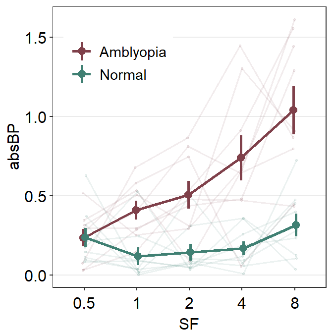
Notice that the size of the points have become smaller as the defaults of smplot2 have disappeared with the writing of xxx.params.
Now that we know how convenient it is to use the generic parameter ... to shift the plot’s position, lets use it to position_dodge and change the size of all components of the plots. Therefore, we will use size as a generic argument (sm_pointplot(size = ...,)).
ggplot(data = df2, aes(x = SF, y = absBP,
color = Group, group = Group)) +
sm_pointplot(size = 1, position = position_dodge(width = 0.1)) +
scale_color_manual(values = sm_color('darkred', 'viridian','skyblue','purple'))
5.3.3 Point plot with a shadow using data of one group
Now let’s say you would like to plot the mean data of one group (amblyopia) as well as individual plots behind the mean plot as a dim shadow by setting sm_pointplot(..., show_shadow = T).
Let’s use the same dataset and filter for observations from Condition = 'One' and Group = 'Amblyopia'.
df2a <- filter(df2, Group == 'Amblyopia')
df2a$SF <- as.factor(df2a$SF)When you decide to show shadow using sm_pointplot(), you need to specify group argument in sm_pointplot() in this format: sm_pointplot(group = xxx), where xxx is the name of the variable that includes identifiers for each observation.
In the shadow, each individual point has to be plotted, and the points have to be connected to form a line. This line has to be connected for each Subject in our example, therefore it should be set as sm_pointplot(group = Subject, ...).
Therefore, notice that there are two group arguments in this case. The first one is for the average plot in aes() in this format: ggplot(data, aes(x = ..., y =..., group = yyy)), where yyy is the name of the variable that includes identifiers for condition/group of all observers from which the average can be computed. The second group is within sm_pointplot() in this format: sm_pointplot(group = xxx), where xxx represents the name of the variable for individual identifiers.
ggplot(df2a, aes(x = SF, y = absBP, color = Group,
group = Group)) + # grouped for average
sm_pointplot(group = Subject, ## grouped for shadow
avgPoint.params = list(size=2.5),
show_shadow = T) +
scale_color_manual(values = sm_color('viridian'))
You can finely control the aesthetics of the shadow by using line.params = list() and point.params = list().
First let’s remove the defaults of the shadow.
ggplot(df2a, aes(x = SF, y = absBP, color = Group, group = Group)) +
sm_pointplot(group = Subject,
avgPoint.params = list(size=2.5),
line.params = list(),
point.params = list(),
show_shadow = T) +
scale_color_manual(values = sm_color('viridian'))
It is a mangled mess because they all have the same color viridian. We can make the shadow more transparent (alpha = 0.2).
ggplot(df2a, aes(x = SF, y = absBP, color = Group, group = Group)) +
sm_pointplot(group = Subject,
avgPoint.params = list(size=3,fill = sm_color('viridian'),
shape = 21,
color = 'white'),
avgLine.params = list(size = 1.3, alpha = 0.65),
err.params = list(size = 1.3, alpha = 0.65),
line.params = list(alpha = 0.2),
point.params = list(alpha = 0.2),
show_shadow = T) +
scale_color_manual(values = sm_color('viridian'))
Now it looks a lot better!
5.3.4 Point plot with a shadow using data of multiple groups
Now’ lets filter data from two groups Amblyopia and Normal. We can do so by using |, which means OR. & means AND.
df2b <- filter(df2, Group == 'Amblyopia' | Group == 'Normal')
df2b$SF <- as.factor(df2b$SF)
unique(df2b$Group)## [1] "Amblyopia" "Normal"After confirming that we have successfully filtered the data, we can plot the data of the two groups with a shadow for each group.
ggplot(df2b, aes(x = SF, y = absBP,
color = Group, group = Group)) +
sm_pointplot(group = Subject, show_shadow = T,
size = 1,
position = position_dodge(width = 0.08),
line.params = list(alpha = 0.1, size = 0.6),
point.params = list(alpha = 0.1, size = 0.6)) +
scale_color_manual(values = sm_color('darkred', 'viridian'))
This is a point plot that includes everything we have learned thus far, such as position_dodge(), the importance of generic paramter ..., inclusion of a shadow show_shadow = T, and using two group arguments (one for the average plot, one for the individual points for the shadow).
5.3.5 Adding and modifying legends
You can also add legend to label the two colors by setting sm_pointplot(..., legends = TRUE)
ggplot(df2b, aes(x = SF, y = absBP,
color = Group, group = Group)) +
sm_pointplot(group = Subject, show_shadow = T,
size = 1,
position = position_dodge(width = 0.08),
line.params = list(alpha = 0.1, size = 0.6),
point.params = list(alpha = 0.1, size = 0.6),
legends = TRUE) +
scale_color_manual(values = sm_color('darkred', 'viridian'))
We can move the legend to the topleft part of the plot that has most empty space using theme(legend.position = ...). Also, the title of the legend can be removed with theme(legend.title = element_blank)
ggplot(df2b, aes(x = SF, y = absBP,
color = Group, group = Group)) +
sm_pointplot(group = Subject, show_shadow = T,
size = 1,
position = position_dodge(width = 0.08),
line.params = list(alpha = 0.1, size = 0.6),
point.params = list(alpha = 0.1, size = 0.6),
legends = TRUE) +
scale_color_manual(values = sm_color('darkred', 'viridian')) +
theme(legend.position = c(0.24,0.80),
legend.title = element_blank())Note that the legend includes horizontal and vertical lines around the plot. The vertical line represents the error bar, and the horizontal line represents the line that connects between the points at various x levels. The symbols in legend can be manually modified. In this case, I will remove the vertical error bar from the legend by writing err.params = list(show.legend = FALSE).
ggplot(df2b, aes(x = SF, y = absBP,
color = Group, group = Group)) +
sm_pointplot(group = Subject, show_shadow = T,
size = 1,
position = position_dodge(width = 0.08),
line.params = list(alpha = 0.1, size = 0.6),
point.params = list(alpha = 0.1, size = 0.6),
err.params = list(show.legend = FALSE),
legends = TRUE) +
scale_color_manual(values = sm_color('darkred', 'viridian')) +
theme(legend.position = c(0.24,0.80),
legend.title = element_blank()) 
You can also think about controlling the ratio of the figure when saving the figure. In this example, base_height and base_width are specifically controlled.
ggplot(df2b, aes(x = SF, y = absBP,
color = Group, group = Group)) +
sm_pointplot(group = Subject, show_shadow = T,
size = 1,
position = position_dodge(width = 0.08),
line.params = list(alpha = 0.1, size = 0.6),
point.params = list(alpha = 0.1, size = 0.6),
err.params = list(show.legend = FALSE),
legends = TRUE) +
scale_color_manual(values = sm_color('darkred', 'viridian')) +
theme(legend.position = c(0.24,0.80),
legend.title = element_blank()) -> pointplot
print(pointplot)save_plot('pointplot.png', pointplot, base_height = 2.8,
base_width = 4)6 Raincloud and Forest Plots
Please load these three packages to go through the chapter.
library(tidyverse)
library(cowplot)
library(smplot2)6.1 Raincloud plot
A raincloud plot shows the raw data, probability density and summary statistics such as the median, quantiles etc by presenting individual data, a violin plot and a boxplot together.
It might be appealing to present all these components simultaneously to ensure that the data are shown transparently. However, whether this is truly necessary in the field of psychological/neuroscience research has not been entirely resolved because showing all at the same time can be visually overwhelming.
Nevertheless, I have decided to create a function sm_raincloud(). It is flexible and enables users to fine-control the aesthetics of the raincloud plot. I will leave it up to users to decide whether using raincloud is appropriate. Most importantly, this can depend on the type and nature of data set that is used.
Let’s generate random data to explore this function.
set.seed(211) # generate random data
group1 = abs(rnorm(20,2.5,1))
group2 = abs(rnorm(20,5,1))
Subject <- rep(paste0('S',seq(1:20)), 2)
Data <- data.frame(Value = matrix(c(group1,group2),ncol=1))
Group <- rep(c('Group 1', 'Group 2'), each = length(group1))
df <- cbind(Subject, Data, Group)In this data set, there are two distinct groups.
ggplot(data = df, mapping = aes(x = Group, y = Value, fill = Group)) +
sm_raincloud() +
scale_fill_manual(values = sm_color('blue','orange'))
The default of the individual points’ shape is 21, which is circle with borders. Therefore fill parameter has to be specified to change the filling colors.
After removing the defaults from smplot2 by including xxx.param = list(), you can set the color of all visual components by setting color = 'black' as a generic parameter. Note that the boxplot and violin have both fill and color parameters. When color = 'black' is included as a generic parameter, shape of the point becomes 16 because the default of smplot2 is overridden. Therefore, now that the point has no border, color affects the filling color rather than fill.
ggplot(data = df, mapping = aes(x = Group, y = Value, color = Group)) +
sm_raincloud(color = 'black', point.params = list(),
boxplot.params = list(),
violin.params = list()) 
The limitation of this function is that you cannot assign unique to the boxplot for each group using scale_color_manual(). We can test this using the script below.
ggplot(data = df, mapping = aes(x = Group, y = Value, color = Group)) +
sm_raincloud(point.params = list(),
boxplot.params = list(),
violin.params = list()) +
scale_color_manual(values = sm_color('blue','orange')) 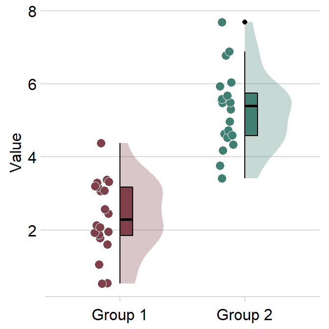
In this example, the color affects the border color of the violin. However, the boxplot’s line color is still black even with scale_color_manual().
ggplot(data = df, mapping = aes(x = Group, y = Value, fill = Group)) +
sm_raincloud(point.params = list(),
boxplot.params = list(),
violin.params = list()) +
scale_fill_manual(values = sm_color('blue','orange')) 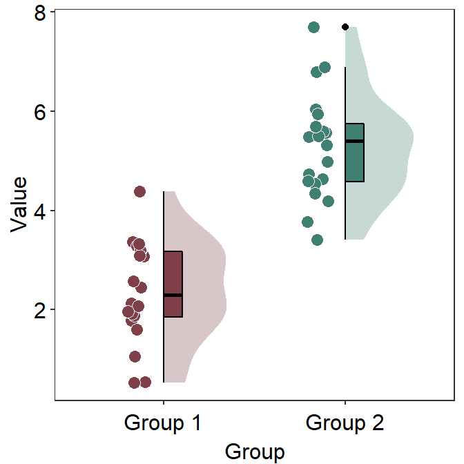
In this example, the fill affects the filling color of the violin but not points.
In most cases, users might not need to manually tweak the defaults of smplot2. This is the default appearance with two custom colors darkred and viridian.
ggplot(data = df, mapping = aes(x = Group, y = Value, fill = Group)) +
sm_raincloud() +
scale_fill_manual(values = sm_color('darkred','viridian'))
Notice that there is an outlier in Group 2. The black circle at the top that is aligned to the top viridian point indicates that the viridian point is an outlier. This option of indicating outlier can be removed setting boxplot.params = list(outlier.shape = NA).
ggplot(data = df, mapping = aes(x = Group, y = Value, fill = Group)) +
sm_raincloud(boxplot.params = list(outlier.shape = NA)) +
scale_fill_manual(values = sm_color('darkred','viridian'))
To truly modify each component of the raincloud plot that is generated using sm_raincloud(), you have to understand these xxx.param = list():
boxplot.paramsfeeds arguments togeom_half_boxplot()(almost identical togeom_boxplot()) to plot the boxplot with specifiedcolor,fill,outlier.shapeetc.violin.paramsfeeds arguments togeom_half_violin()(almost identical togeom_violin()) to plot the violin plot with specifiedcolor,alphaandfill, etcpoint.paramsfeeds arguments togeom_point()to plot the points in the shadow with specifiedcolor,fill,size,shapeandalpha.
6.1.1 Changing the x-axis labels
Note that the x-axis title is Group and the x-axis tick also says Group 1 and Group 2, making the labels repetitive. Therefore we can consider to modify the tick labels as One and Two using scale_x_discrete().
ggplot(data = df, mapping = aes(x = Group, y = Value, fill = Group)) +
sm_raincloud(boxplot.params = list(outlier.shape = NA)) +
scale_fill_manual(values = sm_color('darkred','viridian')) +
scale_x_discrete(labels = c('One', 'Two'))
Note that in smplot, scale_x_continous() was used to modify the label at each x level. In smplot2, scale_x_discrete() is used instead because sm_raincloud() keeps the x-axis discrete rather than forcibly converting it to becoming continuous.
scale_x_discrete() is used here because the data frame that is used to plot the data has categorical x variables as shown below.
df$Group## [1] "Group 1" "Group 1" "Group 1" "Group 1" "Group 1" "Group 1" "Group 1" "Group 1"
## [9] "Group 1" "Group 1" "Group 1" "Group 1" "Group 1" "Group 1" "Group 1" "Group 1"
## [17] "Group 1" "Group 1" "Group 1" "Group 1" "Group 2" "Group 2" "Group 2" "Group 2"
## [25] "Group 2" "Group 2" "Group 2" "Group 2" "Group 2" "Group 2" "Group 2" "Group 2"
## [33] "Group 2" "Group 2" "Group 2" "Group 2" "Group 2" "Group 2" "Group 2" "Group 2"This shows that df$Group is discrete and has two unique levels.
unique(df$Group)## [1] "Group 1" "Group 2"Instead of changing the x-tick label, we can remove the x-axis title instead by writing theme(axis.title.x = element_blank()).
ggplot(data = df, mapping = aes(x = Group, y = Value, fill = Group)) +
sm_raincloud(boxplot.params = list(outlier.shape = NA)) +
scale_fill_manual(values = sm_color('darkred','viridian')) +
theme(axis.title.x = element_blank())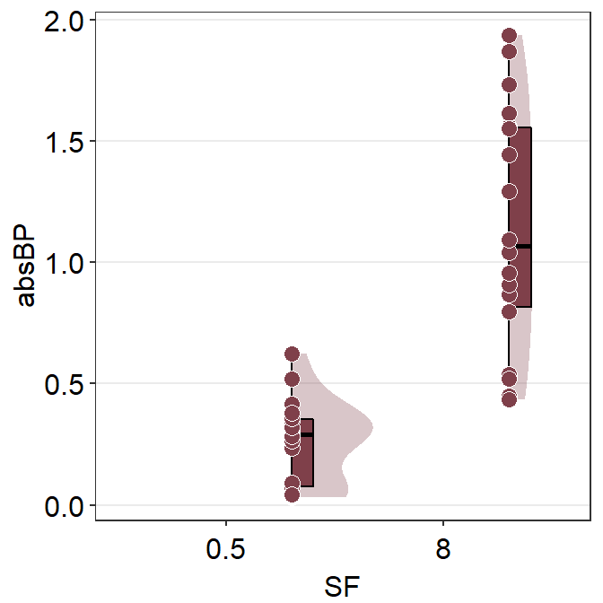
6.1.2 Separating the components and configuration
sm_raincloud() has an interesting parameter sep_level. It enables users to separate components of the raincloud plot. It is a reduced word of separation level and has a range between 0 and 4.
When sep_level = 0, all components are overlapped. If sep_level = 4, all components are separated. The default of sm_raincloud() is set to sep_level = 2.
ggplot(data = df, mapping = aes(x = Group, y = Value, fill = Group)) +
sm_raincloud(boxplot.params = list(outlier.shape = NA),
sep_level = 0) +
scale_fill_manual(values = sm_color('darkred','viridian')) +
theme(axis.title.x = element_blank())
ggplot(data = df, mapping = aes(x = Group, y = Value, fill = Group)) +
sm_raincloud(boxplot.params = list(outlier.shape = NA),
sep_level = 4) +
scale_fill_manual(values = sm_color('darkred','viridian')) +
theme(axis.title.x = element_blank())You also change the configuration of the raincloud plot so that it faces to the left rather than to the right using the argument which_side.
which_sidecontrols the configuration of the raincloud plot. It accepts'r'and'right'for right configuration (violin plot facing to the right), and'l'and'left'for left configuration.
ggplot(data = df, mapping = aes(x = Group, y = Value, fill = Group)) +
sm_raincloud(boxplot.params = list(outlier.shape = NA),
sep_level = 0,
which_side = 'l') +
scale_fill_manual(values = sm_color('darkred','viridian')) +
theme(axis.title.x = element_blank())
6.1.3 Changng the theme and orientation
sm_raincloud() uses sm_hgrid() automatically and receives legends and borders as arguments as all other visualizing functions of smplot2.
ggplot(data = df, mapping = aes(x = Group, y = Value, fill = Group)) +
sm_raincloud() +
scale_fill_manual(values = sm_color('darkred','viridian')) +
theme(axis.title.x = element_blank())
We can remove the borders by setting borders = FALSE.
ggplot(data = df, mapping = aes(x = Group, y = Value, fill = Group)) +
sm_raincloud(borders = F) +
scale_fill_manual(values = sm_color('darkred','viridian')) +
theme(axis.title.x = element_blank()) Also, you can bypass sm_hgrid() by adding another theme, such as sm_minimal().
ggplot(data = df, mapping = aes(x = Group, y = Value, fill = Group)) +
sm_raincloud() +
scale_fill_manual(values = sm_color('darkred','viridian')) +
theme(axis.title.x = element_blank()) +
sm_minimal()You can also change the orientation of the raincloud plot from vertical to horizontal by setting vertical = FALSE.
ggplot(data = df, mapping = aes(x = Group, y = Value, fill = Group)) +
sm_raincloud(vertical = FALSE) +
scale_fill_manual(values = sm_color('darkred','viridian')) 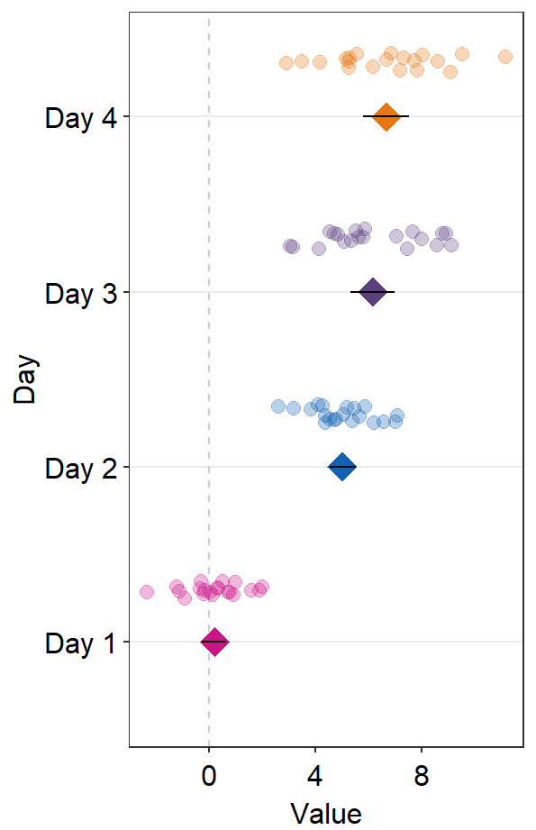
We can remove the y-axis title of the plot by using theme(axis.title.y = element_blank()) instead theme(axis.title.x = element_blank()).
ggplot(data = df, mapping = aes(x = Group, y = Value, fill = Group)) +
sm_raincloud(vertical = FALSE) +
scale_fill_manual(values = sm_color('darkred','viridian')) +
theme(axis.title.y = element_blank()) 
6.1.4 Raincloud plot with data from multiple groups
sm_raincloud() can also raincloud plots for data from multiple groups. Let’s load this fake data set.
df2 <- read_csv('https://www.smin95.com/amblyopia_random.csv')
df2a <- filter(df2, Condition == 'One')
df2a <- filter(df2, SF %in% c(0.5,8))
df2a$SF <- as.factor(df2a$SF)Make sure SF is converted to factor first because the x-scale has to be discrete, not continuous. In this example, we have filtered for SF that equals 0.5 or 8.
ggplot(data = df2a, mapping = aes(x = SF, y = absBP, fill = Group,
color = Group)) +
sm_raincloud(sep_level = 2) +
scale_fill_manual(values = sm_color('darkred','viridian')) 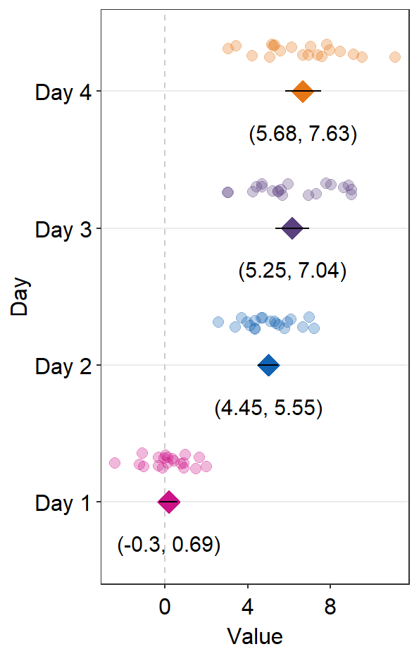
We immediately see that the plot is extremely crowded because there are four violin plots, four boxplots and overlapping individual points.
We could still try to make it visually neat, however. In the upcoming approach, we will use two separate data frames, one for each group (Normal and Amblyopia).
df2amb <- filter(df2a, Group == 'Amblyopia')
df2norm <- filter(df2a, Group == 'Normal')Next we first plot the data from one of the data frames. Make sure that the first set of raincloud plot is faced slightly to the right using position_nudge().
ggplot(mapping = aes(x = SF, y = absBP, fill = Group)) +
sm_raincloud(data = df2amb, position = position_nudge(x = +0.3)) +
scale_fill_manual(values = sm_color('darkred')) Next, we plot the viridian (Normal) data on the figure which left configuration.
ggplot(mapping = aes(x = SF, y = absBP, fill = Group)) +
sm_raincloud(data = df2amb, position = position_nudge(x = +0.15),
point.params = list(size = 3, shape = 21,
color = 'transparent', alpha = 0.4,
position = sdamr::position_jitternudge(nudge.x = 0.06,
jitter.width = 0.06))) +
scale_fill_manual(values = sm_color('darkred', 'viridian')) +
sm_raincloud(data = df2norm, which_side = 'left',
position = position_nudge(x = -0.15),
point.params = list(size = 3, shape = 21,
color = 'transparent', alpha = 0.4,
position = sdamr::position_jitternudge(nudge.x = -0.06,
jitter.width = 0.06)))
I think this attempt is somewhat acceptable. Let’s improve the aesthetics slightly by adjusting the size of the point and adding legends.
ggplot(mapping = aes(x = SF, y = absBP, fill = Group)) +
sm_raincloud(data = df2amb, position = position_nudge(x = +0.15),
show.legend = FALSE,
point.params = list(size = 2, shape = 21,
color = 'transparent',
show.legend = TRUE,
alpha = 0.3,
position = sdamr::position_jitternudge(nudge.x = 0.06, seed = 10,
jitter.width = 0.06))) +
scale_fill_manual(values = sm_color('darkred', 'viridian')) +
sm_raincloud(data = df2norm, which_side = 'left',
show.legend = FALSE,
position = position_nudge(x = -0.15),
point.params = list(size = 2, shape = 21,
show.legend = TRUE,
color = 'transparent', alpha = 0.3,
position = sdamr::position_jitternudge(nudge.x = -0.06, seed = 10,
jitter.width = 0.06))) +
theme(legend.position = c(0.24,0.85),
legend.title = element_blank(),
legend.text = element_text(size = 11)) +
ggtitle('Raincloud plot of two groups') +
scale_y_continuous(limits = c(0,2.5)) 
Another solution is to plot the raincloud plot for each group per panel, and put two panels together. In fact, I don’t recommend the reader to plot data of multiple groups within the same figure when drawing a raincloud plot.
Exercise: By using this script above with some minor changes, you can also generate boxplot (sm_boxplot()) and violin (sm_violin()) using data from multiple groups. You can try them on your own.
6.2 Forest plot
A forest plot is commonly known as a visualization method to summarise data across multiple studies or experiments. For this reason, it has been widely used in meta analysis studies that aim to summarise the results of tens or hundreds of studies into a few figures. I believe that forest plot’s usage can exceed beyond simple meta analysis, all the way to describing results from a single study with numerous experimental conditions.
Let’s generate some random data first and draw a forest plot using sm_forest() to explore what the function provides.
set.seed(2) # generate random data
day1 = rnorm(20,0,1)
day2 = rnorm(20,5,1)
day3 = rnorm(20,6,1.5)
day4 = rnorm(20,7,2)
Subject <- rep(paste0('S',seq(1:20)), 4)
Data <- data.frame(Value = matrix(c(day1,day2,day3,day4),ncol=1))
Day <- rep(c('Day 1', 'Day 2', 'Day 3', 'Day 4'), each = length(day1))
df2 <- cbind(Subject, Data, Day)When using sm_forest(), x is required to be a continuous variable. y should be a categorical variable (i.e., factor).
ggplot(data = df2, aes(x = Value, y = Day, color = Day)) +
sm_forest() 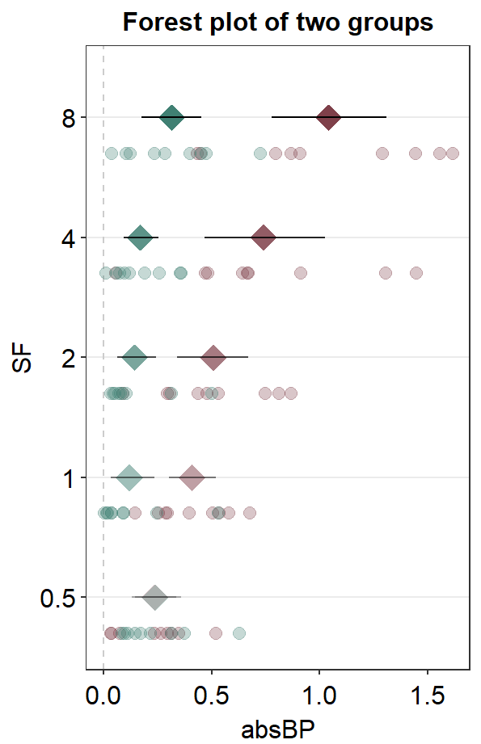
sm_forest() has various xxx.params arguments as well as ... generic parameter to control the aesthetics across various components of the plot.
avgPoint.paramssends arguments togeom_point()to plot the average point with specifiedcolor,fill,size,shapeandalpha.err.params = list()sends arguments, such ascolor, togeom_linerange()to plot the error bar.point.params = list()sends arguments, such ascolor,fill, andalphatogeom_point()to plot the individual points.refLine.params = list()sends arguments, such ascolorandsizetogeom_vline()to plot the reference line.
We can reset all the defaults by listing these parameters as xxx.params = list().
ggplot(data = df2, aes(x = Value, y = Day, color = Day)) +
sm_forest(avgPoint.params = list(),
err.params = list(),
point.params = list())Let’s restore the defaults and change colors now using scale_color_manual().
ggplot(data = df2, aes(x = Value, y = Day, color = Day)) +
sm_forest() +
scale_color_manual(values = sm_palette(4))
These points could be jittered (point_jitter_width) and increase the separation level between the average point and the individual points (sep_level), which has no limited range as opposed to 0-4 in sm_raincloud().
ggplot(data = df2, aes(x = Value, y = Day, color = Day)) +
sm_forest(point_jitter_width = 0.12, sep_level = 3) +
scale_color_manual(values = sm_palette(4))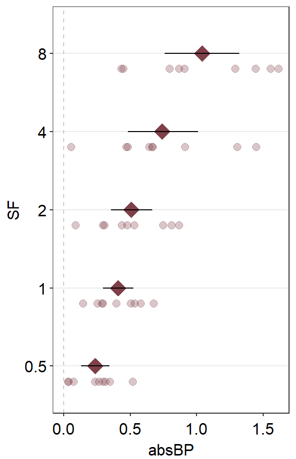
If sep_level is positive, the average point is above the individual points. If sep_level is negative, then the average point is below the individual points.
ggplot(data = df2, aes(x = Value, y = Day, color = Day)) +
sm_forest(point_jitter_width = 0.12, sep_level = -3) +
scale_color_manual(values = sm_palette(4))
The default error bar type is 95% confidence interval (errorbar_type = 'ci'). You can change it to either standard error ('se') or standard deviation ('sd'). Here is standard deviation.
ggplot(data = df2, aes(x = Value, y = Day, color = Day)) +
sm_forest(point_jitter_width = 0.12, sep_level = 3,
errorbar_type = 'sd') +
scale_color_manual(values = sm_palette(4))
A common practice is to annotate the error range (95% confidence interval) in text on on the forest plot. This could be done using sm_forest_annot().
ggplot(data = df2, aes(x = Value, y = Day, color = Day)) +
sm_forest(point_jitter_width = 0.12, sep_level = 3) +
scale_color_manual(values = sm_palette(4)) +
sm_forest_annot(data = df2, x = Value, y = Day, sep_level = 3)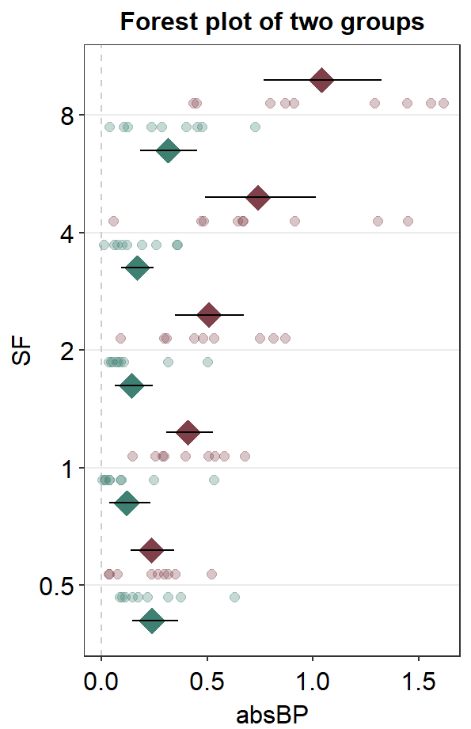
sm_forest_annot() has various arguments. These arguments should be identical to what you have provided ggplot(data = ..., aes(x = ..., y = ...).
The
dataargument requires the variable that stores the data frame that is used to plot the data, which isdf2in this example.xargument is the variable that is plotted along the x-axis.yargument is the variable that is plotted along the y-axis.
Also, there are some additional arguments.
sep_levelrefers to the separation level between the text annotation and the average point. If it is positive, the text will be above the mean point. In practice, put the same value ofsep_levelin bothsm_forest()andsm_forest_annot(). The default issep_level = 2, which is also found insm_forest().errorbar_typerefers to the type of error by which the text annotation should be written. In practice, put the same argument ofsep_levelin bothsm_forest()andsm_forest_annot(). The default is set to confidence interval (errorbar_type = 'ci').text.paramsfeeds arguments togeom_text()to set the aesthetics of the texts such ascolorandsize.
We can try sep_level = -3 across sm_forest() and sm_forest_annot() to see what happens.
ggplot(data = df2, aes(x = Value, y = Day, color = Day)) +
sm_forest(point_jitter_width = 0.12, sep_level = -3) +
scale_color_manual(values = sm_palette(4)) +
sm_forest_annot(data = df2, x = Value, y = Day, sep_level = -3)
We see that the positions of the individual points and texts have been flipped in relation to the average points.
You can also draw a vertical reference line by setting refLine = TRUE.
ggplot(data = df2, aes(x = Value, y = Day, color = Day)) +
sm_forest(point_jitter_width = 0.12, sep_level = -3,
refLine = TRUE) +
scale_color_manual(values = sm_palette(4)) +
sm_forest_annot(data = df2, x = Value, y = Day, sep_level = -3)
We could change the reference line’s location using the argument xintercept.
ggplot(data = df2, aes(x = Value, y = Day, color = Day)) +
sm_forest(point_jitter_width = 0.12, sep_level = -3,
refLine = TRUE,
xintercept = 4) +
scale_color_manual(values = sm_palette(4)) +
sm_forest_annot(data = df2, x = Value, y = Day, sep_level = -3)
We could change the aesthetics of the reference line using refLine.params.
ggplot(data = df2, aes(x = Value, y = Day, color = Day)) +
sm_forest(point_jitter_width = 0.12, sep_level = -3,
refLine = TRUE,
xintercept = 4,
ref.params = list(size = 1, alpha = 0.3,
color = sm_color('darkred'))) +
scale_color_manual(values = sm_palette(4)) +
sm_forest_annot(data = df2, x = Value, y = Day, sep_level = -3)6.2.1 Plotting the forest plot using data of multiple groups
Plotting the forest plot using data of multiple groups is also possible with sm_forest(). To explore this feature, lets upload data from online.
df <- read_csv('https://www.smin95.com/amblyopia_random.csv')
df$SF <- as.factor(df$SF)
df1 <- filter(df, Condition == 'One') Now let’s plot these data using sm_forest(). Make sure that group the data for each group group = Group.
ggplot(df1, aes(x = absBP, y = SF, color = Group, group = Group)) +
sm_forest(sep_level = 3) +
scale_color_manual(values = sm_color('darkred', 'viridian')) +
ggtitle('Forest plot of two groups') 
We could also set the transparency of the points so that the alpha increases over SF.
ggplot(df1, aes(x = absBP, y = SF, color = Group, alpha = SF, group =Group)) +
sm_forest(sep_level = 3) +
scale_color_manual(values = sm_color('darkred', 'viridian')) +
scale_alpha_manual(values = c(0.3,0.5,0.7,0.85, 1)) +
ggtitle('Forest plot of two groups')
The issue with this plot is that the individual points are overlapped, as well as the mean points at 0.5 on the y-axis SF. You could use position_dodge() to dodge the position of one group to prevent the overlap.
ggplot(df1, aes(x = absBP, y = SF, color = Group, alpha = SF, group =Group)) +
sm_forest(sep_level = 3,
position = position_dodge(width = .8)) +
scale_color_manual(values = sm_color('darkred', 'viridian')) +
scale_alpha_manual(values = c(0.3,0.5,0.7,0.85, 1)) +
ggtitle('Forest plot of two groups')
As in sm_raincloud(), we could split the data frames into two and plot them separately.
df1amb <- filter(df1, Group == 'Amblyopia')
df1norm <- filter(df1, Group == 'Normal')We could plot each group separately using the two data frames. First, plot the Amblyopia group.
ggplot(mapping = aes(x = absBP, y = SF, color = Group, fill = Group)) +
sm_forest(data = df1amb) +
scale_color_manual(values = sm_color('darkred', 'viridian')) 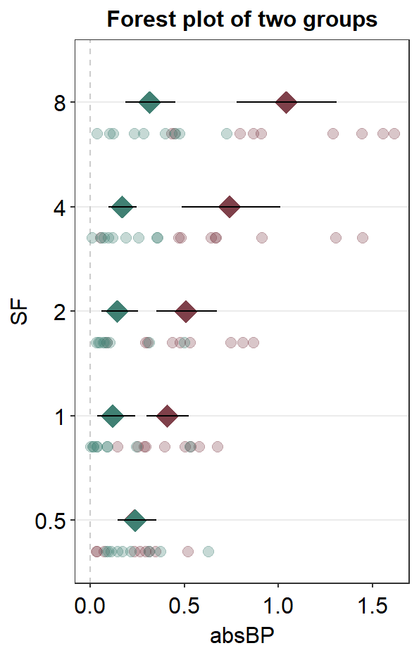
Next, apply position_nudge() to move all the components.
ggplot(mapping = aes(x = absBP, y = SF, color = Group, fill = Group)) +
sm_forest(data = df1amb, position = position_nudge(y = +0.25)) +
scale_color_manual(values = sm_color('darkred', 'viridian')) 
We see that sep_level = 2 no longer works when we apply position_nudge() here because sep_level also controls the position of the components using position_nudge(). We have bypassed its control by explicitly writing position_nudge(). Therefore, we will need to separate the points from the mean points manually by using point.params.
ggplot(mapping = aes(x = absBP, y = SF, color = Group, fill = Group)) +
sm_forest(data = df1amb, position = position_nudge(y = +0.4),
point.params = list(size = 2,
show.legend = FALSE, alpha = 0.3,
position = position_nudge(y = 0.2))) +
scale_color_manual(values = sm_color('darkred', 'viridian')) 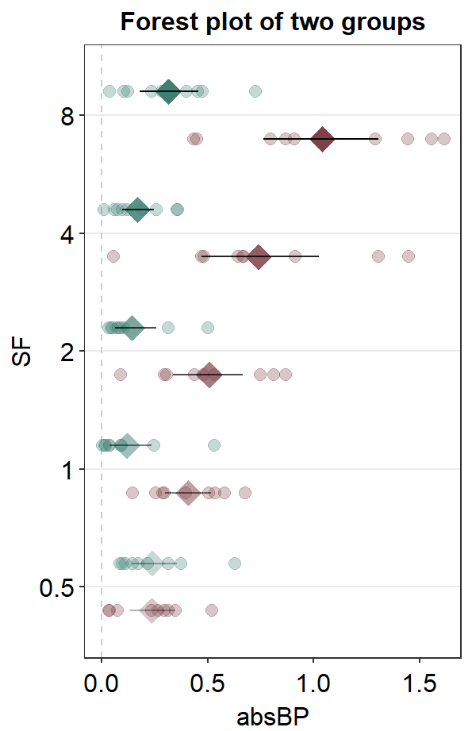
Then, we can plot the data of Normal on top of the Amblyopia plot.
ggplot(mapping = aes(x = absBP, y = SF, color = Group, fill = Group)) +
sm_forest(data = df1amb, position = position_nudge(y = +0.3),
point.params = list(size = 2, alpha = 0.3,
position = position_nudge(y = 0.1))) +
scale_color_manual(values = sm_color('darkred', 'viridian')) +
sm_forest(data = df1norm,
position = position_nudge(y = -0.3),
point.params = list(size = 2,
show.legend = FALSE, alpha = 0.3,
position = position_nudge(y = -0.1))) +
ggtitle('Forest plot of two groups') This looks acceptable. Another solution is to just remove the individual points altogether by setting sm_forest(points = FALSE). In this method, we do not need to split the data frame into two.
ggplot(df1, aes(x = absBP, y = SF, color = Group, alpha = SF, group = Group)) +
sm_forest(sep_level = 3,
position = position_dodge(width = .8), points = FALSE) +
scale_color_manual(values = sm_color('darkred', 'viridian')) +
scale_alpha_manual(values = c(0.3,0.5,0.7,0.85, 1)) +
ggtitle('Forest plot of two groups')Also, sm_forest_annot() can be used to provide text annotations for the error range when presenting data of multiple groups. However, first, we will need to separate the two data frames as shown below for each group: Amblyopia and Normal.
df1amb <- filter(df1, Group == 'Amblyopia')
df1norm <- filter(df1, Group == 'Normal')Next, we will have to position_nudge for each annotation and group. There are five numbers that are provided in position_nudge(); the first one is for SF = 0.5, and the last one is for SF = 8.
ggplot(mapping = aes(x = absBP, y = SF, color = Group)) +
sm_forest(data = df1amb, position = position_nudge(y = +0.2),
points = FALSE) +
sm_forest_annot(data = df1amb, x = absBP, y = SF,
position = position_nudge(y = c(0.2,-0.2,-0.2,-0.2,-0.2),
x = c(0.4,0,0,0,0)),
text.params = list(color = sm_color('darkred'),
size = 3)) +
scale_color_manual(values = sm_color('darkred', 'viridian')) +
sm_forest(data = df1norm,
position = position_nudge(y = -0.2),
points = FALSE) +
sm_forest_annot(data = df1norm, x = absBP, y = SF,
position = position_nudge(y = c(-0.18,0.2,0.2,0.2,0.2),
x = c(0.4, 0, 0, 0,0)),
text.params = list(color = sm_color('viridian'),
size = 3)) +
ggtitle('Forest plot of two groups')Here is the forest plot with data from multiple groups with text annotations but without individual points. As you may realize, text annotations can be extremely tedious so much so that I personally think using Adobe Illustrator might be better in this case.
7 Combining Plots with Common Axes
First, you need to load data (.csv file). When you are loading your own .csv file for your data analysis, make sure you place the .csv file of your interest in the folder that has been set to the working directory.
In this example, we will be using data from this paper:
Seung Hyun Min, Alex S. Baldwin and Robert F. Hess. Ocular dominance plasticity: A binocular combination task finds no cumulative effect with repeated patching (2019). Vision Research, 161, 36-42.
We will be creating similar figures to those in the paper (ex. Figure 3A and Figure A2) using smplot. For the PDF copy, please visit this link.
library(tidyverse)df <- read_csv('https://www.smin95.com/min2019.csv')df$Day <- factor(df$Day)
head(df)## # A tibble: 6 x 4
## Subject Day Time Cbratio
## <chr> <fct> <dbl> <dbl>
## 1 S1 1 0 -0.421
## 2 S2 1 0 2.82
## 3 S3 1 0 1.69
## 4 S4 1 0 2.55
## 5 S5 1 0 -0.217
## 6 S6 1 0 0.626There are four columns in this data frame:
First,
Subjectrefers to each participant. There are 10 participants total.Next,
Dayrefers to the day of testing. The participants were tested on Day 1, 2, 3, 4 and 5. We will only use Day from 1 and 5.Timerefers to the number of minutes after an experimental manipulation (ex. monocular deprivation). These are 0, 3, 6, 12, 24 and 48 minutes, but in the data frame, it says 0, 1, 2, 3, 4 and 5; we will change the labels manually.The
Cbratiocolumn refers to the actual data that will be plotted here.
In the example below, the plots will have different colors based on Day (1 or 5). Therefore, the values in Day column have to be discrete, not continuous. To make them discrete, one needs to convert the Day column from double (continuous variable) to factor (discrete variable).
7.1 filter(), select() and summarise()
7.1.1 filter() for rows
To plot data of each subject separately, we need the data frame to show data only from one subject. This can be achieved as using filter():
filter(df, Subject == 'S1')## # A tibble: 12 x 4
## Subject Day Time Cbratio
## <chr> <fct> <dbl> <dbl>
## 1 S1 1 0 -0.421
## 2 S1 1 1 0.802
## 3 S1 1 2 1.01
## 4 S1 1 3 0.634
## 5 S1 1 4 -0.245
## 6 S1 1 5 -0.834
## 7 S1 5 0 2.42
## 8 S1 5 1 1.76
## 9 S1 5 2 1.91
## 10 S1 5 3 0.609
## 11 S1 5 4 0.811
## 12 S1 5 5 0.363- The first argument of
filter(),select(),summarise()andmutate()is a data frame. - The subsequent argument specifies how the data frame should be treated.
- The new printed result is a new data frame.
filter() is used to filter for rows that meet the requirement of your interest.
Here is another example.
filter(df, Day == 1)## # A tibble: 60 x 4
## Subject Day Time Cbratio
## <chr> <fct> <dbl> <dbl>
## 1 S1 1 0 -0.421
## 2 S2 1 0 2.82
## 3 S3 1 0 1.69
## 4 S4 1 0 2.55
## 5 S5 1 0 -0.217
## 6 S6 1 0 0.626
## 7 S7 1 0 2.62
## 8 S8 1 0 1.42
## 9 S9 1 0 1.54
## 10 S10 1 0 3.05
## # ... with 50 more rowsThe above code can be read as: filter for all rows of the data frame df that have 1 in the Day column.
Notice that S1 is a character because it has an alphabet. Therefore, it needs to be written as 'S1'. However, 1 of Day is double, which is essentially just a number digit. Therefore, it can be written as 1 with no quotation mark.
Let’s try another example.
day1 <- filter(df, Day == 1) # save the new data frame into a new variable
filter(day1, Subject == 'S1') # this new data frame contains Day 1 and Subject 1 data only.## # A tibble: 6 x 4
## Subject Day Time Cbratio
## <chr> <fct> <dbl> <dbl>
## 1 S1 1 0 -0.421
## 2 S1 1 1 0.802
## 3 S1 1 2 1.01
## 4 S1 1 3 0.634
## 5 S1 1 4 -0.245
## 6 S1 1 5 -0.834The above code can be read as: filter for all rows of the data frame df that have 1 in the Day column. Save this new data frame as day1. Then, filter for all rows of the data frame day1 that have S1 in the Subject column.
The above can also be written like the one below:
filter(df, Day == 1 & Subject == 'S1')## # A tibble: 6 x 4
## Subject Day Time Cbratio
## <chr> <fct> <dbl> <dbl>
## 1 S1 1 0 -0.421
## 2 S1 1 1 0.802
## 3 S1 1 2 1.01
## 4 S1 1 3 0.634
## 5 S1 1 4 -0.245
## 6 S1 1 5 -0.834The above can be read as: filter for all rows of the data frame df that have 1 in the Day column AND have S1 in the Subject column.
filter(df, Day == 1 | Subject == 'S1')## # A tibble: 66 x 4
## Subject Day Time Cbratio
## <chr> <fct> <dbl> <dbl>
## 1 S1 1 0 -0.421
## 2 S2 1 0 2.82
## 3 S3 1 0 1.69
## 4 S4 1 0 2.55
## 5 S5 1 0 -0.217
## 6 S6 1 0 0.626
## 7 S7 1 0 2.62
## 8 S8 1 0 1.42
## 9 S9 1 0 1.54
## 10 S10 1 0 3.05
## # ... with 56 more rowsThe above can be read as: filter for all rows of the data frame df that have 1 in the Day column OR have S1 in the Subject column. | represents OR, & represents AND.
7.1.2 select() for columns
If you wish to see the Cbratio column only (i.e., data only) for rows of df that have Day == 1 and Time == 0, you can write it like this:
day1_time0 <- filter(df, Day == 1 & Time == 0) # save the new data frame in the day1_time0 variable
select(day1_time0, Cbratio)## # A tibble: 10 x 1
## Cbratio
## <dbl>
## 1 -0.421
## 2 2.82
## 3 1.69
## 4 2.55
## 5 -0.217
## 6 0.626
## 7 2.62
## 8 1.42
## 9 1.54
## 10 3.05There are 10 rows (i.e., 10 subjects) in this filtered data frame and 1 column, which is Cbratio. The above can be read as: filter for all rows of the data frame df that have 1 in the Day column AND have 0 in the Time column. Then, store the new data frame in day1_time0. Then, select for Cbratio column from day1_time0.
select() is used to filter for columns that meet the requirement of your interest.
7.1.3 summarise() for grouped summaries
df contains individual data for all subjects on Days 1 and 5 across all time points. However, it does not contain average data either for each Day or Time.
summarise() can collapse multiple rows of observations into values such as the mean.
summarise(df, average = mean(Cbratio))## # A tibble: 1 x 1
## average
## <dbl>
## 1 1.35However, in this case, we get an example of Cbratio across Subject, Day and Time. This average value itself is not so meaningful. If we wish to obtain the average for each Day and Time, we can use the function group_by() to group data for each day and time.
As it was the case before, the first argument of
group_by()is a data frame.The second argument of
group_by()is the name of the column through which you would like to group the data.
by_day_time <- group_by(df, Day, Time)
print(by_day_time)## # A tibble: 120 x 4
## # Groups: Day, Time [12]
## Subject Day Time Cbratio
## <chr> <fct> <dbl> <dbl>
## 1 S1 1 0 -0.421
## 2 S2 1 0 2.82
## 3 S3 1 0 1.69
## 4 S4 1 0 2.55
## 5 S5 1 0 -0.217
## 6 S6 1 0 0.626
## 7 S7 1 0 2.62
## 8 S8 1 0 1.42
## 9 S9 1 0 1.54
## 10 S10 1 0 3.05
## # ... with 110 more rowsThe output of group_by() is a new data frame (it might appear exactly the same as before, ex. df). However, it will respond differently to summarise() because the rows of the data frame are now grouped based on day and time, as we have specified.
summarise(by_day_time, Average_Cbratio = mean(Cbratio))## # A tibble: 12 x 3
## # Groups: Day [2]
## Day Time Average_Cbratio
## <fct> <dbl> <dbl>
## 1 1 0 1.57
## 2 1 1 2.21
## 3 1 2 2.32
## 4 1 3 0.979
## 5 1 4 1.25
## 6 1 5 1.14
## 7 5 0 1.85
## 8 5 1 1.49
## 9 5 2 1.02
## 10 5 3 1.15
## 11 5 4 0.759
## 12 5 5 0.452This new data frame yields average for each Day and Time. We have now created a new column Average_Cbratio which stores all the average data of Cbratio.
Therefore, group_by() and summarise() are very useful together. They provide grouped summaries, such as the average. However, summarise() alone may not be so useful. group_by() alone is also rarely used.
Besides the average, one might also be interested in obtaining either standard deviation or standard error.
However, our df does not contain any data about the standard deviation or standard error per Day or Time, etc. Standard deviation can be calculated via sd() and standard error can be computed with sm_stdErr().
Below, we obtain standard error with the help of the summarise() function for each Day and Time.
summarise(df, standard_error = sm_stdErr(Cbratio))## # A tibble: 1 x 1
## standard_error
## <dbl>
## 1 0.115As we have seen before, we see that standard_error has been calculated across all subjects, day and time. This is not so useful. We should use summarise() with group_by() so that each standard error could be for each Day and Time.
by_day_time <- group_by(df, Day, Time)
summarise(by_day_time, standard_error = sm_stdErr(Cbratio))## # A tibble: 12 x 3
## # Groups: Day [2]
## Day Time standard_error
## <fct> <dbl> <dbl>
## 1 1 0 0.393
## 2 1 1 0.363
## 3 1 2 0.400
## 4 1 3 0.352
## 5 1 4 0.266
## 6 1 5 0.438
## 7 5 0 0.563
## 8 5 1 0.422
## 9 5 2 0.462
## 10 5 3 0.224
## 11 5 4 0.292
## 12 5 5 0.193This standard error is for each Day and Time across all subjects.
Now let’s obtain the mean and standard error of Cbratio for each Day and Time across all subjects using the data frame that has been grouped by Day and Time via group_by().
by_day_time1 <- summarise(by_day_time, Average = mean(Cbratio),
StdError = sm_stdErr(Cbratio))
print(by_day_time1)## # A tibble: 12 x 4
## # Groups: Day [2]
## Day Time Average StdError
## <fct> <dbl> <dbl> <dbl>
## 1 1 0 1.57 0.393
## 2 1 1 2.21 0.363
## 3 1 2 2.32 0.400
## 4 1 3 0.979 0.352
## 5 1 4 1.25 0.266
## 6 1 5 1.14 0.438
## 7 5 0 1.85 0.563
## 8 5 1 1.49 0.422
## 9 5 2 1.02 0.462
## 10 5 3 1.15 0.224
## 11 5 4 0.759 0.292
## 12 5 5 0.452 0.193The original df, which contains data for each subject, has now been transformed to a new data frame that contains grouped summaries, such as group averages and standard errors.
If you are interested in learning more about this topic (data transformation), please check out Chapter 5 of R for Data Science by Hadley Wickham (https://r4ds.had.co.nz/transform.html).
7.2 Plotting the averaged data with error bars
Plotting the averaged data can be done with a data frame that contains individual observation (ex. each subject, condition, etc). This data frame can be modified to only contain summary values, such as mean and standard error, using group_by() and summarise() together as shown above.
We will plot a similar graph to Figure 3A in the Vision Research paper (Min et al., 2019) in this section.
- A data frame that has grouped summary information (
group_by()andsummarise()), such as average and standard error across subject, is needed to plot a graph that shows the average data with error bars. geom_errorbar()is required to plot the error bar of the sample.- Legend title has been removed with the
theme()function. - Greek letter Delta is printed with
\u0394. - X-tick labels are originally 0, 1, 2, 3, 4, 5 (as specified in the df data frame). However, they can be manually changed using
labels =argument in thescale_x_continuous()function. - Legend label can also be changed in
labels =from thescale_color_manual()function because eachDayhas been defined by eachcolor; this is the case becausecolor = Dayinaes(..., ..., color = Day).
ggplot(data = by_day_time1, aes(x = Time, y = Average, color = Day)) +
geom_point(size = 4.5) +
geom_errorbar(aes(ymin = Average - StdError, ymax = Average + StdError), size = .5, width = .05) +
geom_smooth(method = 'lm', se = F, size = 0.9) +
# lm = linear regression method
scale_x_continuous(breaks = unique(df$Time),
labels = c("0", "3", "6", "12", "24", "48")) +
sm_hgrid(legends = TRUE) +
scale_color_manual(values = sm_color('blue','orange'),
labels = c("Day 1", "Day 5")) +
ggtitle("Recovery of the patching effect") +
xlab("Time after monocular deprivation (min)") +
ylab("\u0394 Contrast balance ratio (dB)") +
theme(legend.justification = c(1,0),
legend.position = c(0.96, 0.67),
legend.title = element_blank()) 
7.3 Plotting individual data
In this section, we will plot a similar graph to Figure A2 in the Vision Research paper (Min et al., 2019).
First, you will need several packages for this section.
- If you do not have the gridExtra and grid packages in your RStudio, please install them using the codes below. It might take less than a minute.
install.packages('gridExtra')
install.packages('grid')- Then load all these packages below.
library(tidyverse)
library(cowplot)
library(smplot2)
library(gridExtra)
library(grid)Now let’s plot data for each subject (S1-S9) except S10. Each panel shows the data of each subject for both Days 1 and 5.
df_s1 <- filter(df, Subject == 'S1')
# rows of df that only contain S1 in the Subject column
# use df_s1 to plot the data of S1
plot_s1 <- ggplot(data = df_s1, aes(x = Time, y = Cbratio, color = Day)) +
geom_point(size = 4.5) +
geom_smooth(method = 'lm', se = F, size = 0.9) +
# lm = linear regression method
scale_x_continuous(breaks = unique(df$Time),
labels = c("0", "3", "6", "12", "24", "48")) +
sm_hgrid() +
scale_color_manual(values = sm_color('blue','orange')) +
scale_y_continuous(limits = c(-3, 5.5)) +
theme(axis.text = element_text(size = rel(1.5), color = "black"))
# axis text size is 1.5x the original font size.
print(plot_s1)
Then make each one for the other subjects (S2-S9).
df_s2 <- filter(df, Subject == 'S2')
plot_s2 <- ggplot(data = df_s2, aes(x = Time, y = Cbratio, color = Day)) +
geom_point(size = 4.5) +
geom_smooth(method = 'lm', se = F, size = 0.9) +
# lm = linear regression method
scale_x_continuous(breaks = unique(df$Time),
labels = c("0", "3", "6", "12", "24", "48")) +
sm_hgrid() +
scale_color_manual(values = sm_color('blue','orange')) +
scale_y_continuous(limits = c(-3, 5.5)) +
theme(axis.text = element_text(size = rel(1.5), color = "black"))
# axis text size is 1.5x the original font size.
print(plot_s2)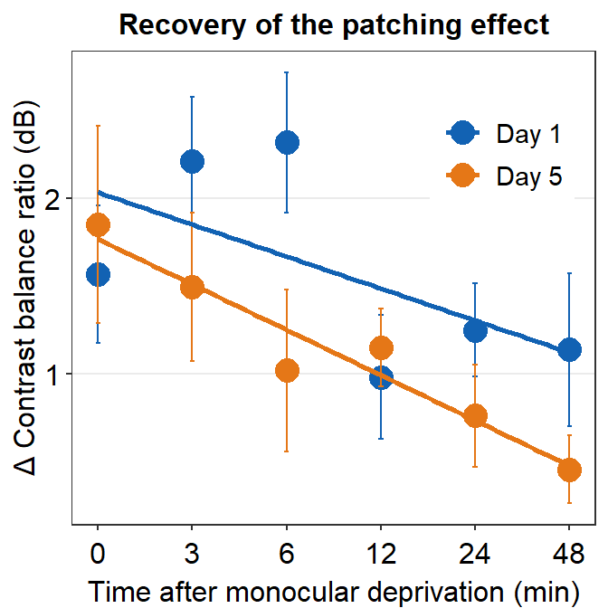
df_s3 <- filter(df, Subject == 'S3')
plot_s3 <- ggplot(data = df_s3, aes(x = Time, y = Cbratio, color = Day)) +
geom_point(size = 4.5) +
geom_smooth(method = 'lm', se = F, size = 0.9) +
# lm = linear regression method
scale_x_continuous(breaks = unique(df$Time),
labels = c("0", "3", "6", "12", "24", "48")) +
sm_hgrid() +
scale_color_manual(values = sm_color('blue','orange')) +
scale_y_continuous(limits = c(-3, 5.5)) +
theme(axis.text = element_text(size = rel(1.5), color = "black"))
# axis text size is 1.5x the original font size.
print(plot_s3)
df_s4 <- filter(df, Subject == 'S4')
plot_s4 <- ggplot(data = df_s4, aes(x = Time, y = Cbratio, color = Day)) +
geom_point(size = 4.5) +
geom_smooth(method = 'lm', se = F, size = 0.9) +
# lm = linear regression method
scale_x_continuous(breaks = unique(df$Time),
labels = c("0", "3", "6", "12", "24", "48")) +
sm_hgrid() +
scale_color_manual(values = sm_color('blue','orange')) +
scale_y_continuous(limits = c(-3, 5.5)) +
theme(axis.text = element_text(size = rel(1.5), color = "black"))
# axis text size is 1.5x the original font size.
print(plot_s4)# Subject 5
df_s5 <- filter(df, Subject == 'S5')
# rows of df that only contain S5 in the Subject column
plot_s5 <- ggplot(data = df_s5, aes(x = Time, y = Cbratio, color = Day)) +
geom_point(size = 4.5) +
geom_smooth(method = 'lm', se = F, size = 0.9) +
# lm = linear regression method
scale_x_continuous(breaks = unique(df$Time),
labels = c("0", "3", "6", "12", "24", "48")) +
sm_hgrid(legends = TRUE) + # show legends for the color
scale_color_manual(values = sm_color('blue','orange')) +
scale_y_continuous(limits = c(-3, 5.5)) +
theme(axis.text = element_text(size = rel(1.5), color = "black")) + # axis text size is 1.5x the original font size.
theme(legend.justification = c(1,0),
legend.position = c(0.96, 0.65))
# location of legend (color label)
print(plot_s5)# Subject 6
df_s6 <- filter(df, Subject == 'S6')
# rows of df that only contain S6 in the Subject column
plot_s6 <- ggplot(data = df_s5, aes(x = Time, y = Cbratio, color = Day)) +
geom_point(size = 4.5) +
geom_smooth(method = 'lm', se = F, size = 0.9) +
# lm = linear regression method
scale_x_continuous(breaks = unique(df$Time),
labels = c("0", "3", "6", "12", "24", "48")) +
sm_hgrid() +
scale_color_manual(values = sm_color('blue','orange')) +
scale_y_continuous(limits = c(-3, 5.5)) +
theme(axis.text = element_text(size = rel(1.5), color = "black"))
# axis text size is 1.5x the original font size.
print(plot_s6)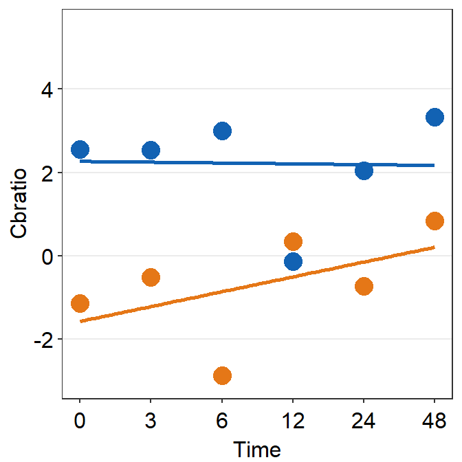
df_s7 <- filter(df, Subject == 'S7')
plot_s7 <- ggplot(data = df_s7, aes(x = Time, y = Cbratio, color = Day)) +
geom_point(size = 4.5) +
geom_smooth(method = 'lm', se = F, size = 0.9) +
# lm = linear regression method
scale_x_continuous(breaks = unique(df$Time),
labels = c("0", "3", "6", "12", "24", "48")) +
sm_hgrid() +
scale_color_manual(values = sm_color('blue','orange')) +
scale_y_continuous(limits = c(-3, 5.5)) +
theme(axis.text = element_text(size = rel(1.5), color = "black"))
# axis text size is 1.5x the original font size.
print(plot_s7)
df_s8 <- filter(df, Subject == 'S8')
plot_s8 <- ggplot(data = df_s8, aes(x = Time, y = Cbratio, color = Day)) +
geom_point(size = 4.5) +
geom_smooth(method = 'lm', se = F, size = 0.9) +
# lm = linear regression method
scale_x_continuous(breaks = unique(df$Time),
labels = c("0", "3", "6", "12", "24", "48")) +
sm_hgrid() +
scale_color_manual(values = sm_color('blue','orange')) +
scale_y_continuous(limits = c(-3, 5.5)) +
theme(axis.text = element_text(size = rel(1.5), color = "black"))
# axis text size is 1.5x the original font size.
print(plot_s8)
# Subject 9
df_s9 <- filter(df, Subject == 'S9')
plot_s9 <- ggplot(data = df_s9, aes(x = Time, y = Cbratio, color = Day)) +
geom_point(size = 4.5) +
geom_smooth(method = 'lm', se = F, size = 0.9) +
# lm = linear regression method
scale_x_continuous(breaks = unique(df$Time),
labels = c("0", "3", "6", "12", "24", "48")) +
sm_hgrid() +
scale_color_manual(values = sm_color('blue','orange')) +
scale_y_continuous(limits = c(-3, 5.5)) +
theme(axis.text = element_text(size = rel(1.5), color = "black"))
# axis text size is 1.5x the original font size.
print(plot_s9)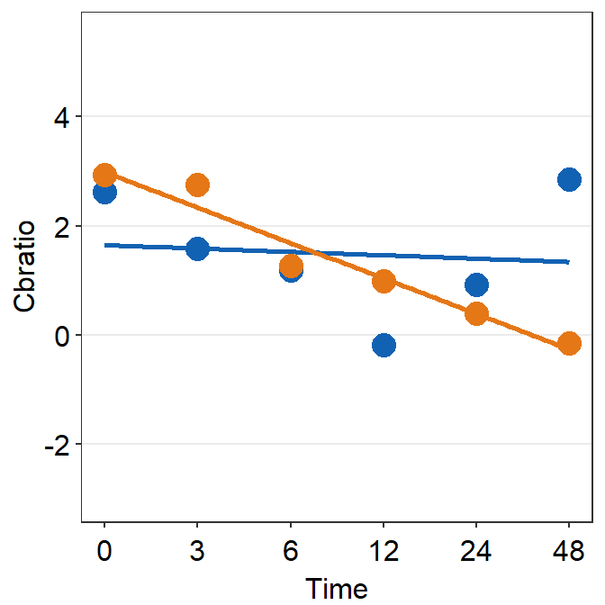
7.4 Putting multiple plots together
Now let’s put them together in a 3x3 figure (3 rows, 3 columns) using the function plot_grid from the cowplot package. Here is the illustration of what we are going to do.

(#fig:unnamed-chunk-275)3x3 figure. It has 3 columns and 3 rows
When you are saving the graph as an image file, nrow and ncol in save_plot() have to match the values in plot_grid() as shown below.
plot_grid() is a function that puts different graphs together (ex. 3x3 structure). For more information about the function plot_grid, please type ?plot_grid in the console.
save_plot() is a function that saves a selected graph into an image or PDF file (or eps, etc).
together1 <- plot_grid(plot_s1, plot_s2, plot_s3,
plot_s4, plot_s5, plot_s6,
plot_s7, plot_s8, plot_s9,
ncol = 3, # 3 columns in the final figure
nrow = 3, # 3 rows in the final figure
align = 'hv',# set to the same horizontal and vertical # lengths of each panel.
labels = c('S1','S2', 'S3', 'S4','S5','S6',
'S7','S8','S9'), # each panel label
label_x = 0.14,# horizontal position of the panel's
# label relative to each panel. 0 is the very
# left of the plot.
label_y = 0.97) # vertical position of the panel's
# label relative to each panel. 1 is the very
# top of the plot.
print(together1)save_plot('together1.png',together1,nrow=3,ncol=3,base_asp=0.95)
# save as an image. ncol and nrow in save_plot()
# nrow and ncol in save_plot() have to match the values in plot_grid() as shown above. Open together1.png in your directory folder. Notice that the png file may look different from the one printed in your RStudio screen or on the browser as shown in this guide. As long as your png file looks good, it should be okay.
Note that there are some repeating x and y-axes labels. We can remove them in this example because the y-axis and x-axis scales are set to the same limit using scale_x_continuous() and scale_y_continuous(). In other words, the maximum and minimum values of the axes are the same across the panels. For example, the top left panel’s x-axis labels can be removed because the bottom left panel also has the same x-axis labels. In addition, the horizontal grids are located at the same places. Each grid line represents the same x-axis value. The range of the x-axis of the panels is also the same. Moreover, the y-axis labels of the top right panel can be removed because the top left panel has the same label.
In short, to combine multiple plots together, you must ensure that:
The scales of the x and y are equal between plots.
The grids are identical. Otherwise, you won’t be able to decipher what the points mean in panels without x- or y-tick labels.
After confirming these and combining the plots by removing the common x-axis and y-axis labels, you will realize that there will be a lot of empty space between the panels. This has to be reduced.
We will use the function
sm_common_axis()to resolve these issues.sm_common_axis()has an argument calledlocation. This refers to the location of each panel in the combined figure that you will make.The picture here illustrates what you will need to write for
locationin the functionsm_common_axis().Example:
sm_common_axis(location = 'topleft')for the very top left panel of the 3x3 combined figure.

(#fig:unnamed-chunk-277)Arguments for location in sm_common_axis for 3x3 figure.
plot_s1_b <- plot_s1 + sm_common_axis(location = 'topleft')
plot_s2_b <- plot_s2 + sm_common_axis(location = 'topcenter')
plot_s3_b <- plot_s3 + sm_common_axis(location = 'topright')
plot_s4_b <- plot_s4 + sm_common_axis(location = 'topleft')
plot_s5_b <- plot_s5 + sm_common_axis(location = 'topcenter')
plot_s6_b <- plot_s6 + sm_common_axis(location = 'topright')
plot_s7_b <- plot_s7 + sm_common_axis(location = 'bottomleft')
plot_s8_b <- plot_s8 + sm_common_axis(location = 'bottomcenter')
plot_s9_b <- plot_s9 + sm_common_axis(location = 'bottomright')
together2 <- plot_grid(plot_s1_b, plot_s2_b, plot_s3_b,
plot_s4_b, plot_s5_b, plot_s6_b,
plot_s7_b, plot_s8_b, plot_s9_b,
ncol = 3, # 3 columns in the final figure
nrow = 3, # 3 rows in the final figure
align = 'hv',# set to the same horizontal and vertical
# lengths of each panel.
labels = c('S1','S2', 'S3', 'S4','S5','S6',
'S7','S8','S9'), # each panel label
label_x = 0.07) # horizontal position of the panel's
# label relative to each panel.
# 0 is the very left of the plot.
print(together2)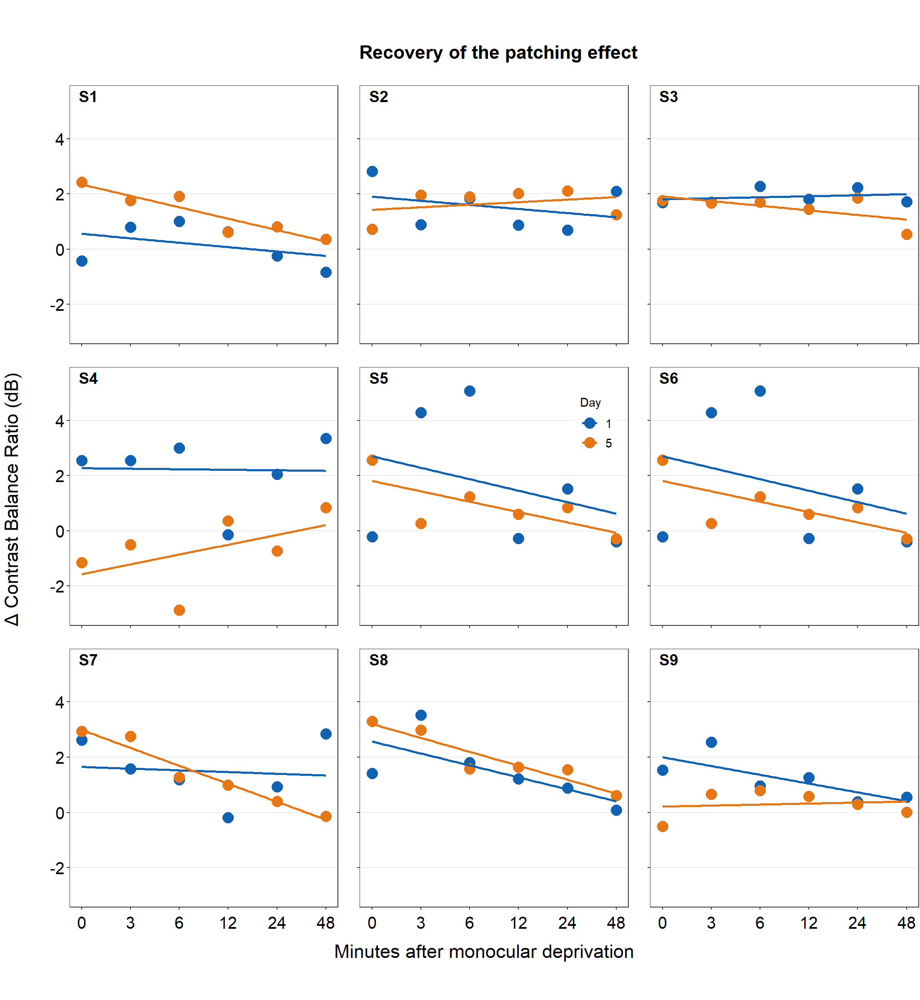
save_plot('together2.png',together2,nrow=3,ncol=3,base_asp=0.95)
# save as an image. ncol and nrow in save_plot()
# nrow and ncol in save_plot() have to match the
# values in plot_grid() as shown above. Open together2.png in your directory folder. I think it looks a lot cleaner!
The figure shows how to make a 1x3 figure (1 row, 3 columns).

(#fig:unnamed-chunk-279)Arguments for location in sm_common_axis for 1x3 figure.
If you are planning to make a 2x2 figure (2 rows, 2 columns), please understand the diagram below.

(#fig:unnamed-chunk-280)Arguments for location in sm_common_axis for 2x2 figure.
We are almost done now. Now, you will need to add the y-axis label ('Contrast balance ratio\n '), x-axis label ('Minutes after monocular deprivation\n ') and the title ('Recovery of the patching effect') as shown in the original paper (Vision Research 2019).
\n is added to have more space in the x and y axes title.
You can do this in Adobe Illustrator or directly in R. Here, I present a solution with R.
You don’t have to understand the codes below to use the codes.
title <- ggdraw() +
draw_label('Recovery of the patching effect',
size = 17, hjust = 0.45, vjust = 1.2,
fontface = 'bold') # title of the 3x3 figure.
# vjust controls the vertical position of the title.
# hjust controls the horizontal position of the title.
plot_with_title <- plot_grid(title, together2, ncol = 1,
rel_heights = c(0.1 ,1))
# add the title and the 3x3 figure together
combined_plot <- add_sub(plot_with_title,
" \nMinutes after monocular deprivation\n ",
y = 0, vjust = -.4, size = 17)
# add x-axis title to the 3x3 figure
# add y-axis title to the 3x3 figure
combined_plot <- grid.arrange(combined_plot,
left = textGrob("\u0394 Contrast Balance Ratio (dB)\n ",
gp = gpar(fontsize = 17),
rot = 90))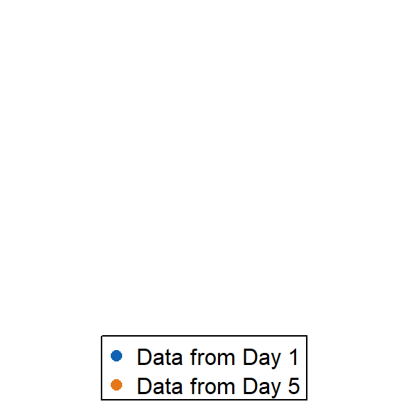
save_plot("combined_plot.png", combined_plot, ncol = 3, nrow = 3,
base_aspect_ratio = .9, limitsize = F)To be honest, for adding the titles of the axes and the graph, using Adobe Illustrator might be much easier. I have just included the codes here to demonstrate that everything, however, could be done in R.
If you do not understand some of these functions, you can type in your console ?add_sub, ?grid.arrange to learn about these functions.
An astute reader will realize that the codes are quite repetitive. Could the codes be shortened? The answer is yes! However, this method is quite complex and beyond the scope of this book.
8 Calculating Area under a Curve
In this chapter, we will continue to use data from this paper (PDF):
Seung Hyun Min, Alex S. Baldwin and Robert F. Hess. Ocular dominance plasticity: A binocular combination task finds no cumulative effect with repeated patching (2019). Vision Research, 161, 36-42.
In Chapter 5, we only dealt with data from Days 1 and 5. In this chapter, we will use data from Days 1, 2, 3, 4 and 5.
Let’s begin by loading the tidyverse and other libraries, and uploading the csv file min2019b.csv using read_csv() from the tidyverse package.
head() returns the first 6 rows of the data frame. tail() returns the last 6 rows of the data frame.
library(tidyverse)
library(smplot2)
library(cowplot)
df <- read_csv('https://www.smin95.com/min2019b.csv')
head(df)## # A tibble: 6 x 4
## Subject Day Time Cbratio
## <chr> <dbl> <dbl> <dbl>
## 1 a 1 0 -0.421
## 2 b 1 0 2.82
## 3 c 1 0 1.69
## 4 d 1 0 2.55
## 5 e 1 0 -0.217
## 6 f 1 0 0.626unique() returns unique values in the data set. Let’s see how many unique values there are in the Day column of the data set. A column can be extracted by using $.
df$Day <- factor(df$Day)
unique(df$Day)## [1] 1 2 3 4 5
## Levels: 1 2 3 4 5Notice that there are now five different days in the data set.
As previously mentioned, there are four columns in this data frame:
First,
Subjectrefers to each participant. There are 10 participants total.Next,
Dayrefers to the day of testing. The participants were tested on Days 1, 2, 3, 4 and 5, ad we will using all data.Timerefers to the number of minutes after an experimental manipulation (ex. monocular deprivation). These are 0, 3, 6, 12, 24 and 48 minutes, but in the data frame, it says 0, 1, 2, 3, 4 and 5; we will change the labels manually.The
Cbratiocolumn refers to the actual data that will be used for data analysis.
8.1 Pipe %>%
Let’s plot data from Day 1 only.
To do so, we will need to first filter for data from Day 1 using filter(), compute the average and standard error across subjects using summarise() and sm_stdErr(), and save the changed
format of the dataframe into a new variable using <- or ->.
df_day1 <- filter(df, Day == 1)
by_time_day1 <- group_by(df_day1, Time)
avg_day1 <- summarise(by_time_day1, Average = mean(Cbratio),
StdError = sm_stdErr(Cbratio))The steps above (filter(), group_by() and summarise()) are coded separately. Each line has one of these steps. However, these can be combined in one line by using pipe %>% as shown below.
avg_day1 <- df %>% filter(Day == 1) %>% group_by(Time) %>%
summarise(Average = mean(Cbratio),
StdError = sm_stdErr(Cbratio))Now the steps (filter(), group_by() and summarise()) are written from left-to-right in a continuous fashion, rather than a separate step.
Pipe %>% is part of the tidyverse package, and it is deemed a necessary tool for data analysis using R. It is extremely useful because it allows you to write codes that are easier to understand. Notice that if you use %>%, the input does not have to written because the input is actually the code that is written just before. For example:
df %>% filter(Day == 1)## # A tibble: 60 x 4
## Subject Day Time Cbratio
## <chr> <fct> <dbl> <dbl>
## 1 a 1 0 -0.421
## 2 b 1 0 2.82
## 3 c 1 0 1.69
## 4 d 1 0 2.55
## 5 e 1 0 -0.217
## 6 f 1 0 0.626
## 7 g 1 0 2.62
## 8 h 1 0 1.42
## 9 u 1 0 1.54
## 10 j 1 0 3.05
## # ... with 50 more rowsfilter(df, Day == 1)## # A tibble: 60 x 4
## Subject Day Time Cbratio
## <chr> <fct> <dbl> <dbl>
## 1 a 1 0 -0.421
## 2 b 1 0 2.82
## 3 c 1 0 1.69
## 4 d 1 0 2.55
## 5 e 1 0 -0.217
## 6 f 1 0 0.626
## 7 g 1 0 2.62
## 8 h 1 0 1.42
## 9 u 1 0 1.54
## 10 j 1 0 3.05
## # ... with 50 more rowsThese two are identical. But notice that if you do not use pipe,
you might have to save the intermediate variables (such as df_day1 and by_time_day1) multiple times, which can be tedious. Notice that when pipe %>% is used, the need to save these variables disappears.
I will use %>% from now on due to my personal preference.
8.2 Area under a curve
Let’s use the data set avg_day1 to plot data only from Day 1.
avg_day1 %>% ggplot(aes(x = Time, y = Average)) +
geom_area(fill = sm_color('skyblue'), alpha = 0.4) +
geom_point(size = 4.5, color = sm_color('skyblue')) +
geom_line(size = 1, color = sm_color('skyblue')) +
geom_errorbar(aes(ymin = Average - StdError, ymax = Average + StdError), size = .75, width = .05, color = sm_color('skyblue')) +
scale_x_continuous(breaks = unique(df$Time),
labels = c("0", "3", "6", "12", "24", "48")) +
sm_hgrid(legends = FALSE) +
ggtitle("Day 1") +
xlab("Minutes after monocular deprivation") +
ylab("\u0394 Contrast balance ratio (dB)") +
annotate('text', x = 13, y = 0.3, label = 'Area under curve')
One way to show data is to calculate the area under a curve (as shown by the colored area) in the figure above. Area under a curve is useful because it reduces a number of data points (6 in this case due to 6 time points) into one. In our context, a large area under a curve represents a large change in contrast balance ratio over time. In short, it captures both the magnitude and longevity of the effect.
Let’s calculate area under a curve for each subject and day across 0 to 48 minutes in the x-axis (minutes after monocular deprivation) using sm_auc().
x <- c(0,3,6,12,24,48)On the x-axis of the graph, there are six time points. You will need to store these values in a new variable, which I will call x here because it represents the x-axis. Instead of manually writing them down, you could extract the unique number of Time from the data frame.
x <- unique(df$Time) # this is my preferred wayNow let’s filter for one subject’s data (subject b) on Day 1 using filter() and pipe %>%.
subj_b_day1 <- df %>% filter(Day == 1 & Subject == 'b')
subj_b_day1## # A tibble: 6 x 4
## Subject Day Time Cbratio
## <chr> <fct> <dbl> <dbl>
## 1 b 1 0 2.82
## 2 b 1 3 0.881
## 3 b 1 6 1.83
## 4 b 1 12 0.877
## 5 b 1 24 0.693
## 6 b 1 48 2.09subj_b_day1 %>% ggplot(aes(x = Time, y = Cbratio)) +
geom_area(fill = sm_color('skyblue'), alpha = 0.4) +
geom_point(size = 4.5, color = sm_color('skyblue')) +
geom_line(size = 1, color = sm_color('skyblue')) +
scale_x_continuous(breaks = unique(df$Time),
labels = c("0", "3", "6", "12", "24", "48")) +
sm_hgrid(legends = FALSE) +
ggtitle("Day 1, Subject b") +
xlab("Minutes after monocular deprivation") +
ylab("\u0394 Contrast balance ratio (dB)") +
annotate('text', x = 13, y = 0.2, label = 'Area under curve = ?')
The variable subj_b_day1 now stores the data of subject b on Day 1. Now let’s calculate the area under a curve (AUC) from subj_b_day1 using sm_auc().
sm_auc() calculates the AUC using the method of trapezoid integration; this is equivalent to trapz function in Matlab and numpy.trapz in Python. It has two arguments:
- The first argument is the x point. In this case, it is the minutes after monocular deprivation (0, 3, 6, 12, 24 and 48). If this argument is left empty, it will use 0, 1, 2, 3 etc as default. For more information, please type ?sm_auc in the command console.
- The second argument is the data, which is shown by the y-axis in the blue graph. In this case, it is the change of contrast balance ratio (dB). These values can be extracted from subj_b_day1 using $.
sm_auc(x, subj_b_day1$Cbratio)## [1] 60.5286The AUC equals 60.53. This shows that for subject b, the effect is large and long-lasting.
subj_b_day1 %>% ggplot(aes(x = Time, y = Cbratio)) +
geom_area(fill = sm_color('skyblue'), alpha = 0.4) +
geom_point(size = 4.5, color = sm_color('skyblue')) +
geom_line(size = 1, color = sm_color('skyblue')) +
scale_x_continuous(breaks = unique(df$Time),
labels = c("0", "3", "6", "12", "24", "48")) +
sm_hgrid(legends = FALSE) +
ggtitle("Day 1, Subject b") +
xlab("Minutes after monocular deprivation") +
ylab("\u0394 Contrast balance ratio (dB)") +
annotate('text', x = 14.5, y = 0.2, label = 'Area under curve = 60.5')
Now let’s visualize the data of subject b from Day 2.
subj_b_day2 <- df %>% filter(Day == 2 & Subject == 'b')
subj_b_day2 %>% ggplot(aes(x = Time, y = Cbratio)) +
geom_area(fill = sm_color('yelloworange'), alpha = 0.4) +
geom_point(size = 4.5, color = sm_color('yelloworange')) +
geom_line(size = 1, color = sm_color('yelloworange')) +
scale_x_continuous(breaks = unique(df$Time),
labels = c("0", "3", "6", "12", "24", "48")) +
sm_hgrid(legends = FALSE) +
ggtitle("Day 2, Subject b") +
xlab("Minutes after monocular deprivation") +
ylab("\u0394 Contrast balance ratio (dB)") +
annotate('text', x = 13, y = 0.2, label = 'Area under curve = ?')
Now, let’s calculate the AUC for subject b from Day 2.
sm_auc(x, subj_b_day2$Cbratio)## [1] 80.38215The AUC equals 80.38. In the case of subject b, the effect seems to have increased on Day 2 relative to Day 1.
subj_b_day2 <- df %>% filter(Day == 2 & Subject == 'b')
subj_b_day2 %>% ggplot(aes(x = Time, y = Cbratio)) +
geom_area(fill = sm_color('yelloworange'), alpha = 0.4) +
geom_point(size = 4.5, color = sm_color('yelloworange')) +
geom_line(size = 1, color = sm_color('yelloworange')) +
scale_x_continuous(breaks = unique(df$Time),
labels = c("0", "3", "6", "12", "24", "48")) +
sm_hgrid(legends = FALSE) +
ggtitle("Day 2, Subject b") +
xlab("Minutes after monocular deprivation") +
ylab("\u0394 Contrast balance ratio (dB)") +
annotate('text', x = 14.5, y = 0.2, label = 'Area under curve = 80.4')
So far,we have 9 more subjects across five days and subject b from three other days. This will require us to compute 48 more AUCs total. This process is rater repetitive. Should we manually compute AUC for each one? Luckily, the answer is no. Let’s use sm_auc_all().
sm_auc_all(subjects = 'Subject', conditions = 'Day',
x = 'Time', values = 'Cbratio',
data = df)## [1] "AUC = Cbratio * Time"## Subject Day AUC_Cbratio
## 1 a 1 -2.36910
## 2 a 2 0.68265
## 3 a 3 -9.54795
## 4 a 4 27.12165
## 5 a 5 41.95680
## 6 b 1 60.52860
## 7 b 2 80.38215
## 8 b 3 94.68870
## 9 b 4 34.05225
## 10 b 5 86.51805
## 11 c 1 94.84035
## 12 c 2 1.78695
## 13 c 3 44.94750
## 14 c 4 24.83535
## 15 c 5 67.99770
## 16 d 1 100.62510
## 17 d 2 -19.60125
## 18 d 3 85.39140
## 19 d 4 9.37800
## 20 d 5 -16.12920
## 21 e 1 55.32240
## 22 e 2 132.99825
## 23 e 3 67.24410
## 24 e 4 -0.93135
## 25 e 5 27.36150
## 26 f 1 108.13770
## 27 f 2 31.14285
## 28 f 3 21.66375
## 29 f 4 116.81430
## 30 f 5 48.95040
## 31 g 1 63.27840
## 32 g 2 80.24685
## 33 g 3 33.71850
## 34 g 4 131.84340
## 35 g 5 32.61525
## 36 h 1 48.71625
## 37 h 2 75.98130
## 38 h 3 73.61250
## 39 h 4 21.84735
## 40 h 5 71.04780
## 41 u 1 39.11865
## 42 u 2 64.56690
## 43 u 3 15.80355
## 44 u 4 28.84035
## 45 u 5 15.56220
## 46 j 1 74.90610
## 47 j 2 101.06550
## 48 j 3 52.90590
## 49 j 4 40.73910
## 50 j 5 36.71595sm_auc_all() creates a new data frame with AUC for each subject and condition (in this case, Day). It has six arguments:
data= this argument requires the variable that stores the data frame. In our case, it isdf.subjects= this argument requires the name of the column of the data frame that contains subjects. It must strings, ex.'Subject', notSubject.groups= this argument requires the name of the column of the data frame that contains each group. In this example, there is no group. An example would beGroupcolumn that contains two groups:NormalandAmblyopia(see next chapter on Slope Analysis).conditions= this argument requires name of the column of the data frame that contains each condition. In our example, the condition is the day. It must strings, ex.'Day', notDay.x= this argument requires the name of the column of the data frame that contains the x-axis points from which the AUC can be calculated. In our case, these are 0, 3, 6, 12, 24 minutes. It must be strings, ex.'Time', notTime. Also, it must be numeric/double, NOT factor. Make sure you check that the column is numeric. If its not, convert the column of the dataframe into double beforehand. ex.df$Time <- as.numeric(df$Time)ordf$SpatialFreq <- as.numeric(df$Time).values= this argument requires the name of the column of the data frame that contains the actual data, which are the y-axis points from which the AUC can be calculated. In our case, it is the change in contrast balance ratio. It must strings, ex.'Cbratio', notCbratio.
Before using sm_auc_all(), you will need to check for a few things. First, check if the x column is numeric, not factor, by using is.numeric() function. If it is numeric, proceed with using sm_auc_all(). Second, see if the x levels (ex. 0, 3, 6, 12, 24 and 48 etc) are identical for each subject and condition (ex. no 7, 16, 29 minutes for subject 10).
Note: If you have a column for condition (as an example) but you only have one identifier for condition (and hence one condition total), you will still need to include it as sm_auc_all(..., conditions='condition'). If you do not want to include the condition column in sm_auc_all(), then you should remove the column from the data frame altogether. This also applies to sm_slope_all().
# check if the x column is numeric
is.numeric(df$Time) ## [1] TRUE# check if the x column is factor
is.factor(df$Time)## [1] FALSE# if it is factor and not numeric:
df$Time <- as.numeric(df$Time)After checking, we can store the results from sm_auc_all() into a new variable. I will call the new variable auc_df.
auc_df <- sm_auc_all(subjects = 'Subject', conditions = 'Day',
x = 'Time', values = 'Cbratio',
data = df)## [1] "AUC = Cbratio * Time"Now we can plot the AUCs using sm_bar(), sm_boxplot etc. Let’s have a try.
Here is a bar graph showing auc_df’s data. This figure is similar to Figure 3E in the original paper (Min, Baldwin and Hess, 2019).
- re: means relative to X. The data are the differences compared to the baseline (re: Baseline).
auc_df %>% ggplot(aes(x = Day, y = AUC_Cbratio, color = Day)) +
sm_bar() +
scale_color_manual(values = sm_palette(5)) +
ggtitle('\u0394 AUC re: Each day\'s baseline')
Here is a box plot showing auc_df’s data.
auc_df %>% ggplot(mapping = aes(x = Day, y = AUC_Cbratio, color = Day)) +
sm_boxplot(alpha = 0.6,
point.params = list(size = 2.2)) +
scale_color_manual(values = sm_palette(5)) +
ggtitle('\u0394 AUC re: Each day\'s baseline')
8.3 Reproducing figures in the paper (Min et al., 2019)
Let’s redraw some of the figures in the paper. In 2019, when the paper was published, there was no smplot. However, the themes I developed during then have become part of smplot. So, I have incorporated functions from smplot to reproduce the figures here.
8.3.1 Figure 3B (a best-fit line with points and error bars)
df <- read_csv('https://www.smin95.com/min2019b.csv')
# filter data from Days 2-4. | means OR.
df1 <- df %>% filter(Day == 2 | Day == 3 | Day == 4) %>% group_by(Day, Time) %>%
summarise(avg = mean(Cbratio), se = sm_stdErr(Cbratio))
# mean and standard error computed for each day and time, both of which have been grouped.
df1$Time <- as.numeric(df1$Time)
df1$Day <- as.factor(df1$Day) # Day has to be factored here because they will be labelled as different colors. Factor means categorical variables.
colors <- c("#55A868", "#C44E52", "#8172B2")
df1 %>% ggplot(aes(x = Time, y = avg, color = Day)) +
geom_point(size = 4.5) +
geom_errorbar(aes(ymin = avg - se, ymax = avg + se), size = .5, width = 1) +
geom_smooth(method = 'lm', se = F, size = 0.9) +
# lm = linear regression method
scale_x_continuous(breaks = unique(df$Time),
labels = c("0", "3", "6", "12", "24", "48")) +
sm_hgrid(legends = TRUE) +
scale_color_manual(values = colors,
labels = c("Day 2", "Day 3", "Day 4")) +
ggtitle("Recovery of the patching effect") +
xlab("Time after monocular deprivation (min)") +
ylab("\u0394 Contrast balance ratio (dB)") +
theme(legend.justification = c(1,0),
legend.position = c(0.96, 0.67),
legend.title = element_blank()) 
8.3.2 Figure 3D (a bar graph)
This a bar graph that has been plotted with sm_bar(). The y-axis has been set with the function coord_cartesian().
baseline <- read_csv('https://www.smin95.com/baseline.csv')
colors <- c("#4C72B0", "#55A868", "#C44E52",
"#8172B2", "#D55E00")
baseline$Day <- as.factor(baseline$Day)
baseline %>% ggplot(aes(x = Day, y= Baseline, fill = Day)) +
sm_bar(points = FALSE,
err.params = list(size = 0.4),
bar.params = list()) + # remove defaults of bar.params
scale_fill_manual(values = colors) +
ggtitle("Baseline across days") +
coord_cartesian(ylim = c(-2, 2)) +
ylab("Contrast balance ratio (dB)") +
xlab('Patching day')
8.3.3 Figure 3E (modeling in Matlab and plotting in R)
The grey shades have actually been approximated using Matlab. The results have been saved in the .csv file fit_error_shade.csv. They are then imported into R, where the final figure is plotted.
Notice that two data frames are used to create this plot, df_shade1 and auc_df1. The former contains the values from the modeling in Matlab, the latter contains AUC values.
So do not worry if your field does not use R for data analysis. One can still perform data visualization using R.
df_shade <- read_csv('https://www.smin95.com/fit_error_shade.csv')
df_shade1 <- df_shade %>% mutate(yUpp = y_mean + y_se, yLow = y_mean - y_se)
df <- read_csv('https://www.smin95.com/min2019b.csv')
auc_df <- sm_auc_all(subjects = 'Subject', conditions = 'Day',
x = 'Time', values = 'Cbratio',
data = df)## [1] "AUC = Cbratio * Time"auc_df1 <- auc_df %>% group_by(Day) %>%
summarise(y_mean = mean(AUC_Cbratio), std_err = sm_stdErr(AUC_Cbratio))
auc_df1$Day <- as.numeric(auc_df1$Day)
colors <- c("#4C72B0", "#55A868", "#C44E52",
"#8172B2", "#D55E00")
df_shade1 %>% ggplot(aes(x=x, y=y_mean)) +
geom_ribbon(aes(ymin = yLow, ymax = yUpp), alpha = .08) +
geom_linerange(data = auc_df1, aes(Day, ymin = y_mean - std_err, ymax = y_mean + std_err), size = .5) +
geom_point(data = auc_df1, aes(Day, y_mean, color = as.factor(Day), size = 5)) +
sm_hgrid(legends = FALSE) +
scale_x_continuous(limits = c(1, 5)) +
scale_y_continuous(limits = c(0, 90)) +
scale_color_manual(values = colors) +
ylab("Area Under Curve (dB min)") +
xlab("Patching Day") +
ggtitle("\u0394 AUC re: Each Day's Baseline") +
annotate("text", label = "y = -5.8(Day) + 67.8", x = 2.0, y= 5) +
annotate("text", label = "***", x = 1, y = 82, size = 3.5, fontface="bold") +
annotate("text", label = "**", x = 2, y = 75, size = 3.5, fontface="bold") +
annotate("text", label = "**", x = 3, y = 68, size = 3.5, fontface="bold") +
annotate("text", label = "*", x = 4, y = 65, size = 3.5, fontface="bold") +
annotate("text", label = "**", x = 5, y = 60, size = 3.5, fontface="bold")
9 Calculating Linear Slopes
In this chapter, we will use a fake data set that I have generated by eyeballing Figure 3 from this paper (PDF):
Yu Mao, Seung Hyun Min, Shijia Chen, Ling Gong, Hao Chen, Robert F. Hess, Jiawei Zhou. Binocular imbalance in amblyopia depends on spatial frequency in binocular combination. IOVS. 2020;61(8):7.
This data set contains both subject groups (Normal and Amblyopia) and conditions (Condition).
Let’s begin by loading the tidyverse and other libraries, and uploading the csv file amblyopia_random.csv using read_csv() from the tidyverse package.
It is always a good habit to make sure that the data set you intended to load uploads properly by using head(), which returns the first 6 rows of the data frame.
library(tidyverse)
library(smplot2)
library(cowplot)
df <- read_csv('https://www.smin95.com/amblyopia_random.csv')
head(df)## # A tibble: 6 x 5
## Subject absBP SF Group Condition
## <chr> <dbl> <dbl> <chr> <chr>
## 1 A1 0.0747 0.5 Amblyopia One
## 2 A1 0.678 1 Amblyopia One
## 3 A1 0.868 2 Amblyopia One
## 4 A1 1.45 4 Amblyopia One
## 5 A1 0.868 8 Amblyopia One
## 6 A10 0.139 0.5 Amblyopia OneIn this dataset, there are five columns.
- First,
Subjectcolumn has all the subjects. People with amblyopia (a visual disorder) are labelled withA. First subject with amblyopia is written asA1. Normal subject is written withN; first normal subject isN1. We see that there are 10 subjects per group, so there are 20 subjects total.
unique(df$Subject)## [1] "A1" "A10" "A2" "A3" "A4" "A5" "A6" "A7" "A8" "A9" "N1" "N10" "N2" "N3"
## [15] "N4" "N5" "N6" "N7" "N8" "N9"Second,
absBPis the data of our interest.Third,
SFrefers to spatial frequency. We will be calculating slopes ofabsBPas a function ofSF. So these are our x-coordinates for slope calculations (see sections below). Each unit increases by a factor of 2, so it is also helpful to convert the values into log2 units.
length(unique(df$SF))## [1] 5df <- df %>% mutate(logSF = log2(SF))
head(df)## # A tibble: 6 x 6
## Subject absBP SF Group Condition logSF
## <chr> <dbl> <dbl> <chr> <chr> <dbl>
## 1 A1 0.0747 0.5 Amblyopia One -1
## 2 A1 0.678 1 Amblyopia One 0
## 3 A1 0.868 2 Amblyopia One 1
## 4 A1 1.45 4 Amblyopia One 2
## 5 A1 0.868 8 Amblyopia One 3
## 6 A10 0.139 0.5 Amblyopia One -1- Fourth,
Grouprefers to as the subject gruop. There are two groups:AmblyopiaandNormal.
unique(df$Group)## [1] "Amblyopia" "Normal"- Lastly,
Conditionrefers to the testing condition. In this dataset, there are two conditions.
unique(df$Condition)## [1] "One" "Two"The columns Group and Condition are categorical variable and must therefore be factors. head(df) shows that Group and Condition are <chr>, which mean characters. Lets change them to factors <fct>.
df$Group <- factor(df$Group)
df$Condition <- factor(df$Condition)
head(df)## # A tibble: 6 x 6
## Subject absBP SF Group Condition logSF
## <chr> <dbl> <dbl> <fct> <fct> <dbl>
## 1 A1 0.0747 0.5 Amblyopia One -1
## 2 A1 0.678 1 Amblyopia One 0
## 3 A1 0.868 2 Amblyopia One 1
## 4 A1 1.45 4 Amblyopia One 2
## 5 A1 0.868 8 Amblyopia One 3
## 6 A10 0.139 0.5 Amblyopia One -1We see that Group and Condition columns are now factor <fct>.
9.1 Linear relationship using lm()
Linear relationship between \(x\) and \(y\) can be described as \(y = mx + b\), where y is the dependent variable, x is the independent variable, m is the slope, and b is the y-intercept.
Let’s try calculate \(m\) and \(b\) using the data of A3, which is the 3rd amblyopic observer.
A3 <- df %>% filter(Subject == 'A3')There are two conditions here. Let’s filter for data from the second condition only (Condition == Two).
A3_second <- A3 %>% filter(Condition == 'Two')Now, we will use the function lm() to compute \(m\) (slope) and \(b\) (y-intercept).
In R, the relationship between \(y\) (dependent variable) and \(x\) (independent variable) is written as y~x using tilde (~). In other words, instead of directly writing \(y = mx + b\) in R, we use ~ to describe the relationship between \(y\) and \(x\). Let’s write the relationship between absBP (dependent variable) and logSF (independent variable) within the function lm().
lm(df$absBP ~ df$logSF)##
## Call:
## lm(formula = df$absBP ~ df$logSF)
##
## Coefficients:
## (Intercept) df$logSF
## 0.3205 0.1249This yields two main outputs. Let’s store this result using a new variable res, which is short for results.
res <- lm(A3_second$absBP ~ A3_second$logSF)
summary(res)##
## Call:
## lm(formula = A3_second$absBP ~ A3_second$logSF)
##
## Residuals:
## 1 2 3 4 5
## 0.1930 -0.1310 -0.1270 -0.1251 0.1900
##
## Coefficients:
## Estimate Std. Error t value Pr(>|t|)
## (Intercept) 0.30461 0.11058 2.755 0.07046 .
## A3_second$logSF 0.45815 0.06384 7.176 0.00557 **
## ---
## Signif. codes: 0 '***' 0.001 '**' 0.01 '*' 0.05 '.' 0.1 ' ' 1
##
## Residual standard error: 0.2019 on 3 degrees of freedom
## Multiple R-squared: 0.945, Adjusted R-squared: 0.9266
## F-statistic: 51.5 on 1 and 3 DF, p-value: 0.005574summary() is a function that prints all the outputs from a given model object. Here, the model object is res, which has been created using the lm() function. When using lm(), it is advisable to always store the results and print the results using summary(). For more information about summary(), please check out ?summary.
We see that the y-intercept \(b\) is 0.3046 under the column Estimate. We also see that the slope \(m\) is 0.4582 under the column Estimate. You can ignore all the other values for now.
Let’s visualize the data of A3 and fit a linear slope.
A3_second %>% ggplot(aes(x = logSF, y = absBP)) +
geom_point() +
geom_abline(slope = 0.4582, intercept = 0.3046)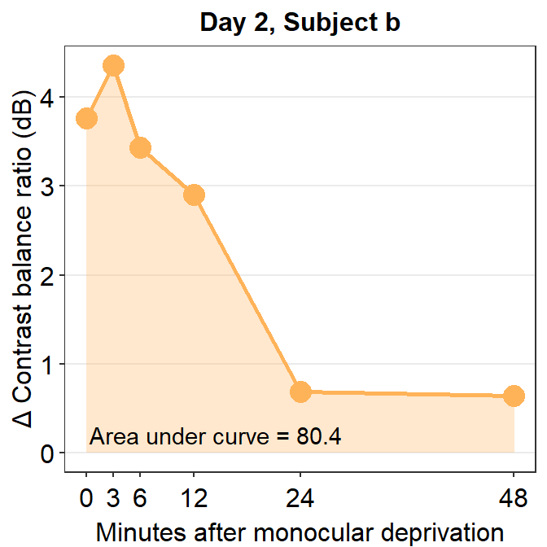
Instead of writing the slope and intercept manually, we can subset these values using $.
res$coefficients## (Intercept) A3_second$logSF
## 0.3046126 0.4581507The first value is the intercept. Therefore use [[1]] to subset the intercept.
res$coefficients[[1]]## [1] 0.3046126You can also subset the slope using [[2]].
res$coefficients[[2]]## [1] 0.4581507Now let’s plot the graph again and label the y-intercept as well.
A separate data frame y_int containing the y-intercept is created below. The code below is a bit challenging, so please use ? to figure out each function if you are not sure.
y_int <- data.frame(logSF = 0, absBP = res$coefficients[[1]])
A3_second %>% ggplot(aes(x = logSF, y = absBP)) +
geom_point(size = 3) +
geom_abline(slope = res$coefficients[[2]],
intercept = res$coefficients[[1]]) +
geom_point(data = y_int, color = sm_color('red'), size = 3) +
sm_corr_theme() +
annotate('text', x = 0, y = 1.2, size = 3.5,
label = paste('Slope =',round(res$coefficients[[2]],2))) +
annotate('text', x = 0, y = 0.9, size = 3.5,
label = paste('Intercept =', round(res$coefficients[[1]],2)))In summary, you can compute the slope of a linear function between \(y\) and \(x\) and using lm(), where you use ~ to describe the relationship. You also need to use $ to subset the slopes directly.
9.2 Calculating slopes of all subjects, groups and conditions
Now that we know how to compute slope for each subject, let’s calculate slopes of our entire dataset.
df## # A tibble: 200 x 6
## Subject absBP SF Group Condition logSF
## <chr> <dbl> <dbl> <fct> <fct> <dbl>
## 1 A1 0.0747 0.5 Amblyopia One -1
## 2 A1 0.678 1 Amblyopia One 0
## 3 A1 0.868 2 Amblyopia One 1
## 4 A1 1.45 4 Amblyopia One 2
## 5 A1 0.868 8 Amblyopia One 3
## 6 A10 0.139 0.5 Amblyopia One -1
## 7 A10 0.448 1 Amblyopia One 0
## 8 A10 0.667 2 Amblyopia One 1
## 9 A10 1.12 4 Amblyopia One 2
## 10 A10 1.70 8 Amblyopia One 3
## # ... with 190 more rowsWe see that there are 20 subjects total, each of which has completed two conditions. So there are 40 slopes to calculate! Does that mean we need to use lm() 40 times?
The answer is no. smplot has a function sm_slope_all() that returns a dataframe of slopes from linear regression. It works similarly to sm_auc_all().
data= this argument requires the variable that stores the data frame. In our case, it isdf.subjects= this argument requires the name of the column of the data frame that contains subjects. It must strings, ex.'Subject', notSubject.groups= this argument requires the name of the column of the data frame that contains each group. In this example, there is no group. An example would beGroupcolumn that contains two groups:NormalandAmblyopia.conditions= this argument requires name of the column of the data frame that contains each condition. In our example, the two conditions areOneandTwo.x= this argument requires the name of the column of the data frame that contains the x-axis points from which the AUC can be calculated. In our case, these are values from thelogSFcolumn ofdf. It must be strings, ex.'logSF', notlogSF. Also, it must be numeric/double, NOT factor. Make sure you check that the column is numeric. If its not, convert the column of the dataframe into double beforehand. ex.df$logSF <- as.numeric(df$logSF)ordf$SpatialFreq <- as.numeric(df$SpatialFreq).values= this argument requires the name of the column of the data frame that contains the actual data, which are the y-axis points from which the AUC can be calculated. In our case, it is the change in contrast balance ratio. It must strings, ex.'absBP', notabsBP.
Before using sm_slope_all(), you will need to check for a few things. First, check if the x column is numeric, not factor, by using is.numeric() function. If it is numeric, proceed with using sm_slope_all(). Second, see if the x levels (ex. 0, 3, 6, 12, 24 and 48 etc) are identical for each subject and condition (ex. no 7, 16, 29 minutes for subject 10).
# check if the x column is numeric
is.numeric(df$logSF) ## [1] TRUE# check if the x column is factor
is.factor(df$logSF)## [1] FALSE# if it is factor and not numeric:
df$logSF <- as.numeric(df$logSF)After checking, we can store the results from sm_slope_all() into a new variable. I will call the new variable slope_df.
slope_df <- sm_slope_all(subjects = 'Subject',
conditions = 'Condition',
groups = 'Group',
x = 'logSF', values = 'absBP',
data = df)## [1] "Slope = absBP ~ logSF"slope_df## Subject Condition Group Slope
## 2 A1 One Amblyopia 0.235667223
## 3 A1 Two Amblyopia 0.282800668
## 6 A10 One Amblyopia 0.380319905
## 7 A10 Two Amblyopia 0.456383886
## 10 A2 One Amblyopia 0.136716992
## 11 A2 Two Amblyopia 0.164060391
## 14 A3 One Amblyopia 0.381792237
## 15 A3 Two Amblyopia 0.458150685
## 18 A4 One Amblyopia 0.226928105
## 19 A4 Two Amblyopia 0.272313727
## 22 A5 One Amblyopia -0.015766219
## 23 A5 Two Amblyopia -0.018919463
## 26 A6 One Amblyopia 0.097918149
## 27 A6 Two Amblyopia 0.117501779
## 30 A7 One Amblyopia 0.217554761
## 31 A7 Two Amblyopia 0.261065713
## 34 A8 One Amblyopia 0.266574138
## 35 A8 Two Amblyopia 0.319888965
## 38 A9 One Amblyopia 0.198964218
## 39 A9 Two Amblyopia 0.238757061
## 43 N1 One Normal 0.080372285
## 44 N1 Two Normal 0.096446741
## 47 N10 One Normal -0.038881222
## 48 N10 Two Normal -0.046657466
## 51 N2 One Normal 0.071885539
## 52 N2 Two Normal 0.086262647
## 55 N3 One Normal 0.018219466
## 56 N3 Two Normal 0.021863359
## 59 N4 One Normal 0.004361030
## 60 N4 Two Normal 0.005233235
## 63 N5 One Normal 0.043098286
## 64 N5 Two Normal 0.051717943
## 67 N6 One Normal -0.066678839
## 68 N6 Two Normal -0.080014607
## 71 N7 One Normal 0.082798046
## 72 N7 Two Normal 0.099357656
## 75 N8 One Normal -0.049344920
## 76 N8 Two Normal -0.059213905
## 79 N9 One Normal -0.001135896
## 80 N9 Two Normal -0.001363075We see that the slope of A3 in Two condition is identical to the one we have obtained from the lm() function.
res$coefficients[[2]] ## [1] 0.4581507slope_df %>% filter(Subject == 'A3' & Condition == 'Two') %>%
select(Slope)## Slope
## 1 0.4581507Now we can plot all the slopes from One condition using sm_bar(), sm_boxplot etc. Let’s have a try.
The factor level of slope_df_one$Group is changed below so that bar plot of normal observer is plotted first, then amblyopia (rather than amblyopia -> normals as per alphabetical order).
slope_df_one <- slope_df %>% filter(Condition == 'One')
slope_df_one$Group <- factor(slope_df_one$Group,
levels = c('Normal','Amblyopia'))Here is a boxplot showing slope_df_one’s data.
slope_df_one %>% ggplot(mapping = aes(x = Group, y = Slope, color = Group)) +
sm_boxplot(alpha = 0.6,
point.params = list(size = 2.2,
alpha = 0.6)) +
scale_color_manual(values = sm_palette(2)) +
ggtitle('Binocular imbalance')
Here is a bar graph showing slope_df’s data for One condition only. This figure is similar to Figure 3B in the paper (Mao et al., 2020).
slope_df_one %>% ggplot(aes(x = Group, y = Slope, color = Group)) +
sm_bar(shape = 21) +
scale_color_manual(values = sm_palette(2)) +
ggtitle('Binocular imbalance')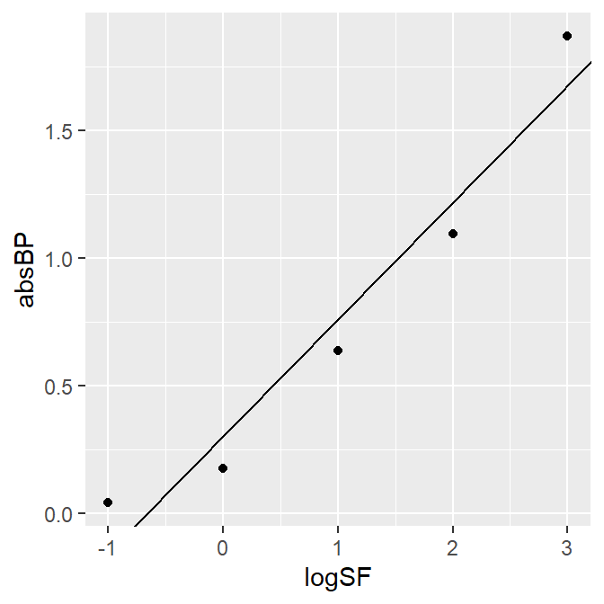
10 Basic Statistics
As in the previous two chapters, we will continue to use data from this paper (PDF):
Seung Hyun Min, Alex S. Baldwin and Robert F. Hess. Ocular dominance plasticity: A binocular combination task finds no cumulative effect with repeated patching (2019). Vision Research, 161, 36-42.
Load the tidyverse and other libraries, and the csv file min2019b.csv using read_csv() from the tidyverse package.
library(tidyverse)
library(smplot2)
library(cowplot)
df <- read_csv('https://www.smin95.com/min2019b.csv')
head(df)## # A tibble: 6 x 4
## Subject Day Time Cbratio
## <chr> <dbl> <dbl> <dbl>
## 1 a 1 0 -0.421
## 2 b 1 0 2.82
## 3 c 1 0 1.69
## 4 d 1 0 2.55
## 5 e 1 0 -0.217
## 6 f 1 0 0.62610.1 One-sample t-test
One sample t-test compares the mean of a sample to a hypothesized mean (often 0).
For example, here is Figure 3E from the paper. What do the *** mean? How about ** and *? Let’s take a look.
## [1] "AUC = Cbratio * Time"For instance, to determine if the area under curve (changes in contrast balance ratio over time) after patching is significant, so much so that one can confidently say that it is different from 0, we can perform a one-sample t-test using t.test().
Let’s use data from the same paper. We import the data from online using read_csv() and store them into a variable (in this case, df). Then, we compute the area under a curve using sm_auc_list() and store the values in the variable auc_df.
df <- read_csv('https://www.smin95.com/min2019b.csv')
df$Day <- as.factor(df$Day)
auc_df <- sm_auc_list(subjects = 'Subject', conditions = 'Day',
x = 'Time', values = 'Cbratio',
data = df)## [1] "AUC = Cbratio * Time"head(auc_df)## Subject Day AUC_Cbratio
## 1 a 1 -2.36910
## 2 a 2 0.68265
## 3 a 3 -9.54795
## 4 a 4 27.12165
## 5 a 5 41.95680
## 6 b 1 60.52860The Day column of df has to be factored using as.factor() because Day here is a categorical, rather than, continuous variable.
To determine if the area under curve data on Day 1 were significantly different from 0, we could use one-sample t-test. First, let’s filter for data from only Day 1.
auc_df_day1 <- auc_df %>% filter(Day == 1)
auc_df_day1## Subject Day AUC_Cbratio
## 1 a 1 -2.36910
## 2 b 1 60.52860
## 3 c 1 94.84035
## 4 d 1 100.62510
## 5 e 1 55.32240
## 6 f 1 108.13770
## 7 g 1 63.27840
## 8 h 1 48.71625
## 9 u 1 39.11865
## 10 j 1 74.90610Then, lets extract the values from the AUC_Cbratio column and perform one-sample t-test using t.test().
t.test(auc_df_day1$AUC_Cbratio, mu = 0)##
## One Sample t-test
##
## data: auc_df_day1$AUC_Cbratio
## t = 6.1934, df = 9, p-value = 0.0001601
## alternative hypothesis: true mean is not equal to 0
## 95 percent confidence interval:
## 40.82072 87.80017
## sample estimates:
## mean of x
## 64.31045mu = 0 is included as an argument when performing one-sample t.test; this means an average of 0. In this case, you are comparing the data from auc_df_day1$AUC_Cbratio to mu = 0.
The p-value must be less than 0.05 to be considered statistically significant. It is labelled with one asterisk *. 0.001 < p < 0.01 is denoted with two asterisks **, and p < 0.001 is denoted with three asterisks ***. Since the p-value reported here is less than 0.001, Figure 3E has *** for Day 1’s area under a curve.
We can repeat this for Days 2-5. For brevity, we repeat the example with Days 2 and 4 only.
auc_df_day2 <- auc_df %>% filter(Day == 2)
t.test(auc_df_day2$AUC_Cbratio, mu = 0)##
## One Sample t-test
##
## data: auc_df_day2$AUC_Cbratio
## t = 3.5182, df = 9, p-value = 0.006534
## alternative hypothesis: true mean is not equal to 0
## 95 percent confidence interval:
## 19.60882 90.24161
## sample estimates:
## mean of x
## 54.92521The p value is 0.0065, which is less than 0.01 but larger than 0.001. In this case, the statistical significance is denoted as **. Likewise, Figure 3E shows the AUC of Day 2 with **.
auc_df_day4 <- auc_df %>% filter(Day == 4)
t.test(auc_df_day4$AUC_Cbratio, mu = 0)##
## One Sample t-test
##
## data: auc_df_day4$AUC_Cbratio
## t = 3.0973, df = 9, p-value = 0.01278
## alternative hypothesis: true mean is not equal to 0
## 95 percent confidence interval:
## 11.71639 75.19169
## sample estimates:
## mean of x
## 43.45404The p-value is 0.013, which is less than 0.05 but larger than 0.01. Therefore one asterisk * is used to label the statistical significance.
10.2 Two-sample t-test
A two-sample t-test is used to compare the mean of one sample to that of another sample.
For example, let’s compare changes in sensory eye dominance after short-term monocular deprivation in Day 1 vs Day 5. These values are shown in the Cbratio column.
Let’s filter only for AUC data from Days 1 and 5.
auc_df_day1 <- auc_df %>% filter(Day == 1)
auc_df_day5 <- auc_df %>% filter(Day == 5)
auc_df_day15 <- auc_df %>% filter(Day == 1 | Day == 5)Now, let’s plot a bar graph to display the AUC from Days 1 and 5 using sm_bar().
ggplot(data = auc_df_day15, mapping = aes(x = Day, y = AUC_Cbratio, color = Day)) +
sm_bar() +
scale_color_manual(values = sm_color('blue','orange')) +
ggtitle('AUC in Days 1 and 5')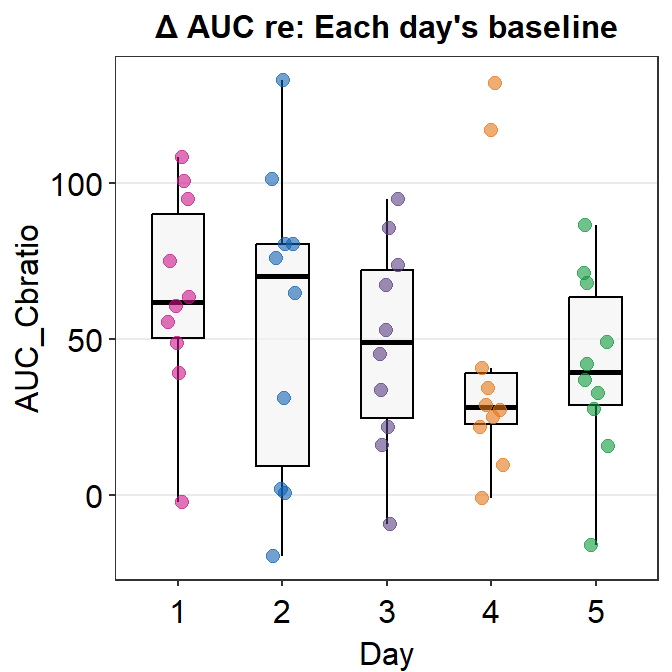
There seems to be a difference in the AUC AUC_Cbratio between Days 1 and 5. The error bars (in this case, standard error) are barely overlapping. If the error bars are clearly overlapping, there is often no significant difference (p < 0.05) between the two data sets. If there is no overlap, it is highly likely that a statistical test will show a significant difference (p < 0.05). Let’s take a look using t-test using the function t.test().
t.test() allows us to compare whether data between two different groups are significantly different. Here, $ is used to extract data from a specific column within a data frame. You could type df_0min$, press the Tab button from the keyboard, and see what happens. Since we will only compare values in the AUC_Cbratio column, let’s select for the AUC_Cbratio column and use these values in our t.test().
t.test(auc_df_day1$AUC_Cbratio, auc_df_day5$AUC_Cbratio, paired = TRUE)##
## Paired t-test
##
## data: auc_df_day1$AUC_Cbratio and auc_df_day5$AUC_Cbratio
## t = 1.5694, df = 9, p-value = 0.151
## alternative hypothesis: true difference in means is not equal to 0
## 95 percent confidence interval:
## -10.17563 56.27723
## sample estimates:
## mean of the differences
## 23.0508In this case, the subjects are paired because the 10 subjects performed on both Days 1 and 5. If your data are not paired (ex. patients vs controls) and you want to perform a t-test, you can set paired = FALSE.
If we are reporting the results, we should report it as such, t(9) = 1.57, p = 0.15. The difference between Days 1 and 5 is not statistically significant.
10.2.1 Shapiro-Wilk Test to test for Normality of Data
T-test can only be used when the data assume normality. In other word, the data that are to be analyzed using t.test() must have a normal distribution (shown below).
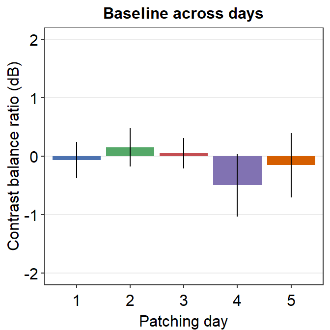
Whether the data have a normal distribution can be checked using a Shapiro-Wilk test (shapiro.test()). If p > 0.05, then the data have a normal distribution, and therefore, t-test can be used to analyze the data. If p < 0.05, the data are not normally distributed, and t-test cannot be used.
For example, let’s check whether the AUC data from Day 1 have a normal distribution.
shapiro.test(auc_df_day1$AUC_Cbratio)##
## Shapiro-Wilk normality test
##
## data: auc_df_day1$AUC_Cbratio
## W = 0.95039, p-value = 0.6732P value is 0.67, which is larger than 0.05. Therefore, the AUCs from Day 1 have a normal distribution.
shapiro.test(auc_df_day5$AUC_Cbratio)##
## Shapiro-Wilk normality test
##
## data: auc_df_day5$AUC_Cbratio
## W = 0.97531, p-value = 0.9353P value is 0.935, which is larger than 0.05. Therefore, the AUCs from Day 5 have a normal distribution. More information about shapiro.test() can be found in this link: http://www.sthda.com/english/wiki/normality-test-in-r.
T-test is a type of parametric statistical test, which is used to analyze data that are normally distributed. If the data are not normally distributed, non-parametric statistical test can be used.
10.3 Wilcoxon Signed-rank Test
Wilcoxon Signed-rank Test is a non-parametric statistical test that is used instead of a t-test when the data are not normally distributed.
If Shapiro-Wilk test yields p < 0.05 for the following datasets, a Wilcoxon Signed Rank Test must be used for both one-sample and two-sample tests.
# one-sample Wilcoxon Signed-rank Test
wilcox.test(auc_df_day1$AUC_Cbratio, mu = 0)##
## Wilcoxon signed rank exact test
##
## data: auc_df_day1$AUC_Cbratio
## V = 54, p-value = 0.003906
## alternative hypothesis: true location is not equal to 0The p-value is 0.0039, which is less than 0.05. Therefore, according to the Wilcoxon test, the AUCs from Day 1 are significantly different from 0.
# two-sample Wilcoxon test
wilcox.test(auc_df_day1$AUC_Cbratio, auc_df_day5$AUC_Cbratio, paired = TRUE)##
## Wilcoxon signed rank exact test
##
## data: auc_df_day1$AUC_Cbratio and auc_df_day5$AUC_Cbratio
## V = 43, p-value = 0.1309
## alternative hypothesis: true location shift is not equal to 0The p-value is 0.13, which is larger than 0.05. Therefore, according to the Wilcoxon test, the AUCs from Days 1 and 5 are not significantly different.
10.4 Effect Size
However, even if p-value is larger than 0.05, this does not mean that there is no significant difference between the two groups/conditions. In fact, even a strong drug effect in a study that compares placebo vs. drug can result in p > 0.05 if the sample size is too small.
On the other hand, if a study is conducted with a very large sample size (1000 patients per group) to examine the effect of a very weak drug, the data between weak drug and control can give us a p < 0.05, which indicates a statistically significant difference.
In short, p-value is not everything because it depends on the sample size.
If the sample size is small, p-value can be larger than 0.05. But as the sample gets larger, p-value will decrease even if the mean difference between the two groups remains the same.
In this example, the sample size is not large (n=10). Therefore, one might ask whether our conclusion that there is no significant difference between Days 1 and 5 is truly valid. One might also believe that if our sample size was larger (ex. n=50), we would have found a significant difference between Days 1 and 5.
To respond to this concern, we might need to calculate the effect size. If the effect size is large, there is a large difference between the sample groups. Unlike the p-value, the effect size does not depend on the sample size.
One measure to capture the effect size is Cohen’s d. We can use sm_effsize() to calculate Cohen’s d as a measure for the effect size.
- Small effect size: Cohen’s d around 0.2
- Medium effect size: Cohen’s d around 0.5
- Large effect size: Cohen’s d > 0.8.
The inputs for sm_effsize() are the data of two sample groups, just as they were in t.test().
Let’s compute the effect size (Cohen’s d) using AUC data from Days 1 and 2.
sm_effsize(auc_df_day1$AUC_Cbratio, auc_df_day2$AUC_Cbratio)## [1] 0.2238542Cohen’s d equals 0.224, which is a very small effect size. This indicates that there is a very small difference in AUC between Days 1 and 2.
t.test(auc_df_day1$AUC_Cbratio, auc_df_day2$AUC_Cbratio,
paired = TRUE)##
## Paired t-test
##
## data: auc_df_day1$AUC_Cbratio and auc_df_day2$AUC_Cbratio
## t = 0.46312, df = 9, p-value = 0.6543
## alternative hypothesis: true difference in means is not equal to 0
## 95 percent confidence interval:
## -36.45777 55.22823
## sample estimates:
## mean of the differences
## 9.38523Also, it is recommended that both p-value and effect size are reported at all times. In this example, I would report the results as: t(9) = 0.46, p = 0.65, Cohen’s d = 0.22.
Let’s see what happens in the effect size and p-value from t-test if there are 1000 subjects.
auc_df_day1b <- do.call('rbind', replicate(100, auc_df_day1, simplify = FALSE))
auc_df_day1b$Subject <- paste0('S',1:1000)
head(auc_df_day1b, 30)## Subject Day AUC_Cbratio
## 1 S1 1 -2.36910
## 2 S2 1 60.52860
## 3 S3 1 94.84035
## 4 S4 1 100.62510
## 5 S5 1 55.32240
## 6 S6 1 108.13770
## 7 S7 1 63.27840
## 8 S8 1 48.71625
## 9 S9 1 39.11865
## 10 S10 1 74.90610
## 11 S11 1 -2.36910
## 12 S12 1 60.52860
## 13 S13 1 94.84035
## 14 S14 1 100.62510
## 15 S15 1 55.32240
## 16 S16 1 108.13770
## 17 S17 1 63.27840
## 18 S18 1 48.71625
## 19 S19 1 39.11865
## 20 S20 1 74.90610
## 21 S21 1 -2.36910
## 22 S22 1 60.52860
## 23 S23 1 94.84035
## 24 S24 1 100.62510
## 25 S25 1 55.32240
## 26 S26 1 108.13770
## 27 S27 1 63.27840
## 28 S28 1 48.71625
## 29 S29 1 39.11865
## 30 S30 1 74.90610We have replicated all the rows of the data frame auc_df_day1 by 100 times to create 1000 rows total (i.e., 1000 subjects).
auc_df_day2b <- do.call('rbind', replicate(100, auc_df_day2, simplify = FALSE))
auc_df_day2b$Subject <- paste0('S',1:1000)
head(auc_df_day2b, 30)## Subject Day AUC_Cbratio
## 1 S1 2 0.68265
## 2 S2 2 80.38215
## 3 S3 2 1.78695
## 4 S4 2 -19.60125
## 5 S5 2 132.99825
## 6 S6 2 31.14285
## 7 S7 2 80.24685
## 8 S8 2 75.98130
## 9 S9 2 64.56690
## 10 S10 2 101.06550
## 11 S11 2 0.68265
## 12 S12 2 80.38215
## 13 S13 2 1.78695
## 14 S14 2 -19.60125
## 15 S15 2 132.99825
## 16 S16 2 31.14285
## 17 S17 2 80.24685
## 18 S18 2 75.98130
## 19 S19 2 64.56690
## 20 S20 2 101.06550
## 21 S21 2 0.68265
## 22 S22 2 80.38215
## 23 S23 2 1.78695
## 24 S24 2 -19.60125
## 25 S25 2 132.99825
## 26 S26 2 31.14285
## 27 S27 2 80.24685
## 28 S28 2 75.98130
## 29 S29 2 64.56690
## 30 S30 2 101.06550We have replicated all the rows of the data frame auc_df_day2 by 100 times to create 1000 rows total (i.e., 1000 subjects).
sm_effsize(auc_df_day1b$AUC_Cbratio, auc_df_day2b$AUC_Cbratio)## [1] 0.2358451The effect size is 0.24. It has barely changed despite the significantly larger sample size.
t.test(auc_df_day1b$AUC_Cbratio, auc_df_day2b$AUC_Cbratio,
paired = T)##
## Paired t-test
##
## data: auc_df_day1b$AUC_Cbratio and auc_df_day2b$AUC_Cbratio
## t = 4.8793, df = 999, p-value = 1.239e-06
## alternative hypothesis: true difference in means is not equal to 0
## 95 percent confidence interval:
## 5.610696 13.159764
## sample estimates:
## mean of the differences
## 9.38523Now, the p-value is much less than 0.001, rather than staying at 0.65. Therefore, we can now observe that p-value is heavily affected by the sample size, whereas the effect size (Cohen’s d) does not. In short, as the sample size increases, the p-value decreases even if the effect size stays the same.
10.5 Post-hoc Power Analysis
We got p > 0.05 with our small sample size (n = 10). As we previously mentioned, we know that p-value gets smaller with an increasing sample size. Therefore, given the mean difference between two sample groups (i.e., same effect size), the p-value can change depending on the sample size. So, it is important to report both the p-value and the effect size.
So, one might be concerned with what would be the minimal sample size to detect a statistically significant difference between the two groups (Days 1 and 5). This can be achieved using post-hoc power analysis (post-hoc means after the study has been completed). A prior power analysis is used to estimate the sample size before one performs the study and collects data. Note that p can always be less than 0.05 as long as the sample size meets the requirement (i.e., very large).
If the effect size was large but the data yielded p > 0.05, then we could predict that the minimal sample size from power analysis would be not large. If the effect size was small and the data yielded p > 0.05, as it was for my data, the minimal sample size to yield p < 0.05 would need to be very large.
If the minimal sample size from power analysis was not large (hence, large effect size), then one could conclude that I did not collect enough data and incorrectly concluded that there was no significant difference between the two groups. This would be so because if the sample size was larger, I would have gotten p < 0.05.
Post-hoc power analysis can be performed using sm_power(). The inputs for sm_power() are data of two sample groups, just as they were in t.test().
sm_power(auc_df_day1b$AUC_Cbratio, auc_df_day2b$AUC_Cbratio,
paired = TRUE)##
## Paired t test power calculation
##
## n = 143.0411
## d = 0.2358451
## sig.level = 0.05
## power = 0.8
## alternative = two.sided
##
## NOTE: n is number of *pairs*According to our power analysis (significant level = 0.05, power = 80%), we would need about 143 subjects per group (n = 143.0411) for the p-value to reach below 0.05 and, therefore, for us to detect a statistically significant difference in AUCs between Days 1 and 2. In other words, the difference between Days 1 and 2 is very small. Also, the conclusion that there was no difference between the days seems to be valid even though the sample size is small.
Although using post-hoc power analysis has been under dispute, since the technique is straightforward, it has been discussed here. Power analysis is often used prior to a study, not after. A better alternative to post-hoc power analysis that has gained in popularity is to compute Bayes factor.
Prior power analysis can be computed using the pwr package’s functions, such as pwr.t.test.
10.6 Bayes Factor
10.6.1 Issues with post-hoc power analysis
If p-value is smaller than 0.05, we can say that there is a statistical significance between two samples. However, if p = 0.99, we cannot say that there are 99% similar. They are just not significantly different.
For this reason, computing the effect size and performing post-hoc power analysis can help. However, the issue with post-hoc power analysis is that it is directly related with the p-value from your data. As the p-value gets larger, the sample size that is needed to detect a statistical significance directly increases. Therefore, post-hoc power analysis might not provide any additional information because it merely depends on your data’s p-value.
Here is a simulation using random numbers.
set.seed(10)
day1 <- rnorm(15, mean=0, sd=1)
day2 <- rnorm(15, mean=0.2, sd=1)
t.test(day1, day2, paired = T)##
## Paired t-test
##
## data: day1 and day2
## t = 1.231, df = 14, p-value = 0.2386
## alternative hypothesis: true difference in means is not equal to 0
## 95 percent confidence interval:
## -0.2090158 0.7721466
## sample estimates:
## mean of the differences
## 0.2815654The p-value is 0.24, which is large. Let’s compute the needed sample size (power = 0.8, alpha = 0.05) to reach a statistical significant difference between day1 and day5.
sm_power(day1,day2,paired = T)##
## Paired t test power calculation
##
## n = 72.84649
## d = 0.3327153
## sig.level = 0.05
## power = 0.8
## alternative = two.sided
##
## NOTE: n is number of *pairs*In this case, we will need at least 73 individuals per group to detect a statistical significant difference at a 80% rate.
Now, by decreasing the p-value, we can decrease the needed sample size.
set.seed(5123)
day1 <- rnorm(15, mean=0, sd=1)
day2 <- rnorm(15, mean=0.2, sd=1)
t.test(day1, day2, paired = T)##
## Paired t-test
##
## data: day1 and day2
## t = -1.3865, df = 14, p-value = 0.1873
## alternative hypothesis: true difference in means is not equal to 0
## 95 percent confidence interval:
## -1.0801390 0.2319369
## sample estimates:
## mean of the differences
## -0.424101sm_power(day1, day2, paired = T)##
## Paired t test power calculation
##
## n = 27.53267
## d = 0.5542505
## sig.level = 0.05
## power = 0.8
## alternative = two.sided
##
## NOTE: n is number of *pairs*Now that the p-value has decreased, the needed sample size has also decreased despite the fact that the difference between day1 and day2 has remained at 0.2. Therefore, we can see that the result of post-hoc power analysis is directly related to your sample data and does not provide much additional information.
Here is a series of 1000 simulations. A following iteration has a larger difference between day1 and day2 samples than the previous iteration.
set.seed(10)
nSim <- 1000 # number of simulations
res <- as.data.frame(matrix(NA, nrow=nSim, ncol=2))
names(res) <- c('pval','power_sample')
for (i in 1:nSim) {
day1 <- rnorm(15, mean=0, sd=1)
day2 <- rnorm(15, mean=0.2, sd=1) + i*0.001
res[i,1] <- t.test(day1, day2, paired=T)$p.value
res[i,2] <- sm_power(day1, day2, paired=T)$n
}
res1 <- res[which(res[,2] < 200),]After running the simulations, I have excluded rows that included sample size from power analysis larger than 200.
Here is the plot showing the relationship between p-value and sample size obtained from post-hoc power analysis.
res1 %>%
ggplot(aes(x = pval, y = power_sample)) +
geom_point() 
We see that these two are directly related. Therefore, it is enough just to report the p-value on its own without providing the sample size obtained from post-hoc power analysis.
Unlike p-value, Bayes factor can be used to support the null hypothesis. In other words, it can be used to support the finding that there is no difference between Day 1 and Day 2, rather than just saying that there is no significant difference between these two days.
10.6.2 Computing the Bayes factor in R
library(BayesFactor) # install.packages('BayesFactor')ttestBF(auc_df_day1b$AUC_Cbratio, auc_df_day2b$AUC_Cbratio,
paired = TRUE)## Bayes factor analysis
## --------------
## [1] Alt., r=0.707 : 4423.327 ±0%
##
## Against denominator:
## Null, mu = 0
## ---
## Bayes factor type: BFoneSample, JZSWe have run a Bayesian t-test using the BayesFactor package and obtained a Bayes factor of 0.71. Note that sm_power() performs a power analysis that is related to a t-test. So these two are quite similar. As a general rule, a Bayes factor less than 1 supports that there is no difference between the two samples and therefore supports the null hypothesis.
A Bayes Factor above 10 is a strong evidence that there is a statistical difference between two samples (as in p < 0.05). It is related to both sample size per group and effect size (Cohen’s d).
When you are reporting results, I suggest you that report results such as p-value, effect size, and Bayes Factor. Post-hoc power analysis can be additionally provided but its usage has gained less traction.
10.7 One-way ANOVA
One-way analysis of variance (ANOVA) is used to compare the mean of multiple groups (2 groups or more). It can also be referred to as one-factor ANOVA. The data are separated into multiple groups based on one categorical variable (such as patching days, conditions or subject groups).
When one is comparing two groups, one-way ANOVA and two-sample t-test can yield the same results because both of these tests would compare two groups.
To do ANOVA, we will use rstatix package. Install the package if you have not done so.
install.packages('rstatix')library(tidyverse)
library(rstatix)Note: We will use rstatix to perform some statistical tests. However, both tidyverse and rstatix packages have the function called filter(). To use filter() from the tidyverse (or dplyr) package, as we have done so before, you will need to type dplyr::filter rather than filter instead to specify filter() from the dplyr package.
To perform ANOVA, we have to make some assumptions about the data:
Data should be normally distributed. This can be confirmed by using a Shapiro-Wilk test.
No outliers.
Homogeneity of variance. The variance of the data should be consistent as a function of the predictor (x-axis). This can be examined with the Levene’s test.
Observations should be independent: The data from one group should have no relationship with other data within the same group. In short, each observation should be unique and come from an unique individual.
Let’s investigate whether AUC data differ significantly across days (Days 1 to 5). To do so, we will need to perform one-way ANOVA where the factor is Day.
10.7.1 Check for Outliers
We will check for outliers in the auc_df data frame, which stores the results of AUCs. Since we will compare the AUCs across different days (factor: Day), we will group each observation (each row) of the data frame by Day. Next, we will use the function identify_outliers() from the rstatix package to see if there are any outliers in the data set.
auc_df %>% group_by(Day) %>%
identify_outliers(AUC_Cbratio)## # A tibble: 2 x 5
## Day Subject AUC_Cbratio is.outlier is.extreme
## <fct> <chr> <dbl> <lgl> <lgl>
## 1 4 f 117. TRUE TRUE
## 2 4 g 132. TRUE TRUEIn this case, we have 2 outliers of AUC data on Day 4. Since Figure 3E indicates that Day 4 is not outrageously different than the averaged AUCs of other days, I will infer that these 2 outliers do not significantly affect the data. Therefore, I will include these 2 outliers in my data analysis.
However, if your data set has too many outliers, then it might be inappropriate to proceed to one-way ANOVA.
Let’s visually confirm whether there are 2 outliers in the AUC data from Day 4 by plotting a boxplot using sm_boxplot().
auc_df %>% ggplot(mapping = aes(x = Day, y = AUC_Cbratio, color = Day)) +
sm_boxplot(alpha = 0.6,
point.params = list(size = 2.2)) +
scale_color_manual(values = sm_palette(5)) +
ggtitle('\u0394 AUC re: Each day\'s baseline')
We see that there are two orange points that reside outside the whiskers of the boxplot. Points that are outside the whiskers represent outliers. Therefore, we confirm visually that there are two outliers on Day 4, and no outliers on any other days.
10.7.2 Checking for Normality of Data
Rather than using shapiro.test(), we will be using shapiro_test() from the rstatix package because we will be sorting data (group_by() by Day) using the pipe %>%.
auc_df %>% group_by(Day) %>%
shapiro_test(AUC_Cbratio)## # A tibble: 5 x 4
## Day variable statistic p
## <fct> <chr> <dbl> <dbl>
## 1 1 AUC_Cbratio 0.950 0.673
## 2 2 AUC_Cbratio 0.944 0.599
## 3 3 AUC_Cbratio 0.977 0.947
## 4 4 AUC_Cbratio 0.770 0.00620
## 5 5 AUC_Cbratio 0.975 0.935In this data set, Days 1, 2, 3 and 5 have normally distributed data sets. However, the data from Day 4 do not seem to be normally distributed. This could because there are 2 outliers on Day 4. Since bulk of the data are normally distributed, I will use parametric method to analyze the data, i.e., one-way ANOVA. If most of your data are not normally distributed, then one-way ANOVA should not be used.
10.7.3 Checking the Assumption for Homogeneity of Variance
We can examine whether the variance of the response values (y values) is homogeneous using levene_test().
auc_df %>% levene_test(AUC_Cbratio ~ Day)## # A tibble: 1 x 4
## df1 df2 statistic p
## <int> <int> <dbl> <dbl>
## 1 4 45 0.638 0.638The Levene’s test shows that the p-value is 0.64, which is larger than 0.05. Therefore, we can assume that the variance is homogeneous across different days. Therefore, we can proceed to using ANOVA.
10.7.4 Computing One-way ANOVA
We perform one-way ANOVA by comparing whether AUC_Cbratio values significantly differ across Day. ~ (tilde) defines the relationship between dependent and independent variables. y = m*x + b can be described with ~ as y~x, where the value of x can affect the value of y. In the example below, it is written as AUC_Cbratio ~ Day because AUC_Cbratio (dependent variable) is affected by Day (independent variable).
res <- aov(formula = AUC_Cbratio ~ Day, data = auc_df)
summary(res)## Df Sum Sq Mean Sq F value Pr(>F)
## Day 4 3513 878.3 0.588 0.673
## Residuals 45 67191 1493.1aov() is used to perform analysis of variance. In this example, the result from aov() is stored in the variable res. The summary of the results can be displayed using the function summary().
The p-value is 0.67, which is larger than 0.05. This indicates that there is no significant difference across days in AUCs.
If your data show a p value less than 0.05, then you should proceed to the next step of performing post-hoc pairwise comparison tests.
10.7.5 Post-hoc Tests
If one-way ANOVA shows a significant difference (p < 0.05), then the reader should perform Tukey HSD post-hoc pairwise comparison (Honestly Significant Difference) tests to see which two specific groups vary significantly. In the example, I have saved the results in the variable res (short for results).
TukeyHSD(res)## Tukey multiple comparisons of means
## 95% family-wise confidence level
##
## Fit: aov(formula = AUC_Cbratio ~ Day, data = auc_df)
##
## $Day
## diff lwr upr p adj
## 2-1 -9.385230 -58.48783 39.71737 0.9822382
## 3-1 -16.267650 -65.37025 32.83495 0.8791429
## 4-1 -20.856405 -69.95900 28.24619 0.7473960
## 5-1 -23.050800 -72.15340 26.05180 0.6718799
## 3-2 -6.882420 -55.98502 42.22018 0.9945038
## 4-2 -11.471175 -60.57377 37.63142 0.9630859
## 5-2 -13.665570 -62.76817 35.43703 0.9319698
## 4-3 -4.588755 -53.69135 44.51384 0.9988648
## 5-3 -6.783150 -55.88575 42.31945 0.9948024
## 5-4 -2.194395 -51.29699 46.90820 0.9999390As expected from one-way ANOVA, which shows no significant difference across days, the post-hoc pairwise tests (Tukey HSD test) yield p-values higher than 0.05 between any combinations of two different days.
If one-way ANOVA yielded p < 0.05, then we could expect to see a p-value lower than 0.05 in the Tukey HSD post-hoc test. Therefore, when one-way ANOVA yields p > 0.05, it is not necessary to perform a pairwise post-hoc comparison (Tukey HSD) using the data set.
10.7.6 One-way Repeated Measures ANOVA
If the subjects are identical across the factor (ex. Day), then anova_test() (from the rstatix package) can be used to perform repeated measures ANOVA.
auc_df %>% anova_test(AUC_Cbratio ~ Day, wid = Subject,
within = Day)## ANOVA Table (type II tests)
##
## Effect DFn DFd F p p<.05 ges
## 1 Day 4 45 0.588 0.673 0.05wid is the column name containing individuals/subjects identifiers. It should be unique to each individual. within is an optional argument that contains within subject variable, which in this case is Day as the same subjects were tested across days.
If different subjects were tested on each day, then wid should be empty. In both occasions, the p-value is the same because the subject identifiers (ex. S1, S2) are unique to each subject. Therefore, R just recognizes that it should perform repeated measures ANOVA.
10.8 Two-way ANOVA
In a two-way ANOVA, the effects of two factors are examined. In our example, we will use the data set from the paper, and examine the effects of Day and Time, which is the time point after short-term monocular deprivation (minutes).
Since we will be investigating whether the effects of Day and Time as variables significantly affect the values of Cbratio, we need to convert the columns Day and Time of df as factor using as.factor().
df <- read_csv('https://www.smin95.com/min2019b.csv')
df$Day <- as.factor(df$Day)
df$Time <- as.factor(df$Time)As before, let’s check for some of the assumptions that are required to perform ANOVA.
10.8.1 Identifying Outliers
df %>% group_by(Day, Time) %>%
identify_outliers(Cbratio)## # A tibble: 13 x 6
## Day Time Subject Cbratio is.outlier is.extreme
## <fct> <fct> <chr> <dbl> <lgl> <lgl>
## 1 1 12 f 3.43 TRUE FALSE
## 2 2 24 d -0.916 TRUE FALSE
## 3 2 24 e 5.20 TRUE TRUE
## 4 2 48 j 2.75 TRUE FALSE
## 5 3 24 b 2.79 TRUE FALSE
## 6 3 24 u -0.389 TRUE FALSE
## 7 4 0 f 7.47 TRUE FALSE
## 8 4 3 e 8.70 TRUE TRUE
## 9 4 6 f 2.38 TRUE FALSE
## 10 4 24 g 3.45 TRUE FALSE
## 11 4 48 e -2.37 TRUE FALSE
## 12 4 48 g 3.21 TRUE FALSE
## 13 5 6 d -2.88 TRUE TRUEWe observe that there are 13 outliers, 2 of which are considered to be extreme points. identify_outliers() pinpoint outliers based on the definition of boxplots. Outliers in boxplots can be ignored. However, extreme points can be considered to be slightly troublesome. In this example, 2 out of 230 (nrow(df)) observations seem to be extreme points. Therefore, the data set meets the requirement to be analyzed using two-way ANOVA.
10.8.2 Checking for Normality of Data
Let’s check for the normality of the data using shapiro_test() from the rstatix package for each Day and Time. To do so, we will have to group our data using group_by() for Day and Time.
df %>% group_by(Day, Time) %>%
shapiro_test(Cbratio)## # A tibble: 30 x 5
## Day Time variable statistic p
## <fct> <fct> <chr> <dbl> <dbl>
## 1 1 0 Cbratio 0.913 0.306
## 2 1 3 Cbratio 0.947 0.630
## 3 1 6 Cbratio 0.899 0.213
## 4 1 12 Cbratio 0.897 0.201
## 5 1 24 Cbratio 0.918 0.341
## 6 1 48 Cbratio 0.964 0.831
## 7 2 0 Cbratio 0.925 0.398
## 8 2 3 Cbratio 0.912 0.292
## 9 2 6 Cbratio 0.900 0.221
## 10 2 12 Cbratio 0.934 0.493
## # ... with 20 more rowsOnly the first 10 rows are shown. To view the entire results, store the results into a variable and use View().
res <- df %>% group_by(Day, Time) %>%
shapiro_test(Cbratio)View(res)sum(res$p < 0.05)## [1] 3We see that there are 3 p-values (out of 30 combinations of Day and Time) that are smaller than 0.05. Ideally, we would want all of them to have a p-value higher than 0.05 for the data to be considered as normally distributed. However, since most data seem to be normally distributed in our example, it is okay to proceed to use a two-way ANOVA, which is a parametric procedure.
10.8.3 Computing Two-way ANOVA
As before, let’s use aov() function to compute ANOVA.
res <- aov(formula = Cbratio ~ Day + Time + Day:Time,
data = df)
summary(res)## Df Sum Sq Mean Sq F value Pr(>F)
## Day 4 7.2 1.796 0.948 0.437
## Time 5 74.2 14.832 7.825 6.77e-07 ***
## Day:Time 20 18.4 0.921 0.486 0.971
## Residuals 270 511.8 1.896
## ---
## Signif. codes: 0 '***' 0.001 '**' 0.01 '*' 0.05 '.' 0.1 ' ' 1As before, we specify the formula using tilde (~); its left side is the dependent variable (Cbratio), and the right side includes the independent variables (or predictors, ex. Day and Time). + is used to add more independent variables in the model formula. Interaction between the effects of Day and Time should also be included by :.
Another way of writing the model formula is shown below. It uses * as a shortcut to include the effects of Day, Time and their interactions. Notice that the results of both ANOVAs are identical because the model formulas are the same.
res2 <- aov(formula = Cbratio ~ Day*Time, data = df)
summary(res2)## Df Sum Sq Mean Sq F value Pr(>F)
## Day 4 7.2 1.796 0.948 0.437
## Time 5 74.2 14.832 7.825 6.77e-07 ***
## Day:Time 20 18.4 0.921 0.486 0.971
## Residuals 270 511.8 1.896
## ---
## Signif. codes: 0 '***' 0.001 '**' 0.01 '*' 0.05 '.' 0.1 ' ' 1It appears that there is a statistically significant effect of Time, F(5, 270) = 7.83, p < 0.001. But the effect of Day seems to be not significant, F(4,270) = 0.49, p = 0.44. Also the effect of interaction between Day and Time is not significant, F(20,270) = 0.97, p > 0.05.
An interaction effect between A and B exists when the effect of factor A (ex. Day) is different at different levels of factor B (ex. Time). Let’s understand how the effect of interaction could affect the data.

We see that best-fit regression slopes of the green, red and purple lines are almost identical. This is because the factor Time affects Cbratio at different levels of the factor Day (i.e., different days). This suggests that the slope of decay (decrease in changes in Contrast balance ratio) over time is similar across days. In other words, the interaction effect between Time and Day is not significant (p < 0.05).
Conversely, if Time affects Cbratio differently across different days, we would see that the best-fit regression slopes would be different among days.
10.8.4 Post-hoc Test
The procedure for post-hoc analysis differs depending on whether the interaction effect is statistically significant (p < 0.05) or not (p > 0.05).
Post-hoc test should be performed when there is a significant main effect from one of the factors (ex. Time or Day) in the two-way ANOVA. If not, it should not be performed.
If there is a significant main effect but the interaction effect is not significant, only interpret the results of post-hoc analysis that are related to the main effects. For example, if Time was a significant main effect, we could analyze the data as following.
TukeyHSD(res, which = 'Time')## Tukey multiple comparisons of means
## 95% family-wise confidence level
##
## Fit: aov(formula = Cbratio ~ Day + Time + Day:Time, data = df)
##
## $Time
## diff lwr upr p adj
## 3-0 0.106096 -0.6842609 0.89645292 0.9988910
## 6-0 -0.378016 -1.1683729 0.41234092 0.7432954
## 12-0 -0.887696 -1.6780529 -0.09733908 0.0176431
## 24-0 -0.876150 -1.6665069 -0.08579308 0.0201057
## 48-0 -1.257262 -2.0476189 -0.46690508 0.0001098
## 6-3 -0.484112 -1.2744689 0.30624492 0.4946934
## 12-3 -0.993792 -1.7841489 -0.20343508 0.0048793
## 24-3 -0.982246 -1.7726029 -0.19188908 0.0056524
## 48-3 -1.363358 -2.1537149 -0.57300108 0.0000191
## 12-6 -0.509680 -1.3000369 0.28067692 0.4349141
## 24-6 -0.498134 -1.2884909 0.29222292 0.4616410
## 48-6 -0.879246 -1.6696029 -0.08888908 0.0194170
## 24-12 0.011546 -0.7788109 0.80190292 1.0000000
## 48-12 -0.369566 -1.1599229 0.42079092 0.7611911
## 48-24 -0.381112 -1.1714689 0.40924492 0.7366165If there is a significant interaction effect between Day and Time, we can examine how the effect of Time varies across different days.
df %>% group_by(Day) %>%
anova_test(Cbratio ~ Time, wid = Subject, within = Day) %>%
get_anova_table() %>%
adjust_pvalue(method = 'bonferroni')## # A tibble: 5 x 9
## Day Effect DFn DFd F p `p<.05` ges p.adj
## <fct> <chr> <dbl> <dbl> <dbl> <dbl> <chr> <dbl> <dbl>
## 1 1 Time 5 54 2.33 0.054 "" 0.178 0.27
## 2 2 Time 5 54 1.52 0.2 "" 0.123 1
## 3 3 Time 5 54 4.01 0.004 "*" 0.271 0.02
## 4 4 Time 5 54 1.45 0.221 "" 0.118 1
## 5 5 Time 5 54 1.72 0.146 "" 0.137 0.73within refers to the within-subject factor, which in this case Day. If there are different subjects associated with each Day, then between argument can be filled instead of within in the anova_test() function.
It seems that the effect of Time is not statistically significant at different levels of the factor Day, except for Day 3. This means that the decrease of Cbratio over time does not differ significantly across most days. This (sort of) agrees with our results that the interaction effect is not statistically significant.
Let’s pretend that the interaction effect is still significant. If so, we can examine whether the second independent variable (Day in our case) differs across different levels of the first independent variable (Time in our example).
df %>% group_by(Time) %>%
anova_test(Cbratio ~ Day, wid = Subject, within = Time) %>%
get_anova_table() %>%
adjust_pvalue(method = 'bonferroni')## # A tibble: 6 x 9
## Time Effect DFn DFd F p `p<.05` ges p.adj
## <fct> <chr> <dbl> <dbl> <dbl> <dbl> <chr> <dbl> <dbl>
## 1 0 Day 4 45 0.228 0.921 "" 0.02 1
## 2 3 Day 4 45 0.339 0.85 "" 0.029 1
## 3 6 Day 4 45 2.02 0.107 "" 0.152 0.642
## 4 12 Day 4 45 0.116 0.976 "" 0.01 1
## 5 24 Day 4 45 0.416 0.796 "" 0.036 1
## 6 48 Day 4 45 0.734 0.574 "" 0.061 1It seems that the effect of Day remains insignificant across all time points.
You may realize that this result from the above is strange. Indeed, it is inappropriate to report these two results because the interaction effect is not statistically significant. Therefore, it is more appropriate to just report the post-hoc analysis that is only concerned with the effect of Time.
TukeyHSD(res, which = 'Time')## Tukey multiple comparisons of means
## 95% family-wise confidence level
##
## Fit: aov(formula = Cbratio ~ Day + Time + Day:Time, data = df)
##
## $Time
## diff lwr upr p adj
## 3-0 0.106096 -0.6842609 0.89645292 0.9988910
## 6-0 -0.378016 -1.1683729 0.41234092 0.7432954
## 12-0 -0.887696 -1.6780529 -0.09733908 0.0176431
## 24-0 -0.876150 -1.6665069 -0.08579308 0.0201057
## 48-0 -1.257262 -2.0476189 -0.46690508 0.0001098
## 6-3 -0.484112 -1.2744689 0.30624492 0.4946934
## 12-3 -0.993792 -1.7841489 -0.20343508 0.0048793
## 24-3 -0.982246 -1.7726029 -0.19188908 0.0056524
## 48-3 -1.363358 -2.1537149 -0.57300108 0.0000191
## 12-6 -0.509680 -1.3000369 0.28067692 0.4349141
## 24-6 -0.498134 -1.2884909 0.29222292 0.4616410
## 48-6 -0.879246 -1.6696029 -0.08888908 0.0194170
## 24-12 0.011546 -0.7788109 0.80190292 1.0000000
## 48-12 -0.369566 -1.1599229 0.42079092 0.7611911
## 48-24 -0.381112 -1.1714689 0.40924492 0.736616510.9 Friedman Test
10.9.1 Performing Friedman Test
Friedman test is essentially a non-parametric version of one-way repeated measures ANOVA. This means that if a data set/sample has p < 0.05 from a Shapiro-Wilk test, then you should run this test rather than the ANOVA.
Let’s assume that the df has a non-normal distribution and requires the use of a non-parametric test. Since df has two within-subject factors (Time and Day), df cannot be used in the Friedman test. So, let’s create a new data frame day3 that contains data from Day 3, which only contains one factor Time.
day3 <- df %>% filter(Day == '3')
day3 %>% friedman_test(Cbratio ~ Time | Subject)## # A tibble: 1 x 6
## .y. n statistic df p method
## * <chr> <int> <dbl> <dbl> <dbl> <chr>
## 1 Cbratio 10 14.7 5 0.0115 Friedman testIt seems that the effect of Time is significant (p = 0.012). So, we should run a multiple pairwise comparisons as post-hoc analysis with p-value correction.
10.9.2 Post-hoc Analysis
In ANOVA, we used pairwise t-tests as post-hoc analysis with p-value correction. In Friedman test, we will use the wilcoxon test with the function wilcox_test().
day3 %>%
wilcox_test(Cbratio ~ Time, paired = TRUE, p.adjust.method = 'bonferroni')## # A tibble: 15 x 9
## .y. group1 group2 n1 n2 statistic p p.adj p.adj.signif
## * <chr> <chr> <chr> <int> <int> <dbl> <dbl> <dbl> <chr>
## 1 Cbratio 0 3 10 10 33 0.625 1 ns
## 2 Cbratio 0 6 10 10 41 0.193 1 ns
## 3 Cbratio 0 12 10 10 46 0.064 0.968 ns
## 4 Cbratio 0 24 10 10 53 0.006 0.088 ns
## 5 Cbratio 0 48 10 10 53 0.006 0.088 ns
## 6 Cbratio 3 6 10 10 42 0.16 1 ns
## 7 Cbratio 3 12 10 10 43 0.131 1 ns
## 8 Cbratio 3 24 10 10 45 0.084 1 ns
## 9 Cbratio 3 48 10 10 52 0.01 0.147 ns
## 10 Cbratio 6 12 10 10 34 0.557 1 ns
## 11 Cbratio 6 24 10 10 38 0.322 1 ns
## 12 Cbratio 6 48 10 10 46 0.064 0.968 ns
## 13 Cbratio 12 24 10 10 26 0.922 1 ns
## 14 Cbratio 12 48 10 10 46 0.064 0.968 ns
## 15 Cbratio 24 48 10 10 45 0.084 1 nsThe argument p.adjust.method specifies the method that is used to correct for the p-value to avoid false positives.
We see that the post-hoc analysis does not yield any pair that has a statistical significance. If this is the case, reporting the results of the Friedman test can be sufficient.
10.10 Extra Resources
In this chapter, mixed two-way and three-way ANOVAs are not discussed.
For detailed information about ANOVAs in R, please check out this link: https://www.datanovia.com/en/lessons/anova-in-r/.
To learn more about performing statistical tests in R, please check out the book entitled YaRrr! The Pirate’s Guide to R by Nathaniel Phillips (https://bookdown.org/ndphillips/YaRrr/).
11 Themes, Colors, Correlations, Boxplots, Violins and Bars (Part 1)
This and the next chapters discuss in brief of all visualization functions of smplot2. Most of these functions have already been described in depth in the preceding chapters. Those that have not, such as sm_hgrid(), sm_hist() and sm_bland_altman() will be discussed in detail.
If you seek certain bits of information about the package on this page, the best is to use it via CTRL + F and type certain key words as this page will be long. This page is meant to be a manual, not a linear tutorial. So I recommend that the reader not read this page linearly.
This chapter does not describe analysis functions of smplot2, such as sm_effsize(), sm_power() and sm_auc(); these functions are described in the Data Analysis section of the book.
If you are still not sure about any of the functions, please type ? before the function names, ex. ?sm_bar.
11.1 Installation of the Package
install.packages('devtools')
devtools::install_github('smin95/smplot2', force = TRUE)To use the package, load it in RStudio.
library(smplot2)11.2 How ... and xxx.params arguments work

(#fig:unnamed-chunk-384)smplot2’s parameters
These are both additional arguments in the visualizing functions of smplot2. xxx.params comes in various forms, such as:
err.params: controls the error bar’s appearance.point.params: controls the points’ appearance.line.params: controls the lines’ appearance.avgLine.params: controls the mean line’s appearance.avgPoint.params: controls the average point’s appearance.bar.params: controls the bar’s appearance.boxplot.params: controls the boxplot’s appearance.violin.params: controls the violin’s appearance.
... is another additional argument that I refer to as the generic parameter. It can affect different components of a graph all at once if there is no default.
- However, these
xxx.paramscan have defaults on their own depending on the function. To remove the defaults, arguments have to be written in this formatxxx.params = list()within the functions.
This is probably the most substantial difference between smplot and smplot2.
11.3 Color palette
Unlike some other visualization packages, smplot2 only offers single color palette (only up to 20 colors). This choice of design was partly motivated by the fact that too many choices would often confuse the users, as I have found myself doing so.
These 20 colors can be accessed using the function sm_palette().
sm_palette()accepts the number of colors (up to 20) and returns the hex codes accordingly.
A specific color can be called upon by the function sm_color().
sm_color()accepts the character string of the color name.
(#fig:unnamed-chunk-385)smplot2’s color palette
These colors make up the entire palette of smplot2.
sm_palette(20)## [1] "#7f404a" "#5b4080" "#408073" "#8c994d" "#cc9666" "#cc1489" "#1262b3" "#cc3d3d"
## [9] "#da73e6" "#66b1cc" "#0f993d" "#7f5d0d" "#7b3dcc" "#45e0e6" "#63e617" "#e57717"
## [17] "#c9b9c6" "#ffe764" "#ffb359" "#9ee1a8"If you only need 5 colors, then type this instead.
sm_palette(5)## [1] "#cc1489" "#1262b3" "#5b4080" "#e57717" "#0f993d"This is the hex code for darkred.
sm_color('darkred')## [1] "#7f404a"You can also call two (same / different) colors at the same time.
sm_color('darkred', 'darkred')## [1] "#7f404a" "#7f404a"sm_color('darkred', 'viridian')## [1] "#7f404a" "#408073"If you want to use 1 color (ex. darkred) from smplot2 and another color (#b37982) from somewhere else, you will need to resort to using their hex codes.
Create a variable that stores these two colors using <-.
my_colors <- c(sm_color('darkred'),'#b37982')
my_colors## [1] "#7f404a" "#b37982"my_colors have two colors: one from smplot2 and another from somewhere else.
11.4 Graph themes
smplot2 offers many graph themes. They are minimalistic and have similar font size across titles and texts. They are most ideal when the panel is square (ratio = 0.95- 1.05). They also have arguments borders and legends, which could be used to remove / add borders (borders = FALSE / borders = TRUE) or remove / add legends (legends = FALSE / legends = TRUE). These are most appropriate for scientific publications.
sm_hgrid()is the default theme for most visualizing functions of smplot2, such assm_boxplot(),sm_bar(),sm_forest()etc. It has major horizontal grids.sm_vgrid()has major vertical grids and is not used as default for the visualizing functions.sm_hvgrid()has both major horizontal and vertical grids. This is identical tosm_corr_theme().This theme is most appropriate when the x- and y-axes have the same range.
sm_hvgrid_minor()has vertical and horizontal major and minor grids.sm_classic()has no grid and half-border. This is a classic ㄴ shape. This is useful for all types of plots. The default theme ofsm_bland_altman()issm_classic().sm_minimalhas no grid. This is useful when a graph has a lot of annotation, such as texts and arrows.sm_slope_theme()is a theme for a slope chart. It removes everything except the y-axis. This is the default theme ofsm_slope().
Let’s explore these themes one-by-one. First, let’s create p1, which has the default theme of ggplot2.
library(tidyverse)
p1 <- ggplot(data = mpg, mapping = aes(x = displ, y = hwy, color = class)) +
geom_point(size = 2)
p1
We can incorporate sm_corr_theme().
p1 + sm_corr_theme()We can also remove borders and legends by setting them as FALSE.
p2 <- p1 + sm_corr_theme(borders = FALSE, legends = FALSE)
p2
You can also apply smplot’s colors by using scale_color_manual().
p2 + scale_color_manual(values = sm_palette(7))
We can also apply sm_hgrid().
p1 + sm_hgrid()
Let’s try sm_vgrid().
p1 + sm_vgrid()
You can remove the legend as shown below.
p1 + sm_vgrid(legends = FALSE)sm_classic() looks very clean as well.
p1 + sm_classic()
You can add a legend.
p1 + sm_classic(legends = TRUE)
Another choice is sm_minimal(), which has no grids.
p1 + sm_minimal()You can choose to include the legend in sm_minimal().
p1 + sm_minimal(legends = TRUE)
11.5 Correlation plot
When using ggplot2 to plot correlation, the data frame has to have at least two columns, each of which for x and y axes.
p1 <- ggplot(data = mtcars, mapping = aes(x = drat, y = mpg)) +
geom_point(shape = 21, fill = sm_color('green'), color = 'white', size = 3)
p1
In the data frame mtcars, one column is for the x-axis (drat), another column is for y-axis (mpg). In short, the data frame structure is different to the one used to plot bar sm_bar(), sm_boxplot(), sm_raincloud() etc.
There are two associated functions in smplot2 with correlation.
sm_statCorr()draws the fitted linear regression line, prints theRandpvalues from the specifiedmethodof correlation test. It also callssm_corr_theme().- Important:
sm_statCorr()recognizes the data for the y- and x-axes from themapping = aes()inggplot()function. Therefore there is no need to providedata,xandyarguments in this function.
- Important:
sm_corr_avgErr()draws the average point with vertical and horizontal error bars. The argumentssm_corr_avgErr(data = ..., x = ..., y = ...)have to be included; these are identical to what are provided inggplot().- Important:
sm_corr_avgErr()does not recognize the data frommapping = aes()inggplot(). Therefore, you should specify the three arguments.
- Important:
p1 + sm_statCorr()
11.5.1 sm_statCorr()
sm_statCorr() has various arguments.
fit.paramsfeeds arguments togeom_smooth()control the aesthetics such ascolor,linetype,fullrangeetc. These parameters can be used as part of...the generic parameter.
p1 + sm_statCorr(fit.params = list(color = 'black',
linetype = 'dashed'))
fullrangecontrols whether the fitted line spans the entire length of the x-axis. Iffullrange = TRUE, it will do so. If not, it will only span between the minimum and maximum x points of the dataset.
p1 + sm_statCorr(fullrange = T) +
scale_x_continuous(limits = c(2,5))
p1 + sm_statCorr(fullrange = F) +
scale_x_continuous(limits = c(2,5))
corr_methodis the method of correlation test that is to be used. The default is set to the pearson correlation test (corr_method = 'pearson').
p1 + sm_statCorr(corr_method = 'spearman')
separate_byis the string that separates between theRprint andpprint.
p1 + sm_statCorr(separate_by = '\n')label_xandlabel_ycontrols the location of the statistical annotations.text_sizecontrols their size.
p1 + sm_statCorr(fit.params = list(color = 'black',
linetype = 'dashed'),
label_x = 2, label_y = 0, text_size = 5)
11.5.2 sm_corr_avgErr()
datais the variable that contains the data frame.xis the column name of the variable that is plotted in the x-axis.yis the column name of the variable that is plotted in the y-axis.
ggplot(data = mtcars, mapping = aes(x = drat, y = mpg)) +
geom_point(shape = 21, fill = '#0f993d', color = 'white', size = 3) +
sm_corr_avgErr(data = mtcars, x = drat, y = mpg) +
sm_corr_theme()
point.params()feeds arguments togeom_point()to setcolor,alpha,sizeetc for the average point.errv.paramsfeeds the arguments togeom_errorbar(), such ascolor,sizeandwidthetc, to plot the vertical (y-axis) error bar.errh.paramsfeeds the arguments togeom_errorbarh(), such ascolor,sizeandheightetc, to plot the horizontal (x-axis) error bar.
ggplot(data = mtcars, mapping = aes(x = drat, y = mpg)) +
geom_point(shape = 21, fill = '#0f993d', color = 'white', size = 3) +
sm_corr_avgErr(data = mtcars, x = drat, y = mpg,
point.params = list(size = 4),
errh.params = list(height = 1, color = "#1262b3",
size = 0.8),
errv.params = list(width = 0.12, color = "#cc3d3d",
size = 0.8)) +
sm_corr_theme()
errorbar_typesets the type of the error bar, such as standard error (errorbar_type = 'se'as default), standard deviation (errorbar_type = 'sd') or 95% confidence interval (errorbar_type = 'ci').
ggplot(data = mtcars, mapping = aes(x = drat, y = mpg)) +
geom_point(shape = 21, fill = '#0f993d', color = 'white', size = 3) +
sm_corr_avgErr(data = mtcars, x = drat, y = mpg,
errorbar_type = 'se') +
sm_corr_theme()
ggplot(data = mtcars, mapping = aes(x = drat, y = mpg)) +
geom_point(shape = 21, fill = '#0f993d', color = 'white', size = 3) +
sm_corr_avgErr(data = mtcars, x = drat, y = mpg,
errorbar_type = 'ci') +
sm_corr_theme()
11.5.3 Structure of data frame
As previously mentioned, the structure of a data frame is unique for correlation plot.
- Column 1 has to be the data for x-axis.
- Column 2 has to be the data for y-axis. .
Let’s explore this difference by generating fake dataset and reorganizing it for different plot types.
# Example
set.seed(11) # generate random data
method1 = c(rnorm(19,0,1),2.5)
method2 = c(rnorm(19,0,1),2.5)
Subject <- rep(paste0('S',seq(1:20)), 2)
Data <- data.frame(Value = matrix(c(method1,method2),ncol=1))
Method <- rep(c('Method 1', 'Method 2'), each = length(method1))
df_general <- cbind(Subject, Data, Method) # used for sm_bar(), sm_boxplot(), sm_violin(), etc
df_corr <- data.frame(first = method1, second = method2) # used for correlationWe have created two data frames: df_general and df_corr. Let’s take a look at their structures.
head(df_general)## Subject Value Method
## 1 S1 -0.59103110 Method 1
## 2 S2 0.02659437 Method 1
## 3 S3 -1.51655310 Method 1
## 4 S4 -1.36265335 Method 1
## 5 S5 1.17848916 Method 1
## 6 S6 -0.93415132 Method 1Notice that df_general has three columns. The first column is subject, second column is data (i.e., Value) and third column is measurement group.
head(df_corr)## first second
## 1 -0.59103110 -0.65571812
## 2 0.02659437 -0.68251762
## 3 -1.51655310 -0.01585819
## 4 -1.36265335 -0.44260479
## 5 1.17848916 0.35255750
## 6 -0.93415132 0.07317058Notice that df_corr has two columns, each of which represents a measurement group.
# correlation plot using data frame 'df_corr'
ggplot(data = df_corr, mapping = aes(x = first, y = second)) +
geom_point(shape = 21, fill = sm_color('crimson'), color = 'white',
size = 3) + sm_corr_theme(borders = FALSE) +
scale_y_continuous(limits = c(-2.5,2.5)) +
scale_x_continuous(limits = c(-2.5,2.5)) +
sm_statCorr(color = sm_color('crimson'), fullrange = TRUE,
label_x = -2.2, label_y = 2.3,
linetype = 'dashed') +
ggtitle('Correlation plot') +
xlab('Method 1') + ylab('Method 2') # bar graph using data frame 'df_general'
ggplot(data = df_general, mapping = aes(x = Method, y = Value,
color = Method)) +
sm_bar() +
scale_color_manual(values = sm_color('crimson','green')) +
scale_y_continuous(limits = c(-2,3))
11.5.4 Correlation plot with both regression and reference lines
You can also add a reference line (slope = 1) in a correlation plot.
This can be done with geom_abline(). In this example, the reference line’s slope is set to 1 and it has a dashed line style.
# correlation plot using data frame 'df_corr'
ggplot(data = df_corr, mapping = aes(x = first, y = second)) +
geom_point(shape = 21, fill = sm_color('crimson'), color = 'white',
size = 3) + sm_corr_theme(borders = FALSE) +
geom_abline(slope = 1, linetype = 'dashed') +
scale_y_continuous(limits = c(-2.8,2.8), expand = c(0,0)) +
scale_x_continuous(limits = c(-2.8,2.8), expand = c(0,0)) +
sm_statCorr(color = sm_color('crimson'), fullrange = TRUE,
label_x = -2.2, label_y = 2.3,
linetype = 'dashed') +
ggtitle('Correlation plot') +
xlab('Method 1') + ylab('Method 2') 
11.6 Boxplot - sm_boxplot()
sm_boxplot() generates a boxplot and individual points at the same time.
- It automatically uses
sm_hgrid()as its default theme.- It also has arguments
bordersandlegendsas part ofsm_hgrid().
- It also has arguments
It has several arguments. To explore them, let’s generate some random data first.
set.seed(1) # generate random data
day1 = rnorm(16,0,1)
day2 = rnorm(16,5,1)
day3 = rnorm(16,10,1)
Subject <- rep(paste0('S',seq(1:16)), 3)
Data <- data.frame(Value = matrix(c(day1,day2,day3),ncol=1))
Day <- rep(c('Day 1', 'Day 2', 'Day 3'), each = length(day1))
df <- cbind(Subject, Data, Day)Here is the default boxplot.
ggplot(data = df, mapping = aes(x = Day, y = Value)) +
sm_boxplot()
point.paramsends arguments togeom_point()such ascolor,sizeandalphato plot the jittered individual points.boxplot.paramsends arguments togeom_boxplot()such asfill,color,widthandnotchto plot the boxplot.
In this example, ... is fed into point.params to control the color of the points, but not of the boxplot because boxplot.params already has a color default (type ?sm_boxplot to see the defaults).
ggplot(data = df, mapping = aes(x = Day, y = Value)) +
sm_boxplot(color = sm_color('darkred'))
Notice that in the example below, the points are no longer transparent as the default alpha has been reset by explicitly writing point.params = list(color = ...).
ggplot(data = df, mapping = aes(x = Day, y = Value)) +
sm_boxplot(point.params = list(color = sm_color('darkred')))
You can be quite flexible with the aesthetics.
ggplot(data = df, mapping = aes(x = Day, y = Value)) +
sm_boxplot(point.params = list(fill = sm_color('darkred'),
size = 2.2,
shape = 21,
color = 'white'))
You can also change the border color of the boxplot using boxplot.params.
ggplot(data = df, mapping = aes(x = Day, y = Value)) +
sm_boxplot(boxplot.params = list(color = sm_color('skyblue')),
point.params = list(alpha = 0.65,
size = 2.5))Notice that the default width = 0.5 boxplot is gone in the example below because we have explicitly written boxplot.params = list().
Now let’s apply different color for each Day.
ggplot(data = df, mapping = aes(x = Day, y = Value, color = Day)) +
sm_boxplot() +
scale_color_manual(values = sm_color('blue','darkred','viridian'))
You can change the shape of the boxplot by setting notch = TRUE within boxplot.params.
ggplot(data = df, mapping = aes(x = Day, y = Value, color = Day)) +
sm_boxplot(boxplot.params = list(notch = TRUE, color = 'black',
width = 0.5)) +
scale_color_manual(values = sm_color('blue','darkred','viridian'))
A notched boxplot shows the confidence interval around the median (+/- 1.58 * interquartile range / sqrt(n)).
The notches are used for group comparison. -If the notch of each box does not overlap, there is a strong likelihood that the medians are significantly different between groups.
point_jitter_widthlets you control the width of the jitter of the individual points.
ggplot(data = df, mapping = aes(x = Day, y = Value, color = Day)) +
sm_boxplot(point_jitter_width = 0.2) +
scale_color_manual(values = sm_color('blue','darkred','viridian'))
points = FALSEremoves all the individual points.
ggplot(data = df, mapping = aes(x = Day, y = Value, color = Day)) +
sm_boxplot(points = FALSE) +
scale_color_manual(values = sm_color('blue','darkred','viridian'))
This is obviously not acceptable partly because each x-level has the same color and the plot is too empty. So we can add the points back with unique colors.
ggplot(data = df, mapping = aes(x = Day, y = Value, fill = Day)) +
sm_boxplot(point.params = list(size = 2.2,
shape = 21,
color = 'white')) +
scale_fill_manual(values = sm_color('blue','darkred','viridian'))11.6.1 Plotting individual points with unique colors
sm_boxplot() can draw individual points with unique colors if you set color = Subject within ggplot().
ggplot(data = df, mapping = aes(x = Day, y = Value, color = Subject)) +
sm_boxplot() +
scale_color_manual(values = sm_palette(16))
We can increase the size of the points.
ggplot(data = df, mapping = aes(x = Day, y = Value, color = Subject)) +
sm_boxplot(size = 2.2) +
scale_color_manual(values = sm_palette(16))
11.7 Violin Plot - sm_violin()
sm_violin() plots a violin plot, individual points and lines that indicate means and +/- 1 standard deviation at the same time.
- It is very similar to
sm_boxplot()except there is no option fornotch = TRUEinsm_violin(). sm_violin()automatically usessm_hgrid()as its default theme.- It also has arguments
bordersandlegends.
- It also has arguments
ggplot(data = df, mapping = aes(x = Day, y = Value)) +
sm_violin() # a violin plot with different colored points and lines
ggplot(data = df, mapping = aes(x = Day, y = Value, color = Day)) +
sm_violin() +
scale_color_manual(values = sm_color('blue','darkred','viridian'))
You can specify the aesthetics of sm_violin() using point.params, err.params and violin.params.
point.paramsfeeds the arguments togeom_point(), such ascolor,alpha, etc, to plot the individual points.err.paramsfeeds the arguments togeom_linerange(), such ascolor,sizeetc, to plot the error bar in either standard error (errorbar_type = se), standard deviation (errorbar_type = sd) or 95% confidence interval (errorbar_type = ci).err.paramscan be used to control the average point as well because it is connected to the error bar.
ggplot(data = df, mapping = aes(x = Day, y = Value, color = Day,
group = Day)) +
sm_violin(err.params = list(color = 'black',
size = 1.2)) +
scale_color_manual(values = sm_palette(3)) 
violin.paramsfeeds the arguments togeom_violin(), such ascolorandfill, to plot the violin.point_jitter_widthlets you control the width of the jitter of the individual points.
ggplot(data = df, mapping = aes(x = Day, y = Value, color = Day)) +
sm_violin(point_jitter_width = 0.2) +
scale_color_manual(values = sm_color('blue','darkred','viridian'))
points = FALSEremoves all the individual points.
ggplot(data = df, mapping = aes(x = Day, y = Value, color = Day)) +
sm_violin(points = FALSE) +
scale_color_manual(values = sm_color('blue','darkred','viridian'))

11.8 Bar plot - sm_bar()
sm_bar() automatically uses sm_hgrid().
- It also has arguments
bordersandlegends, the latter of which has been set toFALSEas default.
Let’s use data (df) we generated before to explore this function.
ggplot(data = df, mapping = aes(x = Day, y = Value, color = Day)) +
sm_bar() +
scale_color_manual(values = sm_color('blue','darkred','viridian'))
In this case, the error bar represents standard error. If you prefer to show standard deviation, then you should set errorbar_type = 'sd' in sm_bar().
ggplot(data = df, mapping = aes(x = Day, y = Value, color = Day)) +
sm_bar(errorbar_type = 'sd') +
scale_color_manual(values = sm_color('blue','darkred','viridian'))
95% confidence interval can also be displayed with errorbar_type = 'ci'.
ggplot(data = df, mapping = aes(x = Day, y = Value, color = Day)) +
sm_bar(errorbar_type = 'ci') +
scale_color_manual(values = sm_color('blue','darkred','viridian'))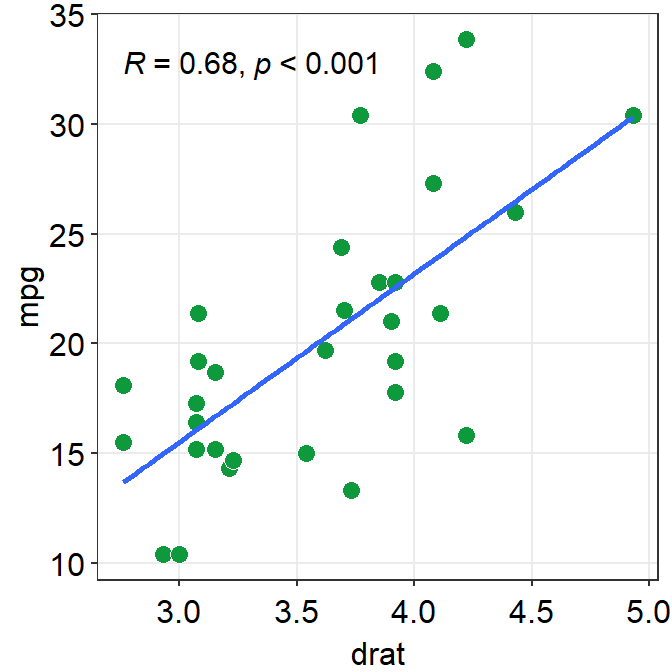
Jitter’s width can be controlled using point_jitter_width.
ggplot(data = df, mapping = aes(x = Day, y = Value, color = Day)) +
sm_bar(errorbar_type = 'ci',
point_jitter_width = 0.2) +
scale_color_manual(values = sm_color('blue','darkred','viridian'))
You can also adjust different parameters of the bar graph using bar.params, err.params and point.params.
bar.params = list()sends arguments, such ascolor,fill,widthandalphatogeom_bar()so that a bar is plotted.
ggplot(data = df, mapping = aes(x = Day, y = Value, color = Day)) +
sm_bar(bar.params = list(alpha = 0.3,
color = 'transparent',
color = 'gray80',
width = 0.5)) +
scale_color_manual(values = sm_color('blue','darkred','viridian'))
err.params = list()sends arguments, such ascolor, togeom_linerange()so that an error bar is plotted.
ggplot(data = df, mapping = aes(x = Day, y = Value, color = Day)) +
sm_bar(errorbar_type = 'sd',
bar.params = list(alpha = 0.3,
color = 'transparent',
color = 'gray80',
width = 0.5),
err.params = list(color = 'gray40',
size = 1)) +
scale_color_manual(values = sm_color('blue','darkred','viridian'))point.params = list()feeds arguments, such ascolor,fill, andalphatogeom_point()to so that individual points are plotted.
ggplot(data = df, mapping = aes(x = Day, y = Value, color = Day)) +
sm_bar(errorbar_type = 'sd',
bar.params = list(alpha = 0.3,
color = 'transparent',
color = 'gray80',
width = 0.5),
err.params = list(color = 'gray40',
size = 1),
point.params = list(shape = 15,
alpha = 0.6)) +
scale_color_manual(values = sm_color('blue','darkred','viridian'))...is generic parameter that can affect different components of the bar graph, error bar and points if these do not have defaults set withinbar.params = list(),err.params = list()andpoint.params = list().
ggplot(data = df, mapping = aes(x = Day, y = Value, color = Day)) +
sm_bar(color = 'black', fill = 'black',
alpha = 0.5) +
scale_color_manual(values = sm_color('blue','darkred','viridian'))
Notice that fill of the bar is still gray80, as well as color (border color) not being black, because bar.params has defaults, You can remove it by writing bar.params = list().
ggplot(data = df, mapping = aes(x = Day, y = Value, color = Day)) +
sm_bar(color = 'black', fill = 'black',
alpha = 0.5,
bar.params = list()) +
scale_color_manual(values = sm_color('blue','darkred','viridian'))
Note that width as a generic parameters get applied to geom_bar() only because none other visual components recognize width parameter.
11.8.1 Plotting individual points with unique colors
As before with sm_boxplot() and sm_violin(), to plot individual points with unique colors, set color = Subject.
ggplot(data = df, mapping = aes(x = Day, y = Value, color = Subject)) +
sm_bar() +
scale_color_manual(values = sm_palette(16)) 
sm_bar() can also print distinct box colors across distinct x levels. This requires the defaults of bar.params to be reset. Therefore, it needs to be written as bar.params = list().
ggplot(data = df, mapping = aes(x = Day, y = Value, color = Subject,
fill = Day)) +
sm_bar(bar.params = list(alpha = 0.7, color = 'transparent')) +
scale_color_manual(values = sm_palette(16)) +
scale_fill_manual(values = sm_color('blue','darkred','viridian'))
To set one color across all points, you need to remove color = Subject. point.params can be specified to control the aesthetics of the points.
ggplot(data = df, mapping = aes(x = Day, y = Value,
fill = Day)) +
sm_bar(bar.params = list(alpha = 0.7, color = 'transparent'),
point.params = list(shape = 21, fill = 'gray90',
color = 'black', size = 2.2)) +
scale_fill_manual(values = sm_color('blue','darkred','viridian'))This is an example where the bar and points have unique colors per group.
ggplot(data = df, mapping = aes(x = Day, y = Value,
fill = Day)) +
sm_bar(bar.params = list(alpha = 0.5, color = 'transparent'),
point.params = list(shape = 21, alpha = 1,
size = 2.2,
color = 'white')) +
scale_fill_manual(values = sm_color('blue','darkred','viridian'))12 Slope Charts, Point plots, Bland-Altman, Forests, Rainclouds, Histograms (Part 2)
As in the previous chapter, if you want to find certain bits of information about the package on this page, the best way to do so is to CTRL + F certain key words.
12.1 Slope chart - sm_slope()
A slope chart is popular when changes between two different time points for each measurement (ex. a participant) are described.
We will generate some random data to discuss sm_slope().
library(tidyverse)
library(smplot2)
set.seed(201) # generate random data
before = abs(rnorm(20,2.5,1))
after = abs(rnorm(20,5,1))
Subject <- rep(paste0('S',seq(1:20)), 2)
Data <- data.frame(Value = matrix(c(before,after),ncol=1))
beforeAfter <- rep(c('Before', 'After'), each = length(before))
df <- cbind(Subject, Data, beforeAfter)Each level of x has to be categorical to use sm_slope(). In other words, the x-axis cannot be continuous. It has to be discrete.
- It should take the form of
characterorfactor(ex. ‘One’, ‘Two’, ‘Three’), notdouble. - If x-axis only has number (i.e.,
doubleform, such as 1.02, 1.05, 1.5), thensm_slope()will produce an error.
df$beforeAfter <- factor(df$beforeAfter, levels = c('Before','After'))
df$beforeAfter## [1] Before Before Before Before Before Before Before Before Before Before Before Before
## [13] Before Before Before Before Before Before Before Before After After After After
## [25] After After After After After After After After After After After After
## [37] After After After After
## Levels: Before Aftersm_slope() draws a slope chart.
- It has the argument
legends, which has been set toFALSEas the default. - It automatically uses
sm_slope_theme().
First and foremost, group argument has to be specified within sm_slope().
- ex.
group = Subject, whereSubjectis the name of the column carrying identifers for individuals, means that each individual line will be grouped for each observation.
ggplot(data = df, aes(x = beforeAfter, y = Value, fill = beforeAfter)) +
sm_slope(group = Subject) 
labels argument decides the x-axis tick sm_slope(). If it is empty, it will choose alphabetical letters.
ggplot(data = df, aes(x = beforeAfter, y = Value, fill = beforeAfter)) +
sm_slope(group = Subject,
labels = c('Before', 'After')) +
scale_fill_manual(values= sm_color('blue','orange'))
Same color can also be set across the factors (x-level).
ggplot(data = df, aes(x = beforeAfter, y = Value, fill = beforeAfter)) +
sm_slope(group = Subject,
labels = c('Before', 'After')) +
scale_fill_manual(values= sm_color('blue','blue'))
12.1.1 Drawing the mean plot
When show_mean = TRUE, then the average plot will be shown.
ggplot(data = df, aes(x = beforeAfter, y = Value, fill = beforeAfter)) +
sm_slope(group = Subject,
labels = c('Before', 'After'),
show_mean = TRUE) +
scale_fill_manual(values= sm_color('blue','orange'))
If show_err = TRUE, then the error bar will be displayed.
ggplot(data = df, aes(x = beforeAfter, y = Value, fill = beforeAfter)) +
sm_slope(group = Subject,
labels = c('Before', 'After'),
show_mean = TRUE,
show_err = TRUE) +
scale_fill_manual(values= sm_color('blue','orange'))sm_slope() has many several arguments:
point.paramsfeeds arguments togeom_point()to plot the individual points with specifiedcolor,fill,size,shapeandalpha.
ggplot(data = df, aes(x = beforeAfter, y = Value)) +
sm_slope(group = Subject,
labels = c('Before', 'After'),
point.params = list(fill = sm_color('blue'),
color = 'white',
size = 2.2,
stroke = 0.65,
shape = 21))
line.paramsfeeds arguments togeom_line()to plot the points with specifiedcolor,sizeandalpha.
ggplot(data = df, aes(x = beforeAfter, y = Value)) +
sm_slope(group = Subject,
labels = c('Before', 'After'),
point.params = list(fill = sm_color('blue'),
color = 'white',
size = 2.2,
stroke = 0.65,
shape = 21,
alpha = 0.3),
line.params = list(color = sm_color('skyblue'),
alpha = 0.3))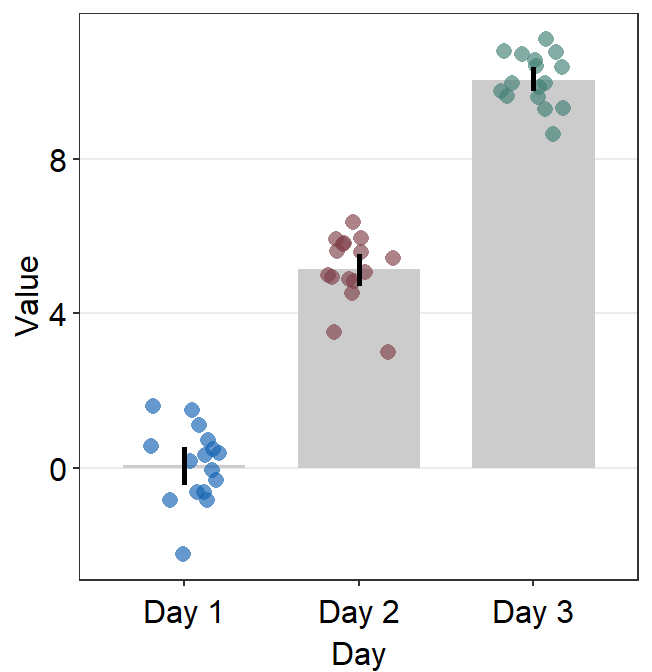
avgPoint.paramsfeeds arguments togeom_point()to plot the average point with specifiedcolor,fill,size,shapeandalpha.
ggplot(data = df, aes(x = beforeAfter, y = Value)) +
sm_slope(group = Subject,
show_mean = TRUE,
labels = c('Before', 'After'),
point.params = list(fill = sm_color('blue'),
color = 'white',
size = 2.2,
stroke = 0.65,
shape = 21,
alpha = 0.3),
line.params = list(color = sm_color('skyblue'),
alpha = 0.3),
avgPoint.params = list(color='transparent', shape = 21,
size = 4, fill = sm_color('blue')))avgLine.paramsfeeds arguments togeom_line()to plot the average plot (line) with specifiedcolor,sizeandalpha.
ggplot(data = df, aes(x = beforeAfter, y = Value)) +
sm_slope(group = Subject,
show_mean = TRUE,
labels = c('Before', 'After'),
point.params = list(fill = sm_color('blue'),
color = 'white',
size = 2.2,
stroke = 0.65,
shape = 21,
alpha = 0.3),
line.params = list(color = sm_color('skyblue'),
alpha = 0.3),
avgPoint.params = list(color='transparent', shape = 21,
size = 4, fill = sm_color('blue')),
avgLine.params = list(size = 1, color = sm_color('blue')))
err.paramsfeeds arguments togeom_linerange()to plot the error bar with specifiedcolor,sizeetc.
ggplot(data = df, aes(x = beforeAfter, y = Value)) +
sm_slope(group = Subject,
show_mean = TRUE,
show_err = TRUE,
labels = c('Before', 'After'),
point.params = list(fill = sm_color('blue'),
color = 'white',
size = 2.2,
stroke = 0.65,
shape = 21,
alpha = 0.3),
line.params = list(color = sm_color('skyblue'),
alpha = 0.3),
avgPoint.params = list(color='transparent', shape = 21,
size = 4, fill = sm_color('blue')),
avgLine.params = list(size = 1, color = sm_color('blue')),
err.params = list(size = 1, color = sm_color('blue')))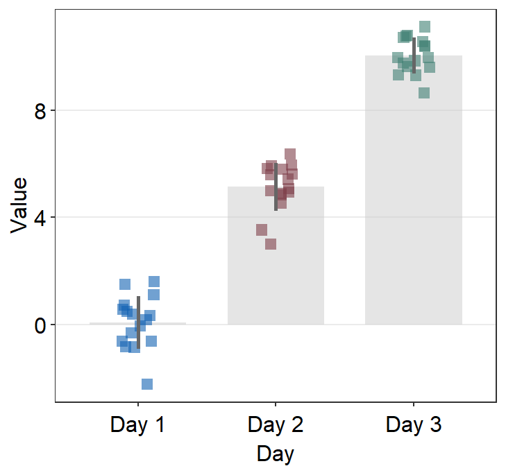
xtick.paramsfeeds arguments toscale_x_discrete()so that the user can have control over specific aesthetics of the x-tick. Type?scale_x_discrete()for more information.errorbar_typecan be used to set the error bar type in the mean plot. The default iserrorbar_type = 'sd'. Two other types areci(95% confidence interval) andse(standard error).
ggplot(data = df, aes(x = beforeAfter, y = Value)) +
sm_slope(group = Subject,
show_mean = TRUE,
show_err = TRUE,
labels = c('Before', 'After'),
point.params = list(fill = sm_color('blue'),
color = 'white',
size = 2.2,
stroke = 0.65,
shape = 21,
alpha = 0.3),
line.params = list(color = sm_color('skyblue'),
alpha = 0.3),
avgPoint.params = list(color='transparent', shape = 21,
size = 4, fill = sm_color('blue')),
avgLine.params = list(size = 1, color = sm_color('blue')),
err.params = list(size = 1, color = sm_color('blue')),
errorbar_type = 'ci')
ggplot(data = df, aes(x = beforeAfter, y = Value)) +
sm_slope(group = Subject,
show_mean = TRUE,
show_err = TRUE,
labels = c('Before', 'After'),
point.params = list(fill = sm_color('blue'),
color = 'white',
size = 2.2,
stroke = 0.65,
shape = 21,
alpha = 0.3),
line.params = list(color = sm_color('skyblue'),
alpha = 0.3),
avgPoint.params = list(color='transparent', shape = 21,
size = 4, fill = sm_color('blue')),
avgLine.params = list(size = 1, color = sm_color('blue')),
err.params = list(size = 1, color = sm_color('blue')),
errorbar_type = 'se')
many_groupsdecides whether the average plot is based on all individual data across groups or per group.
To show how this function works, we will need to use data with multiple groups and timepoints.
set.seed(201) # generate random data
day1 = abs(rnorm(20,2.5,1))
day2 = abs(rnorm(20,5,1))
day3 = abs(rnorm(20,7.5,1))
Subject <- rep(paste0('N',seq(1:20)), 3)
Data <- data.frame(Value = matrix(c(day1,day2,day3),ncol=1))
Day <- rep(c('Day 1', 'Day 2', 'Day 3'), each = length(day1))
df <- cbind(Subject, Data, Day)
df$group <- 'Normal'
set.seed(191) # generate random data
day1 = abs(rnorm(20,1.5,1))
day2 = abs(rnorm(20,1.8,1))
day3 = abs(rnorm(20,2.3,1))
Subject <- rep(paste0('P',seq(1:20)), 3)
Data <- data.frame(Value = matrix(c(day1,day2,day3),ncol=1))
Day <- rep(c('Day 1', 'Day 2', 'Day 3'), each = length(day1))
df2 <- cbind(Subject, Data, Day)
df2$group <- 'Patients'
df3 <- rbind(df,df2)If we plot a slope chart, sm_slope(..., show_mean = TRUE) using data of multiple groups while many_groups = FALSE, we will draw a single average plot across all groups.
ggplot(data = df3, aes(x = Day, y = Value, color = group,
shape = group, group = group)) +
sm_slope(labels = c('Day 1','Day 2', 'Day 3'),
group = Subject,
point.params = list(alpha = 0.2),
line.params = list(alpha = 0.2),
avgPoint.params = list(size = 4),
avgLine.params = list(size = 1),
err.params = list(size = 1),
legends = TRUE,
show_mean = TRUE) +
scale_color_manual(values = sm_color('viridian','darkred')) +
scale_shape_manual(values = c(16,17)) +
theme(legend.position = c(0.2,0.85),
legend.title = element_blank(),
legend.text = element_text(size = 10))To prevent this from happening, set many_groups = TRUE.
ggplot(data = df3, aes(x = Day, y = Value, color = group,
shape = group, group = group)) +
sm_slope(labels = c('Day 1','Day 2', 'Day 3'),
group = Subject,
point.params = list(alpha = 0.2),
line.params = list(alpha = 0.2),
avgPoint.params = list(size = 4),
avgLine.params = list(size = 1),
err.params = list(size = 1),
many_groups = TRUE,
legends = TRUE,
show_mean = TRUE) +
scale_color_manual(values = sm_color('viridian','darkred')) +
scale_shape_manual(values = c(16,17)) +
theme(legend.position = c(0.2,0.85),
legend.title = element_blank(),
legend.text = element_text(size = 10))
12.2 Point plot - sm_pointplot()
A point plot is typically an average plot with error bars. sm_pointplot() is useful if the data has many groups or if the user wants to include a shadow of individual points behind the (average) point plot. The function accepts legends and borders like other smplot2 functions.
Let’s generate some random data. .
set.seed(201) # generate random data
day1 = abs(rnorm(20,1.5,1))
day2 = abs(rnorm(20,2,1))
day3 = abs(rnorm(20,4.1,2.2))
Subject <- rep(paste0('N',seq(1:20)), 3)
Data <- data.frame(Value = matrix(c(day1,day2,day3),ncol=1))
Day <- rep(c('Day 1', 'Day 2', 'Day 3'), each = length(day1))
df <- cbind(Subject, Data, Day)
df$group <- 'Normal'
set.seed(191) # generate random data
day1 = abs(rnorm(20,1.5,1))
day2 = abs(rnorm(20,1.8,1))
day3 = abs(rnorm(20,2.3,1.5))
Subject <- rep(paste0('M',seq(1:20)), 3)
Data <- data.frame(Value = matrix(c(day1,day2,day3),ncol=1))
Day <- rep(c('Day 1', 'Day 2', 'Day 3'), each = length(day1))
df2 <- cbind(Subject, Data, Day)
df2$group <- 'Myopia'
set.seed(1291) # generate random data
day1 = abs(rnorm(20,1.5,1))
day2 = abs(rnorm(20,2.2,1))
day3 = abs(rnorm(20,3.3,1.8))
Subject <- rep(paste0('A',seq(1:20)), 3)
Data <- data.frame(Value = matrix(c(day1,day2,day3),ncol=1))
Day <- rep(c('Day 1', 'Day 2', 'Day 3'), each = length(day1))
df3 <- cbind(Subject, Data, Day)
df3$group <- 'Amblyopia'
df1 <- rbind(df,df2,df3) # three groups of individuals, three time pointssm_pointplot() groups each observation to plot the line. So, the grouping always needs to be specified: ggplot(aes(x = ..., y = ..., group = xxx)).
ggplot(data = df1, aes(x = Day, y = Value,
color = group, group = group)) +
sm_pointplot()We can customise the colors using sm_color_manual().
set.seed(11)
my_colors <- sample(sm_palette(20),3) # pick random 3 colors
ggplot(data = df1, aes(x = Day, y = Value,
color = group, group = group)) +
sm_pointplot(legends = T) +
scale_color_manual(values = my_colors) +
theme(legend.position = c(0.22,0.83), # add legend
legend.title = element_blank())The problem with this plot is that we do not clearly see the error bars, especially the ones of the Amblyopia plot.
To resolve this, we will need to explore the parameters of sm_pointplot().
...is the generic parameter that controls all aspects of the plot.- This will be important to apply
position_dodge()to prevent the overlap of the plots.
- This will be important to apply
ggplot(data = df1, aes(x = Day, y = Value,
color = group, group = group)) +
sm_pointplot(legends = T,
position = position_dodge(width = .05)) +
scale_color_manual(values = my_colors) +
theme(legend.position = c(0.22,0.83), # add legend
legend.title = element_blank())avgPoint.paramsfeeds arguments togeom_point()to plot the average point with specifiedcolor,fill,size,shapeandalpha.
Remember that in this case, all three plots show the average, not the individual data.
ggplot(data = df1, aes(x = Day, y = Value,
color = group, group = group)) +
sm_pointplot(legends = T,
position = position_dodge(width = .05),
avgPoint.params = list(alpha = 0.8, size = 2.2,
shape = 15)) +
scale_color_manual(values = my_colors) +
theme(legend.position = c(0.22,0.83), # add legend
legend.title = element_blank())
avgLine.paramsfeeds arguments togeom_line()to plot the average line with specifiedcolor,sizeandalpha.
ggplot(data = df1, aes(x = Day, y = Value,
color = group, group = group)) +
sm_pointplot(legends = T,
position = position_dodge(width = .05),
avgPoint.params = list(alpha = 0.8, size = 2.2,
shape = 15),
avgLine.params = list(alpha = 0.8, size = 1)) +
scale_color_manual(values = my_colors) +
theme(legend.position = c(0.22,0.83), # add legend
legend.title = element_blank())
point.paramsfeeds arguments togeom_point()to plot the points in the shadow with specifiedcolor,fill,size,shapeandalpha.line.paramsfeeds arguments togeom_line()to plot the lines in the shadow with specifiedcolor,sizeandalpha.
To show these parameters, we will need to plot data only from one group.
Let’s display the shadow by setting show_shadow = TRUE. To show the shadow, group argument has to be included, which represents the variable by which each individual observation is grouped across the x-axis. In this case, it would be group = Subject.
ggplot(data = df, aes(x = Day, y = Value, group = group)) +
sm_pointplot(show_shadow = T,
group = Subject)
By using point.params and line.params, you can control the aesthetics of the shadow.
ggplot(data = df, aes(x = Day, y = Value, group = group)) +
sm_pointplot(show_shadow = T,
group = Subject,
point.params = list(size = 1,
color = sm_color('wine'),
alpha = 0.5),
line.params = list(size = 1,
color = sm_color('wine'),
alpha = 0.2))
Now let’s control the aesthetics of the average plot using avgPoint.params, avgLine.params and err.params.
ggplot(data = df, aes(x = Day, y = Value, group = group)) +
sm_pointplot(show_shadow = T,
group = Subject,
point.params = list(size = 1,
color = sm_color('wine'),
alpha = 0.5),
line.params = list(size = 1,
color = sm_color('wine'),
alpha = 0.2),
avgPoint.params = list(size = 3,
shape = 21,
color = 'white',
stroke = 0.8,
fill = sm_color('purple')),
avgLine.params = list(size = 1.2,
alpha = 0.7,
color = sm_color('purple')),
err.params = list(size = 1.2,
alpha = 0.7,
color = sm_color('purple')))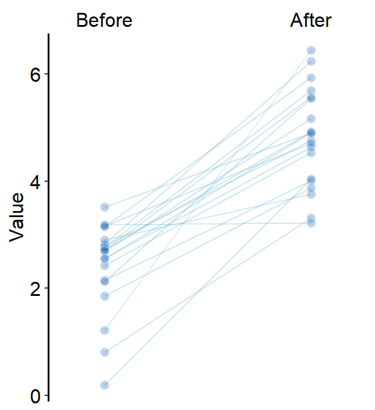
errorbar_typecan control the type of the error that is shown on the point plot. The three choices are standard error (se), standard deviation (sd) and 95% confidence interval (ci).
ggplot(data = df, aes(x = Day, y = Value, group = group)) +
sm_pointplot(show_shadow = T,
group = Subject,
errorbar_type = 'sd',
point.params = list(size = 1,
color = sm_color('wine'),
alpha = 0.5),
line.params = list(size = 1,
color = sm_color('wine'),
alpha = 0.2),
avgPoint.params = list(size = 3,
shape = 21,
color = 'white',
stroke = 0.8,
fill = sm_color('purple')),
avgLine.params = list(size = 1.2,
alpha = 0.7,
color = sm_color('purple')),
err.params = list(size = 1.2,
alpha = 0.7,
color = sm_color('purple')))
12.3 A Bland Altman plot - sm_bland_altman()
sm_bland_altman() and sm_statBlandAlt() functions can be used to create a Bland-Altman plot.
- The plot is used to measure agreement between two different measurements.
- It is also used to measure test-retest variability of a method.
Let’s generate some random data to explore these two functions.
set.seed(1)
first <- rnorm(20)
second <- rnorm(20)
df3 <- as_tibble(cbind(first,second)) # requires library(tidyverse)Now let’s draw a Bland Altman plot using sm_bland_altman(), which requires two arguments: first dataset, second dataset. They have to be numerical vectors of equal length.
- This function automatically uses sm_classic() theme.
sm_bland_altman(df3$first, df3$second, color = sm_color('green')) +
scale_y_continuous(limits = c(-4,4))
The upper dashed line represents the upper limit of the difference between two measurements (mean difference + 1.96 * standard deviation of the difference).
The lower dashed line represents the lower limit of the difference between two measurements (mean difference - 1.96 * standard deviation of the difference).
The middle dashed line represents the mean difference.
The shaded region is the 95% confidence interval of the difference between the two measurements from one-sample t-test (difference vs 0).
- If the shaded region includes 0 in the y-axis, then there is no significant difference (p > 0.05) between 0 and the difference.
- If it does not include 0, then there is a significant difference. This indicates that the two measurement results are considerably different.
I usually label them with
annotate(), which is a function from ggplot2. This process can be tedious.Also,
sm_statBlandAlt()calculates the statistical values that are necessary to draw a Bland-Altman plot, such as the mean difference, upper and lower limits. This function is used to annotate the values in the plot.- The arguments for this function are first and second datasets, just like in
sm_bland_altman().
- The arguments for this function are first and second datasets, just like in
res <- sm_statBlandAlt(df3$first,df3$second) # store the results in res variable
sm_bland_altman(df3$first, df3$second, color = sm_color('green')) +
scale_y_continuous(limits = c(-4,4)) +
annotate('text', label = 'Mean', x = -1, y = res$mean_diff + 0.4) +
annotate('text', label = signif(res$mean_diff,3), x = -1, y = res$mean_diff - 0.4) +
annotate('text', label = 'Upper limit', x = 1.2, y = res$upper_limit + 0.4) +
annotate('text', label = signif(res$upper_limit,3), x = 1.2, y = res$upper_limit - 0.4) +
annotate('text', label = 'Lower limit', x = 1.2, y = res$lower_limit + 0.4) +
annotate('text', label = signif(res$lower_limit,3), x = 1.2, y = res$lower_limit-0.4)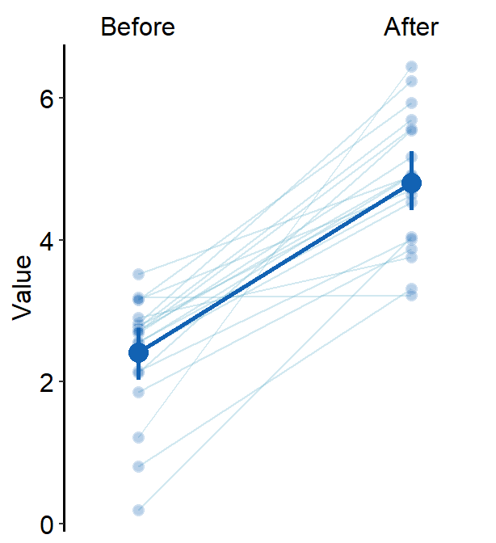
- Let’s change the border color of the circles to white. To do so, we will have to change their shape to 21.
sm_bland_altman(df3$first, df3$second, shape = 21, fill = sm_color('green'), color = 'white') +
scale_y_continuous(limits = c(-4,4)) +
annotate('text', label = 'Mean', x = -1, y = res$mean_diff + 0.4) +
annotate('text', label = signif(res$mean_diff,3), x = -1, y = res$mean_diff - 0.4) +
annotate('text', label = 'Upper limit', x = 1.2, y = res$upper_limit + 0.4) +
annotate('text', label = signif(res$upper_limit,3), x = 1.2, y = res$upper_limit - 0.4) +
annotate('text', label = 'Lower limit', x = 1.2, y = res$lower_limit + 0.4) +
annotate('text', label = signif(res$lower_limit,3), x = 1.2, y = res$lower_limit-0.4)
12.4 Forest plot - sm_forest()
A forest plot can summarise data across multiple studies or experiments.
set.seed(2) # generate random data
day1 = rnorm(20,0,1)
day2 = rnorm(20,5,1)
day3 = rnorm(20,6,1.5)
day4 = rnorm(20,7,2)
Subject <- rep(paste0('S',seq(1:20)), 4)
Data <- data.frame(Value = matrix(c(day1,day2,day3,day4),ncol=1))
Day <- rep(c('Day 1', 'Day 2', 'Day 3', 'Day 4'), each = length(day1))
df2 <- cbind(Subject, Data, Day)When using sm_forest(), x is required to be a continuous variable. y should be a categorical variable (i.e., factor).
ggplot(data = df2, aes(x = Value, y = Day, color = Day)) +
sm_forest() 
sm_forest() has many parameters.
point_jitter_widthcontrols the width of the jitter in individual points.sep_levelcontrols the separation level between the average point and the individual points.- The difference between
sm_raincloudandsm_forest()is thatsep_levelinsm_forest()does not have a limit to its range compared to 0-4 insm_raincloud().
- The difference between
ggplot(data = df2, aes(x = Value, y = Day, color = Day)) +
sm_forest(point_jitter_width = 0.2, sep_level = 3) +
scale_color_manual(values = sm_palette(4))
sep_level can also be negative. The position of the points relative to the average points will be opposite (individual points above average points).
ggplot(data = df2, aes(x = Value, y = Day, color = Day)) +
sm_forest(point_jitter_width = 0.2, sep_level = -3) +
scale_color_manual(values = sm_palette(4))errorbar_typecontrols the type of the error bar.- The default error bar type is 95% confidence interval (
errorbar_type = 'ci'). You can change it to either standard error ('se') or standard deviation ('sd'). Here is standard deviation.
- The default error bar type is 95% confidence interval (
ggplot(data = df2, aes(x = Value, y = Day, color = Day)) +
sm_forest(point_jitter_width = 0.2, sep_level = 3,
errorbar_type = 'sd') +
scale_color_manual(values = sm_palette(4))- If
points = FALSE, the points will not be shown.
ggplot(data = df2, aes(x = Value, y = Day, color = Day)) +
sm_forest(point_jitter_width = 0.2, sep_level = 3,
points = FALSE) +
scale_color_manual(values = sm_palette(4))- If
refLine = TRUE, the reference line will be shown. Its location along the x-axis can be controlled byxintercept(default:xintercept = 0).
ggplot(data = df2, aes(x = Value, y = Day, color = Day)) +
sm_forest(point_jitter_width = 0.2, sep_level = 3,
refLine = TRUE, xintercept = 4) +
scale_color_manual(values = sm_palette(4))
sm_forest() has xxx.params arguments as well as ... generic parameter:
avgPoint.paramsfeeds arguments togeom_point()to plot the average point with specifiedcolor,fill,size,shapeandalpha.
ggplot(data = df2, aes(x = Value, y = Day, color = Day)) +
sm_forest(avgPoint.params = list(shape = 17,
size = 4)) +
scale_color_manual(values = sm_palette(4))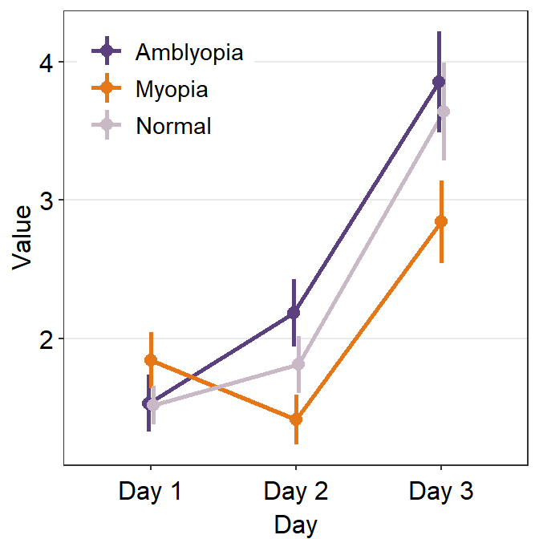
err.params = list()feeds arguments, such ascolorandsize, togeom_linerange()to plot the error bar.
ggplot(data = df2, aes(x = Value, y = Day, color = Day)) +
sm_forest(avgPoint.params = list(shape = 17,
size = 4),
err.params = list(size = 1)) +
scale_color_manual(values = sm_palette(4))
Notice that the default color of err.params = list(color = 'black') has disappeared. You could manually include it to restore the default.
ggplot(data = df2, aes(x = Value, y = Day, color = Day)) +
sm_forest(avgPoint.params = list(shape = 17,
size = 4),
err.params = list(size = 1,
color = 'black')) +
scale_color_manual(values = sm_palette(4))
point.params = list()feeds arguments, such ascolor,fill, andalphatogeom_point()to plot the individual points.
ggplot(data = df2, aes(x = Value, y = Day, color = Day)) +
sm_forest(avgPoint.params = list(shape = 17,
size = 4),
err.params = list(size = 1,
color = 'black'),
point.params = list(shape = 17,
alpha = 0.5,
size = 2.2)) +
scale_color_manual(values = sm_palette(4))
refLine.params = list()feeds arguments, such ascolorandsizetogeom_vline()to plot the reference line.
ggplot(data = df2, aes(x = Value, y = Day, color = Day)) +
sm_forest(refLine = TRUE,
avgPoint.params = list(shape = 17,
size = 4),
err.params = list(size = 1,
color = 'black'),
point.params = list(shape = 17,
alpha = 0.5,
size = 2.2),
ref.params = list(color = 'black',
linetype = 'dashed')) +
scale_color_manual(values = sm_palette(4))
12.4.1 Annotation using sm_forest_annot()
Annotations about the error range (ex. 95% confidence interval) in texts can be done using sm_forest_annot().
sm_forest_annot() has various arguments:
The
datarefers to the name of the data frame that is used inggplot().xargument is the x variable that is used inggplot().yargument is the variable that is used inggplot().
ggplot(data = df2, aes(x = Value, y = Day, color = Day)) +
sm_forest() +
scale_color_manual(values = sm_palette(4)) +
sm_forest_annot(data = df2, x = Value, y = Day)
sep_levelrefers to the separation level between the text annotation and the average point. If it is positive, the text will be above the mean point. In practice, put the same value ofsep_levelin bothsm_forest()andsm_forest_annot(). The default issep_level = 2, which is also found insm_forest().
sep_distance <- 3
ggplot(data = df2, aes(x = Value, y = Day, color = Day)) +
sm_forest(sep_level = sep_distance) +
scale_color_manual(values = sm_palette(4)) +
sm_forest_annot(data = df2, x = Value, y = Day,
sep_level = sep_distance)errorbar_typerefers to the type of error by which the text annotation should be written. In practice, put the same argument ofsep_levelin bothsm_forest()andsm_forest_annot(). The default is set to confidence interval (errorbar_type = 'ci').
sep_distance <- 3
errType <- 'sd'
ggplot(data = df2, aes(x = Value, y = Day, color = Day)) +
sm_forest(sep_level = sep_distance,
errorbar_type = errType) +
scale_color_manual(values = sm_palette(4)) +
sm_forest_annot(data = df2, x = Value, y = Day,
sep_level = sep_distance,
errorbar_type = errType)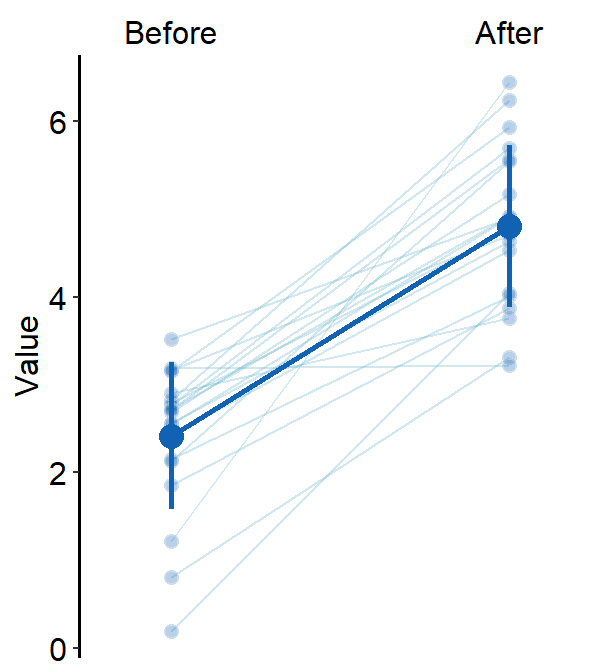
text.paramsfeeds arguments togeom_text()to set the aesthetics of the texts such ascolorandsize.
sep_distance <- 2
errType <- 'sd'
ggplot(data = df2, aes(x = Value, y = Day, color = Day)) +
sm_forest(sep_level = sep_distance,
errorbar_type = errType) +
scale_color_manual(values = sm_palette(4)) +
sm_forest_annot(data = df2, x = Value, y = Day,
sep_level = sep_distance,
errorbar_type = errType,
text.params = list(size = 3.5))
Notice that text.params = list(color = 'black') has been removed because we have specifically wirtten text.params = list(). Therefore, there is now unique color to each Day as set within ggplot(...,aes(color = Day)).
sep_level that is negative will shift the positions of the annotations and points.
sep_distance <- -2
errType <- 'sd'
ggplot(data = df2, aes(x = Value, y = Day, color = Day)) +
sm_forest(sep_level = sep_distance,
errorbar_type = errType) +
scale_color_manual(values = sm_palette(4)) +
sm_forest_annot(data = df2, x = Value, y = Day,
sep_level = sep_distance,
errorbar_type = errType,
text.params = list(size = 3.5))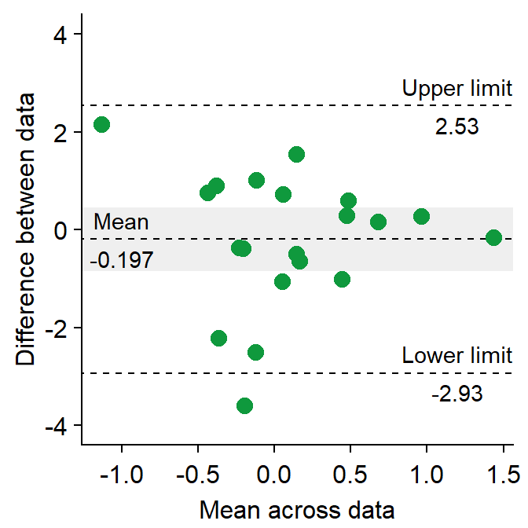
12.5 Raincloud plot - sm_raincloud()
sm_raincloud() generates the raincloud plot.
- It also has arguments
bordersandlegendsas it usessm_hgrid()automatically.
In this section, we will use this random data.
set.seed(2343) # generate random data
group1 = abs(rnorm(20,2.5,1))
group2 = abs(rnorm(20,5,1))
Subject <- rep(paste0('S',seq(1:20)), 2)
Data <- data.frame(Value = matrix(c(group1,group2),ncol=1))
Group <- rep(c('Group 1', 'Group 2'), each = length(group1))
df <- cbind(Subject, Data, Group)ggplot(data = df, mapping = aes(x = Group, y = Value, fill = Group)) +
sm_raincloud() fill can be customised using scale_fill_manual().
ggplot(data = df, mapping = aes(x = Group, y = Value, fill = Group)) +
sm_raincloud() +
scale_fill_manual(values = sm_color('blue','orange'))
Here, x has to be a categorical variable. y should be a continuous variable.
sm_raincloud() has various parameters.
point_jitter_widthcontrols the width of the jitter of individual points.sep_level(0-4) controls the separation level among the boxplot, violin plot and the points. The default is set tosep_level = 2.sep_level = 0overlaps them.sep_level = 4separates them.
ggplot(data = df, mapping = aes(x = Group, y = Value, fill = Group)) +
sm_raincloud(sep_level = 4,
point_jitter_width = .2) +
scale_fill_manual(values = sm_color('blue','orange'))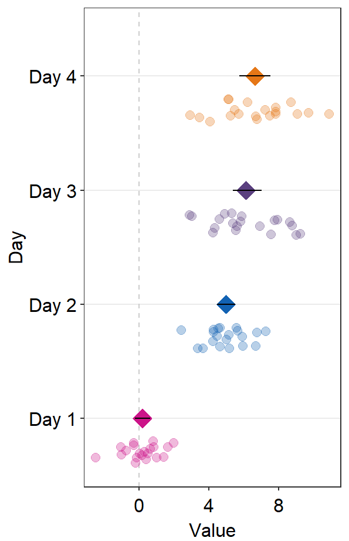
which_siderefers to the side where the distribution plot faces.rorrightwill face the distribution to the right (default).lorleftwill face the distribution to the left.
ggplot(data = df, mapping = aes(x = Group, y = Value, fill = Group)) +
sm_raincloud(which_side = 'left') +
scale_fill_manual(values = sm_color('blue','orange'))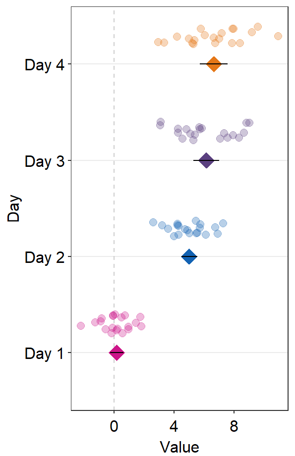
verticalcontrols the orientation of the raincloud plot. The default is set tovertical = TRUE. It refers to the fact that the distribution is vertically oriented.
ggplot(data = df, mapping = aes(x = Group, y = Value, fill = Group)) +
sm_raincloud(vertical = FALSE) +
scale_fill_manual(values = sm_color('blue','orange'))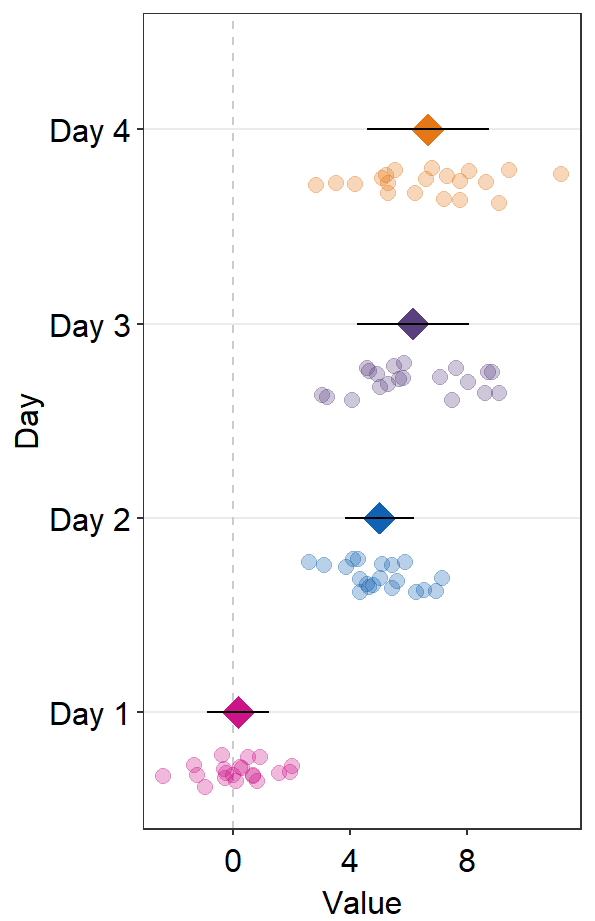
vertical = FALSE and which_side = 'right' gives the true raincloud shape, the distribution plot being the cloud and the individual points being the rain.
pointsis an argument that determines whether the jittered individual points are shown on the plot.- The default is set to
points = TRUE.
- The default is set to
ggplot(data = df, mapping = aes(x = Group, y = Value, fill = Group)) +
sm_raincloud(points = FALSE) +
scale_fill_manual(values = sm_color('blue','orange'))
Lastly, it has xxx.params to control the aesthetics of boxplots, violins and the points:
boxplot.paramssends arguments togeom_half_boxplot()(almost identical togeom_boxplot()) to plot the boxplot with specifiedcolor,fill,outlier.shapeetc.
ggplot(data = df, mapping = aes(x = Group, y = Value, fill = Group)) +
sm_raincloud(boxplot.params = list(color = 'white')) +
scale_fill_manual(values = sm_color('blue','orange'))By setting the color (border of the boxplot) as white, I think the raincloud plot looks more elegant and minimalistic.
violin.paramssends arguments togeom_half_violin()(almost identical togeom_violin()) to plot the violin plot with specifiedcolor,alphaandfill, etc
ggplot(data = df, mapping = aes(x = Group, y = Value, fill = Group)) +
sm_raincloud(boxplot.params = list(color = 'white'),
violin.params = list(alpha = 0.2,
color = 'transparent')) +
scale_fill_manual(values = sm_color('blue','orange'))point.paramssends arguments togeom_point()to plot the points in the shadow with specifiedcolor,fill,size,shapeandalpha.
ggplot(data = df, mapping = aes(x = Group, y = Value, fill = Group)) +
sm_raincloud(boxplot.params = list(color = 'white'),
violin.params = list(alpha = 0.2,
color = 'transparent'),
point.params = list(stroke = 0.8,
shape = 21,
color = 'white',
size = 2.6)) +
scale_fill_manual(values = sm_color('blue','orange'))
You can also change the label of the x-axis tick using scale_x_discrete() rather than scale_x_continuous() from the original smplot.
ggplot(data = df, mapping = aes(x = Group, y = Value, fill = Group)) +
sm_raincloud(boxplot.params = list(color = 'white'),
violin.params = list(alpha = 0.2,
color = 'transparent'),
point.params = list(stroke = 0.8,
shape = 21,
color = 'white',
size = 2.6)) +
scale_fill_manual(values = sm_color('blue','orange')) +
scale_x_discrete(labels = c('One', 'Two'))12.6 Histogram - sm_hist()
Histogram is used to show the distribution of data.
Using this random data, I will demonstrate sm_hist().
set.seed(2)
data=data.frame(value=rnorm(1000))
data2 = data.frame(value=rnorm(1000,5,1))
data$day <- 'day1'
data2$day <- 'day2'
rbind(data,data2) -> dfLet’s generate histogram just for data.
ggplot(data = data, aes(x=value, fill=day)) +
sm_hist() 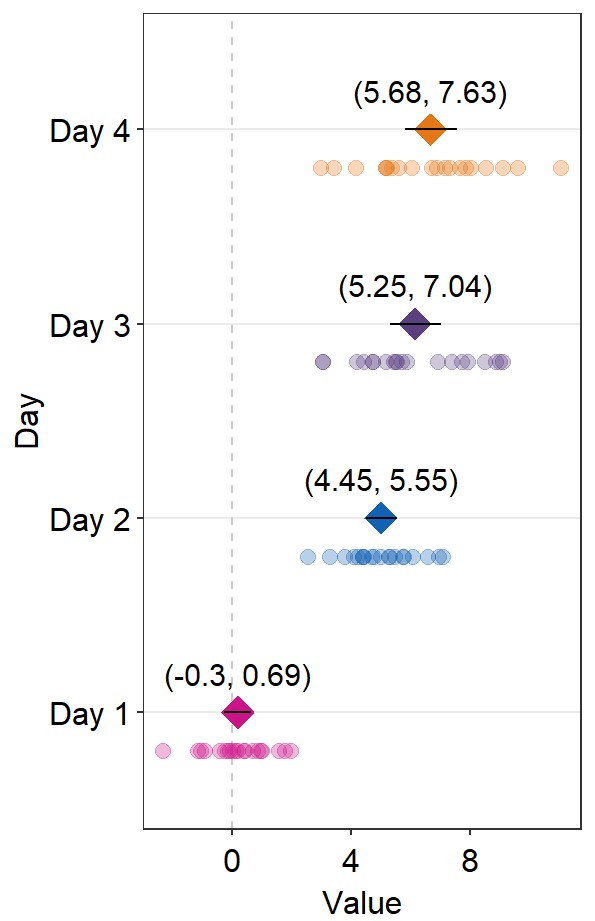
sm_hist() has many arguments.
histogramcan be used to show or not show the histogram.- The default is set to
histogram = TRUE.
- The default is set to
ggplot(data = data, aes(x=value, fill=day)) +
sm_hist(histogram = FALSE) densitycan be used to show or not show the density estimation plot.- The default is set to
density = TRUE.
- The default is set to
ggplot(data = data, aes(x=value, fill=day)) +
sm_hist(density = FALSE) rugcan be used to show or not show the rugs below the histogram.- The default is
rug = TRUE.
- The default is
ggplot(data = data, aes(x=value, fill=day)) +
sm_hist(rug = FALSE) borderscan summon the borders when set toborders = TRUE.- The default is
borders = FALSE.
ggplot(data = data, aes(x=value, fill=day)) +
sm_hist(borders = TRUE) 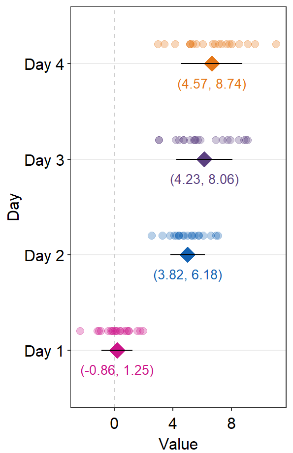
hist.paramsfeeds arguments togeom_histogram()that dictates the aesthetics of the histogram, such ascolor,fill,alphaandbinwidth.binwidthrefers to the width of the bins. It has to be included if the user wishes to writehist.params = list()to finely control the aesthetics of the histogram.
ggplot(data = data, aes(x=value, fill=day)) +
sm_hist(hist.params = list(color = 'black',
fill = sm_color('skyblue'),
alpha = 0.7,
binwidth = 1/4)) density.paramsfeeds arguments togeom_density()that dictates the aesthetics of the histogram, such ascolor,fillandalpha.
ggplot(data = data, aes(x=value, fill=day)) +
sm_hist(hist.params = list(color = 'black',
fill = sm_color('skyblue'),
alpha = 0.5,
binwidth = 1/4),
density.params = list(color = 'black',
size = 1,
linetype = 'dashed',
fill = 'transparent')) 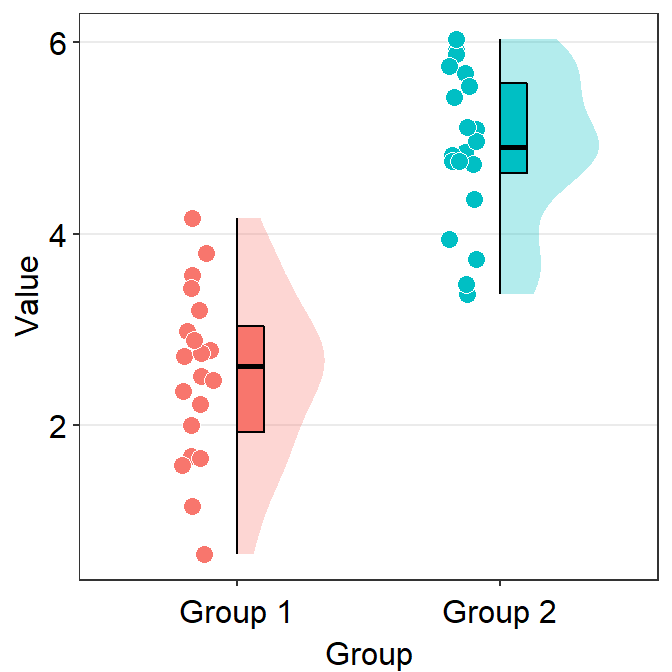
rug.paramsfeeds arguments togeom_rugto control the aesthetics of the rugs such ascolor,alphaandsize.
ggplot(data = data, aes(x=value, fill=day)) +
sm_hist(hist.params = list(color = 'black',
fill = sm_color('skyblue'),
alpha = 0.5,
binwidth = 1/4),
density.params = list(color = 'black',
size = 1,
linetype = 'dashed',
fill = 'transparent'),
rug.params = list(color = sm_color('skyblue'),
size = 0.5)) 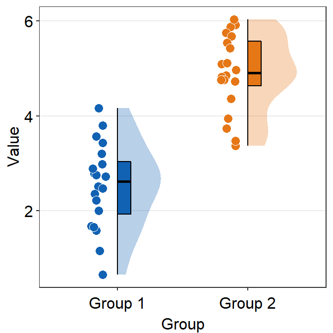
You can also plot the histogram across multiple conditions/groups by setting ggplot(aes(..., color = xx). We can demonstrate this using df, which has data across multiple groups.
legendsargument can be used to show the legend iflegends = TRUE.- The default is set to
legends = FALSE.
- The default is set to
df %>% ggplot(aes(x=value, fill=day, color = day)) +
sm_hist(hist.params = list(binwidth = 1/4, alpha = 0.3),
density.params = list(fill='transparent', size = 0.8),
rug.params = list(alpha = 0.8), legends = TRUE) +
scale_color_manual(values = sm_color('blue', 'orange')) +
scale_fill_manual(values = sm_color('blue', 'orange')) +
ggtitle('Histograms + rugs + kernel estimations of two groups') +
theme(plot.title= element_text(size = rel(0.85))) +
theme(legend.position = c(0.84,0.82),
legend.title = element_blank(),
legend.text = element_text(size = 11))13 Plotting the Contrast Sensitivity Function
For the next three chapters, we will use smCSF. Make sure you have downloaded it.
install.packages("devtools")
devtools::install_github('smin95/smCSF', force = TRUE)Also, we will use the data of achromatic contrast sensitivity from 51 normal observers from this paper (a subset of the entire dataset):
Kim, Y. J., Reynaud, A., Hess, R. F., & Mullen, K. T. (2017). A normative data set for the clinical assessment of achromatic and chromatic contrast sensitivity using a qCSF approach. Investigative ophthalmology & visual science, 58(9), 3628-3636.
Luckily, the data are publicly available. I have reorganized the data so that we could easily use them in the form of a data frame. Let’s load the data from online.
library(tidyverse)
library(smplot2)
library(smCSF)ACh <- read_csv('https://www.smin95.com/data_ACh.csv')head(ACh)## # A tibble: 6 x 4
## Subject Repetition SpatialFreq Sensitivity
## <chr> <dbl> <dbl> <dbl>
## 1 S1 1 0.25 23.8
## 2 S2 1 0.25 18.0
## 3 S3 1 0.25 14.2
## 4 S4 1 0.25 5.14
## 5 S5 1 0.25 16.0
## 6 S6 1 0.25 10.9There are four columns in this data frame:
First,
Subjectrefers to each participant. There are 51 participants total in the .csv file.Next,
Repetitionrefers to each repetition of the measurement The participants performed two repetitions of the contrast sensitivity measurement.SpatialFreqrefers to spatial frequency of the stimuli that were shown to test the observers’ contrast sensitivity. There are a total of 12 spatial frequencies.The
Sensitivitycolumn refers to the linear values of the contrast sensitivity.
13.1 Brief Introduction
The contrast sensitivity function (CSF) how the observer is sensitive to an image. This image could be large (low spatial frequency) or small (high spatal frequency). To obtain the CSF, the measurement test must measure the threshold. Threshold refers to the difference in stimulus magnitude between the states of presence and absence. If the observer can just barely discriminate between these two states of the visual stimulus, this can be described as the threshold for detection.
13.2 Data Visualization
First, let’s compute the average, standard errors and standard deviation using the dataset. It is recommended that the reader has read Chapters 5 and 6 already. Understanding of summarise(), filter(), mutate() and %>% is assumed.
The code below reorganizes the ACh dataset so that instead of containing the data of each subject, it now contains the averaged data across Repetition and SpatialFreq as well as their standard errors and standard deviations. We use mean() to compute the mean, sm_stdErr() the standard error, and sd() the standard deviation.
ACh_avg <- ACh %>%
group_by(Repetition, SpatialFreq) %>%
summarise(avgSens = mean(Sensitivity),
stdErrSens = sm_stdErr(Sensitivity),
stdDevSens = sd(Sensitivity))
ACh_avg## # A tibble: 24 x 5
## # Groups: Repetition [2]
## Repetition SpatialFreq avgSens stdErrSens stdDevSens
## <dbl> <dbl> <dbl> <dbl> <dbl>
## 1 1 0.25 12.6 0.743 5.31
## 2 1 0.35 14.7 0.777 5.55
## 3 1 0.49 18.6 0.993 7.09
## 4 1 0.68 23.7 1.22 8.71
## 5 1 0.94 28.7 1.36 9.68
## 6 1 1.31 32.0 1.40 9.99
## 7 1 1.83 32.4 1.43 10.2
## 8 1 2.54 29.6 1.39 9.93
## 9 1 3.54 24.3 1.22 8.70
## 10 1 4.93 18.1 0.960 6.85
## # ... with 14 more rowsLet’s create a variable that stores the data for each Repetition. Before we do that, however, it is important that we convert the data type of the Repetition column from <dbl> to <fct>, which refers from double to factor. Double refers to continuous data, whereas factor refers to categorical data.
ACh_avg$Repetition <- factor(ACh_avg$Repetition) # factor
ACh_avg1 <- ACh_avg %>% filter(Repetition == 1) # repetition 1
ACh_avg2 <- ACh_avg %>% filter(Repetition == 2) # repetition 2Let’s now plot the data for each repetition using ggplot2. Understanding of Chapters 1-4 is assumed.
ACh_avg1 %>% ggplot(aes(x = SpatialFreq, y = avgSens)) +
geom_point() +
sm_hgrid() +
xlab('Spatial frequency (c/deg)') +
ylab('Averaged sensitivity') +
ggtitle('Repetition 1 (n=51)')So far, this graph does not show the contrast sensitivity function, which has a rotund shape. Instead, if we connect the points, we get this plot instead.
ACh_avg1 %>% ggplot(aes(x = SpatialFreq, y = avgSens)) +
geom_point() +
geom_line() +
sm_hgrid() +
xlab('Spatial frequency (c/deg)') +
ylab('Averaged sensitivity') +
ggtitle('Repetition 1 (n=51)')
The function is still not a smooth, rotund shape. This is because it is standard to plot the contrast sensitivity function in log10 scales in both x and y axes. The code below shows the plot in the log scale.
ACh_avg1 %>% ggplot(aes(x = SpatialFreq, y = avgSens)) +
geom_point() +
geom_line() +
sm_hgrid() +
xlab('Spatial frequency (c/deg)') +
ylab('Averaged sensitivity') +
ggtitle('Repetition 1 (n=51)') +
scale_x_continuous(trans = 'log10') +
scale_y_continuous(trans = 'log10')This plot shows the averaged sensitivity for each spatial frequency during the first repetition. However, the contrast sensitivity function is still missing because this plot instead shows the plot that is connected between a pair of the points. To plot the contrast sensitivity function with the data, sm_CSF() is required.
ACh_avg1 %>% ggplot(aes(x = SpatialFreq, y = avgSens)) +
sm_CSF()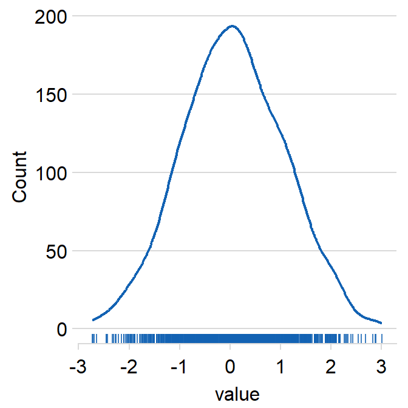
Notice that even if the data frame contains data in linear units, the plotted data from sm_CSF() are in log10 scales. It shows a nice, rotund shape that is typical of the contrast sensitivity function. The function can also plot the linear curve by setting sm_CSF(logXY = FALSE). The default is sm_CSF(logXY = TRUE).
ACh_avg1 %>% ggplot(aes(x = SpatialFreq, y = avgSens)) +
sm_CSF(logXY = FALSE)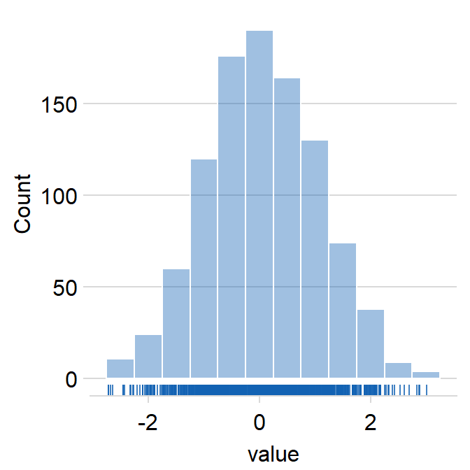
Now let’s plot a prettier contrast sensitivity function.
ACh_avg1 %>% ggplot(aes(x = SpatialFreq, y = avgSens)) +
sm_CSF(color = sm_color('wine')) +
geom_point(color = sm_color('darkred'), size = 3) +
sm_hgrid() +
xlab('Spatial frequency (c/deg)') +
ylab('Averaged sensitivity') +
ggtitle('Repetition 1 (n=51)') 
We can also plot the data using ACh_avg2, which contains data from the second repetition rather than first.
ACh_avg2 %>% ggplot(aes(x = SpatialFreq, y = avgSens)) +
sm_CSF(color = sm_color('lightgreen')) +
geom_point(color = sm_color('viridian'), size = 3) +
sm_hgrid() +
xlab('Spatial frequency (c/deg)') +
ylab('Averaged sensitivity') +
ggtitle('Repetition 2 (n=51)') 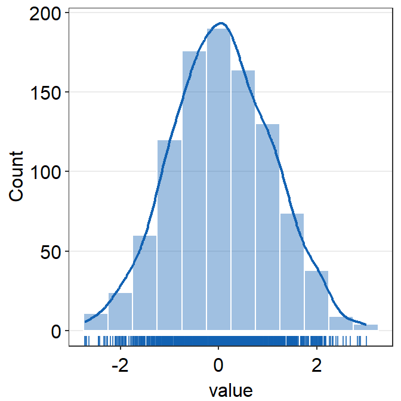
Notice that sm_CSF() is written first because the curve has to appear before the points (geom_point()); else, the points will be covered by the CSF curve. This example is shown below.
ACh_avg2 %>% ggplot(aes(x = SpatialFreq, y = avgSens)) +
geom_point(color = sm_color('viridian'), size = 3) +
sm_CSF(color = sm_color('lightgreen')) +
sm_hgrid() +
xlab('Spatial frequency (c/deg)') +
ylab('Averaged sensitivity') +
ggtitle('Repetition 2 (n=51)') The curve appears later in this plot, so it covers some overlapping points.
smCSF also offers a function that fill the area of the CSF curve. This function is sm_areaCSF(). The default is set to plot the area in log10 scales, sm_areaCSF(logXY = TRUE).
ACh_avg1 %>% ggplot(aes(x = SpatialFreq, y = avgSens)) +
sm_areaCSF() +
sm_CSF() To plot the linear CSF and its area, logXY = FALSE has to be set FALSE in both sm_areaCSF() and sm_CSF(). The functions of smCSF have defaults logXY = TRUE, therefore, it is recommended that the user uploads a data frame that contains the linear data of spatial frequencies and contrast sensitivities. The functions then will convert them into log scale by default.
ACh_avg1 %>% ggplot(aes(x = SpatialFreq, y = avgSens)) +
sm_areaCSF(logXY = FALSE) +
sm_CSF(logXY = FALSE) We can make the area plot prettier.
ACh_avg2 %>% ggplot(aes(x = SpatialFreq, y = avgSens)) +
sm_areaCSF(fill = sm_color('lightgreen'), alpha = 0.5) +
sm_CSF(color = sm_color('viridian')) +
sm_hgrid() +
xlab('Spatial frequency (c/deg)') +
ylab('Averaged sensitivity') +
ggtitle('Repetition 2 (n=51)') +
scale_y_log10(limits = c(1,100)) +
annotate('text', x = 0.9, y = 1.3, label = 'Area under Log CSF')You might get a warning that says Scale for 'y' is already present. Adding another scale for 'y', which will replace the existing scale. You can ignore this warning and not be worried about it. This is because we used the function scale_y_log10() on top of sm_CSF(), which actually calls forth the function scale_y_continuous() to convert the plot into log scales. Hence, there are two functions that serve the same purpose here, so the warning message is printed.
The smCSF package also offers a function that draws a ribbon shade to denote standard error or standard deviation. This function works exactly the same as geom_ribbon(). It requires the uses to specify ymin and ymax. The example below plots standard deviation using sm_ribbonCSF(), where ymin = avgSens - stdDevSens and ymax = avgSens + stdDevSens. As before, its default is logXY = TRUE. Therefore, even if ACh_avg2 contains data in linear units, the ribbon shade that is generated by sm_ribbonCSF() will be in log unit.
ACh_avg1 %>% ggplot(aes(x = SpatialFreq, y = avgSens)) +
sm_ribbonCSF(aes(ymin = avgSens - stdDevSens,
ymax = avgSens + stdDevSens)) +
sm_CSF() +
scale_y_log10(limits = c(1,100)) 
Let’s make the plot prettier using smplot.
ACh_avg1 %>% ggplot(aes(x = SpatialFreq, y = avgSens)) +
sm_ribbonCSF(aes(ymin = avgSens - stdDevSens,
ymax = avgSens + stdDevSens),
fill = sm_color('wine'), alpha = 0.4) +
sm_CSF(color = sm_color('darkred')) +
xlab('Spatial frequency (c/deg)') +
ylab('Averaged sensitivity') +
ggtitle('Repetition 1 (n=51)') +
sm_hgrid() +
scale_y_log10(limits = c(1,100)) You can also shade standard error instead, but the ribbon is barely visible.
ACh_avg2 %>% ggplot(aes(x = SpatialFreq, y = avgSens)) +
sm_ribbonCSF(aes(ymin = avgSens - stdErrSens,
ymax = avgSens + stdErrSens)) +
sm_CSF() +
scale_y_log10(limits = c(1,100)) As practice, let’s plot the averaged data across all repetitions.
ACh_avg_final <- ACh %>% group_by(SpatialFreq) %>%
summarise(avgSens = mean(Sensitivity),
stdErrSens = sm_stdErr(Sensitivity),
stdDevSens = sd(Sensitivity))
head(ACh_avg_final)## # A tibble: 6 x 4
## SpatialFreq avgSens stdErrSens stdDevSens
## <dbl> <dbl> <dbl> <dbl>
## 1 0.25 13.2 0.536 5.41
## 2 0.35 15.2 0.568 5.74
## 3 0.49 19.1 0.698 7.05
## 4 0.68 24.3 0.836 8.44
## 5 0.94 29.4 0.938 9.48
## 6 1.31 33.0 0.977 9.87Here is the new data frame ACh_avg_final.
ACh_avg_final %>% ggplot(aes(x = SpatialFreq, y = avgSens)) +
sm_ribbonCSF(aes(ymin = avgSens - stdDevSens,
ymax = avgSens + stdDevSens),
fill = sm_color('skyblue'), alpha = 0.25) +
sm_CSF(color = sm_color('blue'),
alpha = 0.4) +
xlab('Spatial frequency (c/deg)') +
ylab('Averaged sensitivity') +
ggtitle('Contrast Sensitivity (n=51)') +
sm_hgrid() +
geom_point(color = sm_color('blue'), size = 2.5) +
scale_y_log10(limits = c(1,100)) The standard deviation seems to be still broad.
13.3 Facetting the Contrast Sensitivity Functions
To facet means to split the plot into multiple plots based on a categorical variable (i.e., factor). We will facet the contrast sensitivity function plot above (the blue curve) into two panels based on two repetitions (red and green below).
To facet the plot, you need to have a data frame that has data with a column that specifies the categorical variable. For instance, let’s look at the data frame ACh_avg.
ACh_avg## # A tibble: 24 x 5
## # Groups: Repetition [2]
## Repetition SpatialFreq avgSens stdErrSens stdDevSens
## <fct> <dbl> <dbl> <dbl> <dbl>
## 1 1 0.25 12.6 0.743 5.31
## 2 1 0.35 14.7 0.777 5.55
## 3 1 0.49 18.6 0.993 7.09
## 4 1 0.68 23.7 1.22 8.71
## 5 1 0.94 28.7 1.36 9.68
## 6 1 1.31 32.0 1.40 9.99
## 7 1 1.83 32.4 1.43 10.2
## 8 1 2.54 29.6 1.39 9.93
## 9 1 3.54 24.3 1.22 8.70
## 10 1 4.93 18.1 0.960 6.85
## # ... with 14 more rowsWe see that the first column of Ach_avg has a column named Repetition which stores whether the given data are from the first or second repetition. To see all the unique levels of Repetition, we can use the function unique().
unique(ACh_avg$Repetition)## [1] 1 2
## Levels: 1 2To facet a plot using ggplot2, the function facet_wrap() has to be used.
ACh_avg %>%
ggplot(aes(x = SpatialFreq, y = avgSens)) +
sm_CSF() +
facet_wrap(~ Repetition) The argument inside facet_wrap has to include the tilde (~). The right side the tilde (~) should be the name of the categorical variable by which you wish to facet the plot. If the variable however happens to be continuous, facet_wrap() would not work properly.
ACh_avg %>%
ggplot(aes(x = SpatialFreq, y = avgSens)) +
sm_CSF() +
facet_wrap(~ stdErrSens) 
However, I do not often use facet_wrap() because the plot often ends up not being pretty. Let’s try to make it prettier.
ACh_avg %>%
ggplot(aes(x = SpatialFreq, y = avgSens,
group = Repetition, color = Repetition,
fill = Repetition)) +
sm_ribbonCSF(aes(ymin = avgSens - stdDevSens,
ymax = avgSens + stdDevSens), alpha = 0.4) +
sm_CSF(alpha = 0.4) +
sm_hgrid() +
geom_point(size = 2.5) +
scale_fill_manual(values = sm_color('wine','lightgreen')) +
scale_color_manual(values = sm_color('darkred','viridian')) +
xlab('Spatial frequency (c/deg)') +
ylab('Averaged sensitivity') +
facet_wrap(~ Repetition) +
scale_y_log10(limits = c(1,100))Personally, I do not like the grey-filled header of each panel. Since I personally will find myself repeatedly bypassing the default grey color into a color of my choice, I have created the function myself sm_facet_header() as part of the smCSF package.
ACh_avg %>%
ggplot(aes(x = SpatialFreq, y = avgSens,
group = Repetition, color = Repetition,
fill = Repetition)) +
sm_ribbonCSF(aes(ymin = avgSens - stdDevSens,
ymax = avgSens + stdDevSens), alpha = 0.4) +
sm_CSF(alpha = 0.4) +
sm_hgrid() +
geom_point(size = 2.5) +
scale_fill_manual(values = sm_color('wine','lightgreen')) +
scale_color_manual(values = sm_color('darkred','viridian')) +
xlab('Spatial frequency (c/deg)') +
ylab('Averaged sensitivity') +
facet_wrap(~ Repetition) +
scale_y_log10(limits = c(1,100)) +
sm_facet_header()Now the title of each plot has been bolded and the filled color is white. I personally think that this plot is a lot cleaner than the default one.
Next, I wish to change the titles of each panel because 1 and 2 are not descriptive. To do so, we need to use the argument labeller within facet_wrap() to specify the title of each panel.
ACh_avg %>%
ggplot(aes(x = SpatialFreq, y = avgSens,
group = Repetition, color = Repetition,
fill = Repetition)) +
sm_ribbonCSF(aes(ymin = avgSens - stdDevSens,
ymax = avgSens + stdDevSens), alpha = 0.4) +
sm_CSF(alpha = 0.4) +
sm_hgrid() +
geom_point(size = 2.5) +
scale_fill_manual(values = sm_color('wine','lightgreen')) +
scale_color_manual(values = sm_color('darkred','viridian')) +
xlab('Spatial frequency (c/deg)') +
ylab('Averaged sensitivity') +
facet_wrap(~ Repetition,
labeller = as_labeller(c('1' = 'Repetition 1',
'2' = 'Repetition 2'))) +
scale_y_log10(limits = c(1,100)) +
sm_facet_header(font_size=11) 
We use the function as_labeller() as part of the argument labeller() inside facet_wrap() to specify that factor level 1 should be shown as Repetition 1 and 2 as Repetition 2.
We can also change the number of rows and columns using facet_wrap(). Lets make a data frame that has 4 repetitions instead of 2.
set.seed(1)
spatFreqNum <- length(unique(ACh_avg$SpatialFreq))
ACh_avg_4rep <- rbind(ACh_avg,ACh_avg)
ACh_avg_4rep$Repetition <- rep(1:4,each=spatFreqNum)
ACh_avg_4rep[25:nrow(ACh_avg_4rep), 3:5] <- ACh_avg_4rep[25:nrow(ACh_avg_4rep), 3:5] + round(rnorm(24),1)
ACh_avg_4rep$Repetition <- factor(ACh_avg_4rep$Repetition)We can specify the number of columns (ex. ncol = 2) and rows (ex. nrow = 2) inside the function facet_wrap(), as shown in the example below.
ACh_avg_4rep %>%
ggplot(aes(x = SpatialFreq, y = avgSens,
group = Repetition, color = Repetition,
fill = Repetition,
alpha = Repetition)) +
sm_ribbonCSF(aes(ymin = avgSens - stdDevSens,
ymax = avgSens + stdDevSens)) +
sm_CSF(alpha = 0.4) +
sm_hgrid() +
geom_point(alpha = 1, size = 2.5) +
scale_fill_manual(values = sm_color('wine','lightgreen','yelloworange', 'crimson')) +
scale_color_manual(values = sm_color('darkred','viridian', 'orange','red')) +
scale_alpha_manual(values = c(0.4,0.4,0.3,0.1)) +
xlab('Spatial frequency (c/deg)') +
ylab('Averaged sensitivity') +
facet_wrap(~ Repetition, nrow=2, ncol=2,
labeller = as_labeller(c('1' = 'Repetition 1',
'2' = 'Repetition 2',
'3' = 'Repetition 3',
'4' = 'Repetition 4'))) +
scale_y_log10(limits = c(1,100)) +
sm_facet_header(font_size=11)Notice that when facet_wrap() is used, there is no need to create variable for each plot like we have done in Chapter 5 and use sm_common_axis(). The preference can vary depending on the user. Rather than using facet_wrap(), however, I still prefer to store each plot separately so that I can have freedom to decide where to place each panel wherever I want using sm_common_axis().
Also, make sure that when you combine the plots using facet_wrap() you set the size of the figure properly within the save_plot() function or else the figure will appear to be too crowded. You can use base_height and base_width arguments within facet_wrap().
Another issue with plotting each contrast sensitivity function per panel is that it is visually difficult to compare whether the functions between the panels are different. One way to overcome this problem is to plot all the plots together. In this case, legend is necessary, which can be generated using sm_hgrid(legends = TRUE). Let’s use the data frame ACh_avg which has two levels in the Repetition column.
ACh_avg %>%
ggplot(aes(x = SpatialFreq, y = avgSens,
group = Repetition, color = Repetition,
fill = Repetition)) +
sm_ribbonCSF(aes(ymin = avgSens - stdDevSens,
ymax = avgSens + stdDevSens), alpha = 0.2) +
sm_CSF(alpha = 0.4) +
sm_hgrid(legends = T) +
scale_fill_manual(values = sm_color('wine','lightgreen')) +
scale_color_manual(values = sm_color('darkred','viridian')) +
xlab('Spatial frequency (c/deg)') +
ylab('Averaged sensitivity') +
scale_y_log10(limits = c(1,100)) +
theme(legend.position = c(0.8,0.2)) +
ggtitle('Achromatic CSF (n=51)')We see that these two curves are nearly identical, except that the green curve is uniformly higher than the red curve.
In the next chapter, we will discuss about some techniques on how to analyze contrast sensitivity data.
14 Area under Curve, AULCSF and R2 of the CSF
As in the previous chapter, we will use data of achromatic contrast sensitivity from 51 normal observers from this paper (a subset of the entire dataset) and the smCSF package:
Kim, Y. J., Reynaud, A., Hess, R. F., & Mullen, K. T. (2017). A normative data set for the clinical assessment of achromatic and chromatic contrast sensitivity using a qCSF approach. Investigative ophthalmology & visual science, 58(9), 3628-3636.
Let’s load the necessary packages.
library(tidyverse)
library(smplot2)
library(smCSF)ACh <- read_csv('https://www.smin95.com/data_ACh.csv')head(ACh)## # A tibble: 6 x 4
## Subject Repetition SpatialFreq Sensitivity
## <chr> <dbl> <dbl> <dbl>
## 1 S1 1 0.25 23.8
## 2 S2 1 0.25 18.0
## 3 S3 1 0.25 14.2
## 4 S4 1 0.25 5.14
## 5 S5 1 0.25 16.0
## 6 S6 1 0.25 10.9There are four columns in this data frame:
First,
Subjectrefers to each participant. There are 51 participants total in the .csv file.Next,
Repetitionrefers to each repetition of the measurement The participants performed two repetitions of the contrast sensitivity measurement.SpatialFreqrefers to spatial frequency of the stimuli that were shown to test the observers’ contrast sensitivity. There are a total of 12 spatial frequencies.The
Sensitivitycolumn refers to the linear values of the contrast sensitivity.
14.1 Area under a Curve
Area under a curve under the contrast sensitivity function (CSF) as an index of visual performance or sensitivity. The higher the areal measure, the better the visual performance. There are two ways to calculate the area: 1) trapezoidal integration of the contrast sensitivity data as a function of spatial frequency, and 2) area under the fitted log CSF (AULCSF).
Let’s create a data frame ACh_avg that contains the averaged contrast sensitivity data for each repetition and spatial frequency across 51 subjects.
ACh_avg <- ACh %>%
group_by(Repetition, SpatialFreq) %>%
summarise(avgSens = mean(Sensitivity),
stdErrSens = sm_stdErr(Sensitivity),
stdDevSens = sd(Sensitivity))
ACh_avg## # A tibble: 24 x 5
## # Groups: Repetition [2]
## Repetition SpatialFreq avgSens stdErrSens stdDevSens
## <dbl> <dbl> <dbl> <dbl> <dbl>
## 1 1 0.25 12.6 0.743 5.31
## 2 1 0.35 14.7 0.777 5.55
## 3 1 0.49 18.6 0.993 7.09
## 4 1 0.68 23.7 1.22 8.71
## 5 1 0.94 28.7 1.36 9.68
## 6 1 1.31 32.0 1.40 9.99
## 7 1 1.83 32.4 1.43 10.2
## 8 1 2.54 29.6 1.39 9.93
## 9 1 3.54 24.3 1.22 8.70
## 10 1 4.93 18.1 0.960 6.85
## # ... with 14 more rowsAs in the previous chapter, lets store the data into proper data frames for each repetition.
ACh_avg$Repetition <- factor(ACh_avg$Repetition) # factor
ACh_avg1 <- ACh_avg %>% filter(Repetition == 1) # repetition 1
ACh_avg2 <- ACh_avg %>% filter(Repetition == 2) # repetition 2Here is an example of trapezoidal integration of the contrast sensitivity function (i.e., AUC). AUC is an abbreviation of area under a curve from trapezoidal integration.
ACh_avg2 %>% ggplot(aes(x = SpatialFreq, y = avgSens)) +
geom_area(fill = sm_color('lightgreen'), alpha = 0.5) +
geom_point(color = sm_color('viridian')) +
geom_line(color = sm_color('viridian')) +
sm_hgrid() +
xlab('Spatial frequency (c/deg)') +
ylab('Averaged sensitivity') +
ggtitle('Repetition 2 (n=51)') +
scale_x_continuous(trans = 'log10') +
scale_y_continuous(trans = 'log10') +
scale_y_log10(limits = c(1,100)) +
annotate('text', x = 0.6, y = 1.3, label = 'Trapezoidal AUC')Here is an example of the AULCSF.
ACh_avg2 %>% ggplot(aes(x = SpatialFreq, y = avgSens)) +
sm_areaCSF(fill = sm_color('lightgreen'), alpha = 0.5) +
sm_CSF(color = sm_color('viridian'), size = .8) +
geom_point(color = sm_color('viridian')) +
sm_hgrid() +
xlab('Spatial frequency (c/deg)') +
ylab('Averaged sensitivity') +
ggtitle('Repetition 2 (n=51)') +
scale_y_log10(limits = c(1,100)) +
annotate('text', x = 0.4, y = 1.3, label = 'AULCSF')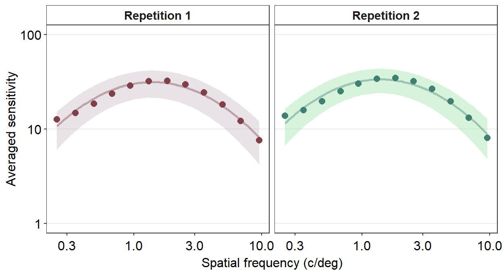
Notice that these that AUC and AULCSF are slightly different. AUC denotes the area that is enclosed by the lines that connect each point. AULCSF refers to the area that is enclosed by the fitted contrast sensitivity function. The astute reader may realize that if the fit of the contrast sensitivity function is poor, then the AULCSF might not be accurate. Hence, it might be necessary to prove that the CSF fit is robust with the given data. To avoid these hassles, some researchers use AUC instead. Nevertheless, smCSF offers functions that compute both AUC and AULCSF.
The higher the AUC and AULCSF are, the higher the overall sensitivity of the observer. Therefore, when potential treatment is being studied, it is of interest to see an increase in AUC and AULCSF in the visually impaired after their treatment.
14.2 sm_trapz(), sm_AULCSF() and sm_r2()
This section is identical to what we have seen in Chapter 6. For those who have read Chapter 6, the only difference is that these AUCs should be in log scales (both x and y scales) in the context of contrast sensitivity.
Recall that ACh_avg contains averaged contrast sensitivity for each spatial frequency across 51 observers for the first repetition.
ACh_avg ## # A tibble: 24 x 5
## # Groups: Repetition [2]
## Repetition SpatialFreq avgSens stdErrSens stdDevSens
## <fct> <dbl> <dbl> <dbl> <dbl>
## 1 1 0.25 12.6 0.743 5.31
## 2 1 0.35 14.7 0.777 5.55
## 3 1 0.49 18.6 0.993 7.09
## 4 1 0.68 23.7 1.22 8.71
## 5 1 0.94 28.7 1.36 9.68
## 6 1 1.31 32.0 1.40 9.99
## 7 1 1.83 32.4 1.43 10.2
## 8 1 2.54 29.6 1.39 9.93
## 9 1 3.54 24.3 1.22 8.70
## 10 1 4.93 18.1 0.960 6.85
## # ... with 14 more rowsTo compute the trapezoidal AUC, we can use the function sm_trapz().
sm_trapz(ACh_avg1$SpatialFreq, ACh_avg1$avgSens)## [1] 2.081833The difference between sm_trapz() and sm_auc() is that sm_trapz() automatically converts the x and y vectors into log10 scales. This default can be overcome when logXY = FALSE. When, logXY = FALSE, sm_trapz() becomes identical to sm_auc(). sm_trapz() has been created as a separate function to create a convenient and straightforward workflow for those who wish to analyze the contrast sensitivity data.
In addition, to compute the trapezoidal AUC, we can use the function sm_AULCSF().
sm_AULCSF(ACh_avg1$SpatialFreq, ACh_avg1$avgSens)## [1] 2.089264Notice that the AULCSF is very similar to AUC. This suggests that the CSF fit (as generated by sm_CSF()) is very good. This can verified by computing R2 (R-squared), which ranges from 0 (worst model fit) to 1 (best model fit), using sm_r2().
sm_r2(ACh_avg1$SpatialFreq, ACh_avg1$avgSens)## [1] 0.9672We see that R2 of the CSF fit is 0.9672, which is considered excellent. Note that sm_r2() is a function specific for CSF fit only, and the x and y arguments should contain data in linear units, not log units.
To visualize what R2 captures, we need to understand residuals, which is the difference or distance between the actual data and the predicted data from the given fit, such as the CSF.
ACh_avg1 %>% ggplot(aes(x = SpatialFreq, y = avgSens)) +
sm_CSF(color = sm_color('wine'), linetype = 'dashed') +
geom_point(color = sm_color('darkred')) +
sm_hgrid() +
xlab('Spatial frequency (c/deg)') +
ylab('Averaged sensitivity') +
ggtitle('Repetition 1 (n=51)')If the residual is very low, then the distance between the actual and predicted data should be close to 0. We see that the residual is low when the spatial frequency is between 3 and 10 c/deg. In this case, the general fit is very faithful to the original data, so the residual is low and R2 is high (close to 1). In sum, the lower the residuals, the higher the R2, which ranges from 0 to 1.
14.3 Calculating area and R2 of all subjects, groups and conditions
Now that we know how to calculate AUC, AULCSF and R2 for each subject, let’s calculate slopes of our entire dataset.
ACh## # A tibble: 1,224 x 4
## Subject Repetition SpatialFreq Sensitivity
## <chr> <dbl> <dbl> <dbl>
## 1 S1 1 0.25 23.8
## 2 S2 1 0.25 18.0
## 3 S3 1 0.25 14.2
## 4 S4 1 0.25 5.14
## 5 S5 1 0.25 16.0
## 6 S6 1 0.25 10.9
## 7 S7 1 0.25 8.41
## 8 S8 1 0.25 10.5
## 9 S9 1 0.25 9.06
## 10 S10 1 0.25 3.57
## # ... with 1,214 more rowsWe see that there are 51 subjects total, each of which has completed two repetitions (i.e., conditions). So there are 102 slopes to calculate! Does that mean we need to use sm_trapz(), sm_AULCSF() and sm_r2() 102 times?
As the reader might expect from the previous chapters, the answer is no. smCSF has a functions sm_trapz_list(), sm_AULCSF_list() and sm_r2_list() that return a data frame of AUCs, AULCSFs and R2s, respectively. They works similarly to sm_auc_list() and sm_slope_list() from smplot.
data= this argument requires the variable that stores the data frame. In our case, it isACh. It is recommended that the data are in linear units.subjects= this argument requires the name of the column of the data frame that contains subjects. It must strings, ex.'Subject', notSubject.groups= this argument requires the name of the column of the data frame that contains each group. In this example, there is no group. An example would beGroupcolumn that contains two groups:NormalandAmblyopia.conditions= this argument requires name of the column of the data frame that contains each condition. In our example, the two conditions are1and2from theRepetitioncolumn.x= this argument requires the name of the column of the data frame that contains the x-axis points from which the AUC can be calculated. In our case, these are values from theSpatialFreqcolumn ofACh. It must strings, ex.'SpatialFreq', notSpatialFreq.values= this argument requires the name of the column of the data frame that contains the actual data, which are the y-axis points from which the AUC can be calculated. In our case, it is the change in contrast balance ratio. It must strings, ex.'Sensitivity', notSensitivity.logXY(forsm_trapz_list()andsm_AULCSF_list()) = thus argument’s default issm_trapz_list(logXY = TRUE)andsm_AULCSF_list(logXY = TRUE), so it computes the log10 units (xandvaluesvector) of AUC and AULCSF. WhenlogXY = FALSE, it computes the linear units (xandvaluesvector) AUC and AULCSF.
Let’s calculate the AUCs first. We can store the results from sm_trapz_list() into a new variable. I will call the new variable trapz_df.
trapz_df <- sm_trapz_list(subjects = 'Subject',
conditions = 'Repetition',
x = 'SpatialFreq',
values = 'Sensitivity',
data = ACh)## [1] "Trapezoid AUC = Sensitivity * SpatialFreq"head(trapz_df) # first 6 rows## Subject Repetition AUC_Sensitivity
## 1 S1 1 2.299290
## 2 S1 2 2.032390
## 3 S2 1 2.246943
## 4 S2 2 2.215784
## 5 S3 1 1.973220
## 6 S3 2 2.204566Likewise, we can store the results from sm_AULCSF_list() in a new variable. I will call the new variable aulcsf_df.
aulcsf_df <- sm_AULCSF_list(subjects = 'Subject',
conditions = 'Repetition',
x = 'SpatialFreq',
values = 'Sensitivity',
data = ACh)## [1] "AULCSF = Sensitivity * SpatialFreq"head(aulcsf_df) # first 6 rows## Subject Repetition AULCSF
## 1 S1 1 2.307217
## 2 S1 2 2.038921
## 3 S2 1 2.254705
## 4 S2 2 2.222592
## 5 S3 1 1.979206
## 6 S3 2 2.214169Finally, we can store the results from sm_r2_list() in a new variable. I will call the new variable r2_df`.
r2_df <- sm_r2_list(subjects = 'Subject',
conditions = 'Repetition',
x = 'SpatialFreq',
values = 'Sensitivity',
data = ACh)## [1] "R2 (0-worst, 1-best) for each subject"head(r2_df) # first 6 rows## Subject Repetition R2
## 1 S1 1 0.8605
## 2 S1 2 1.0000
## 3 S2 1 0.9086
## 4 S2 2 0.8731
## 5 S3 1 0.7505
## 6 S3 2 0.9947We see that R2 is very good except for few observers in certain repetitions. Let’s see how many rows of the data frame contains R2 less than 0.75.
ind <- which(r2_df$R2 < 0.75)
length(ind)## [1] 8r2_df[ind,]## Subject Repetition R2
## 11 S6 1 0.5294
## 18 S9 2 0.6518
## 29 S15 1 0.5664
## 61 S31 1 0.6935
## 66 S33 2 0.6041
## 78 S39 2 0.5018
## 88 S44 2 0.7240
## 92 S46 2 0.5190Out of 102 rows of the R2s, only 8 of them contain poor R2. I think the contrast sensitivity function fit is acceptable to model the dataset of achromatic sensitivity in 51 normal observers.
14.4 Case Study
If one is interested in seeing whether a clinical treatment can improve the overall contrast sensitivity of the visually impaired, one can do so by comparing the area (AUC or AULCSF) before and after the treatment.
Let’s generate some fake data with ACh. We will create a new column using mutate() by creating a new column BeforeAfter, which replaces 1 with Before and 2 with After to denote before and after receiving clinical treatment. Since BeforeAfter is derived from the Repetition column, it is a <fct> column, as it is so with the Repetition column. This new data frame is stored in the variable named ACh1. We assume that the 51 subjects are visually impaired patients who received clinical treatment for visual improvement.
ACh$Repetition <- factor(ACh$Repetition)
ACh1 <- ACh %>% mutate(BeforeAfter = fct_recode(Repetition,
'Before' = '1',
'After' = '2')) %>%
select(-Repetition)Now, lets increase the values from the Sensitivity column in rows that have BeforeAfter == After using positive random numbers from a normal distribution that has a mean of 31 and a standard deviation of 35 using rnorm().
set.seed(33)
ind <- which(ACh1$BeforeAfter == 'After')
ACh1[ind,]$Sensitivity <- ACh1[ind,]$Sensitivity + abs(rnorm(length(ind), 31, 35))Now let’s calculate both the trapezoidal AUC and AULCSF and using sm_trapz_list() and sm_AULCSF_list(), both of which have defaults logXY = TRUE.
trapz_df <- sm_trapz_list(subjects = 'Subject',
conditions = 'BeforeAfter',
x = 'SpatialFreq',
values = 'Sensitivity',
data = ACh1)## [1] "Trapezoid AUC = Sensitivity * SpatialFreq"head(trapz_df) # first 6 rows## Subject BeforeAfter AUC_Sensitivity
## 1 S1 Before 2.299290
## 2 S1 After 2.867173
## 3 S2 Before 2.246943
## 4 S2 After 2.817482
## 5 S3 Before 1.973220
## 6 S3 After 2.856290aulcsf_df <- sm_AULCSF_list(subjects = 'Subject',
conditions = 'BeforeAfter',
x = 'SpatialFreq',
values = 'Sensitivity',
data = ACh1)## [1] "AULCSF = Sensitivity * SpatialFreq"head(aulcsf_df) # first 6 rows## Subject BeforeAfter AULCSF
## 1 S1 Before 2.307217
## 2 S1 After 2.874242
## 3 S2 Before 2.254705
## 4 S2 After 2.824033
## 5 S3 Before 1.979206
## 6 S3 After 2.849016Now let’s plot a bar graph using sm_bar() that compares both the trapezoidal AUCs and AULCSFs between before and after the visually impaired patients have received the clinical treatment.
trapz_df %>% ggplot(aes(x = BeforeAfter, y = AUC_Sensitivity,
color = BeforeAfter)) +
sm_bar(point.params = list(alpha=0.3, size=2)) +
scale_color_manual(values = sm_palette(2)) +
scale_y_continuous(limits = c(0,4.5))aulcsf_df %>% ggplot(aes(x = BeforeAfter, y = AULCSF,
color = BeforeAfter)) +
sm_bar(point.params = list(alpha=0.3, size=2)) +
scale_color_manual(values = sm_palette(2)) +
scale_y_continuous(limits = c(0,4.5)) 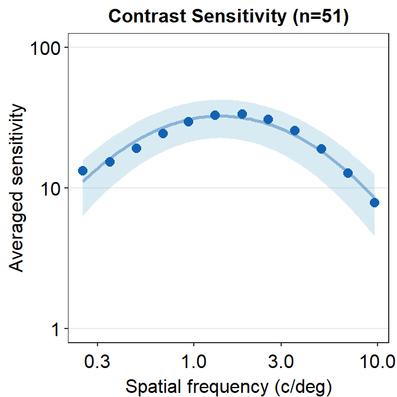
Both graphs suggest that the visual improvement has brought a large improvement of the overall contrast sensitivity in the patients who received the visual treatment. Chapter 8 Basic Statistics covers some methods to analyze data, and the reader can attempt to use the concepts in the previous chapter to analyze whether these differences from the simulated data are statistically significant.
Instead of focusing on the overall sensitivity of the observers, one can focus on observing whether the sensitivity of the high-spatial frequency range has improved after receiving the treatment. This, however, requires an understanding of the parameters that are used to fit the contrast sensitivity function. We will discuss these parameters in the next chapter.
15 Understanding the Contrast Sensitivity Function
In this section, the model that is used to fit the contrast sensitivity function (CSF) in sm_CSF() is discussed in detail. If readers decide to use smCSF, it is necessary to understand and report these details on their manuscripts.
15.1 Contrast Sensitivity Function Model
The model that is used to fit CSF in sm_CSF() employs this formula below. It also referred to as the truncated log-parabola model of the contrast sensitivity function (Kim et al., 2017)
\(S'(f) = log_{10}(\gamma_{max}) - \kappa\left(\frac{log_{10}(f) - log_{10}(f_{max})}{\beta'/2}\right)^{2}\), where \(\kappa = log_{10}(2)\) and \(\beta' = log_{10}(2\beta)\)
\(S(f) = log_{10}(\gamma_{max}) - \delta\), if \(f < f_{max}\) and \(S'(f) < log_{10}(\gamma_{max}) - \delta\)
\(S(f) = S'(f)\) when \(f > f_{max}\)
There are four parameters in the model. First, the peak gain \(\gamma_{max}\) denotes the peak sensitivity of the contrast sensitivity function. Second, the peak spatial frequency \(f > f_{max}\) essentially refers to the region of the x-axis of the CSF where the peak sensitivity \(\gamma_{max}\) is located. It can also be thought of as the center of the (log) contrast sensitivity function. Third, the bandwidth \(\beta\) describes the width of the contrast sensitivity function. This width is measured at the half of the maximum sensitivity \(\gamma_{max}\). Moreover, the truncation value \(\delta\) is a factor that makes sure that the contrast sensitivity function is asymmetric. This factor does not have a huge importance.
Finally, there is another parameter, known as the cutoff spatial frequency \(f_{c}\). It is the spatial frequency where the log-sensitivity is 0 (linear sensitivity = 1) Here is the equation to calculate \(f_{c}\):
\(f_{c} = f_{max}*10^{\frac{\beta'}{2}\sqrt\frac{log_{10}(\gamma_{max})}{\kappa}}\)
sm_params calculates all of these parameters automatically.
As I have already stated, if the reader decides to use smCSF, it is important to mention in their reports about the parameters and the equations, as well as to understand them.
15.2 Understanding sm_CSF()
If the user provides linear data of spatial frequency and contrast sensitivity, sm_CSF() can appear to magically plot the contrast sensitivity function with a very good fit as demonstrated below.
library(tidyverse)
library(smplot2)
library(smCSF)
ACh <- read_csv('https://www.smin95.com/data_ACh.csv')ACh1 <- ACh %>%
group_by(SpatialFreq) %>%
summarise(avgSens = mean(Sensitivity),
stdErrSens = sm_stdErr(Sensitivity),
stdDevSens = sd(Sensitivity))
ACh1## # A tibble: 12 x 4
## SpatialFreq avgSens stdErrSens stdDevSens
## <dbl> <dbl> <dbl> <dbl>
## 1 0.25 13.2 0.536 5.41
## 2 0.35 15.2 0.568 5.74
## 3 0.49 19.1 0.698 7.05
## 4 0.68 24.3 0.836 8.44
## 5 0.94 29.4 0.938 9.48
## 6 1.31 33.0 0.977 9.87
## 7 1.83 33.6 0.996 10.1
## 8 2.54 30.8 0.970 9.80
## 9 3.54 25.4 0.856 8.64
## 10 4.93 18.9 0.681 6.88
## 11 6.87 12.7 0.513 5.19
## 12 9.57 7.81 0.381 3.85ACh1 %>% ggplot(aes(x = SpatialFreq, y = avgSens)) +
sm_CSF()
Notice that ACh1 does not contain any predicted values from the truncated log-parabola model of the CSF. And yet, somehow, sm_CSF() manages to plot the predicted values from the model with the given data, rather than the points of the actual data themselves. Let’s walk through these steps to understand what is happening behind the scenes.
15.2.1 sm_params()
sm_params() returns the four main parameters of the model that result in the lowest difference (i.e., residual sum of squares = RSS) between the fitted values \(\hat{y_{i}}\) and the actual data (\(y_{i}\), linear data). The fitted values \(\hat{y_{i}}\) are the ones that result from plugging in four parameters into the formulas of the model, which is specified in sm_findQCSF() and described in the earlier section of the chapter. The RSS is computed as:
\(\sum_{i=1}^{n}(\hat{y_{i}} - y_{i})^{2}\)
In short, the smaller the RSS, the better the model is because it means that the model describes the actual data more faithfully.
sm_params() repeatedly plugs in different combinations and permutations of the four parameters. This process is repeated many times until the four parameters yield the smallest RSS. This process is known as optimization. During the first iteration of optimization, it uses initial guess parameters, which are provided by the argument param0, to calculate the RSS. Then, it tries another four parameters. The ranges of the parameters are limited, however. When the parameters of the CSF model are estimated, it is standard to set the upper and lower bound of the parameters. These are set by the arguments param_upLimit and param_lowLimit, respectively. sm_params() specifically uses the L-BFGS-B algorithm to perform the optimization so that upper and lower bounds can be set to estimate the parameters that yield the minimum RSS. smCSF provides default values for param0, param_upLimit and param_lowLimit (see the values below) so that the user does not have to be stressed about these initial parameters, and can easily visualize and analyze the contrast sensitivity function.
param0 = log10(c(100, 1, 2, 0.5))
param_upLimit = log10(c(2000, 20, 9, 2))
param_lowLimit= log10(c(2, 0.2, 1, 0.02)) params <- sm_params(ACh1$SpatialFreq, ACh1$avgSens, param0,
param_upLimit, param_lowLimit)
params## logGain logPeakSF logOctaveWidth logTrunc logCutOffSF
## 1.5114544 0.1450387 0.6006582 -0.3010300 1.4909611The first four parameters (logGain, logPeakSF, logOctaveWidth and logTrunc) yield the lowest RSS possible between the actual data and the fitted values.
15.2.2 sm_cutOff()
Using the first three parameters (logGain, logPeakSF and logOctaveWidth), sm_cutOff() computes the cutoff spatial frequency, which is also printed as the 5th parameter from sm_params(). In other words, sm_params() also runs the function sm_cutOff() to obtain the cutoff spatial frequency.
The a fourth argument of sm_cutOff() is sensCutOff. The default is set to 1. This refers to the sensitivity level that the user wishes to measure the cut-off spatial frequency. This means that the cut-off SF is measured when the linear sensitivity equals to 1 for the default,.
params[[5]]## [1] 1.490961sm_cutOff(params[[1]], params[[2]], params[[3]])## [1] 1.490961sm_cutOff() computes the cutoff spatial frequency and returns it in a log10 unit. In a linear spatial frequency, this can be about 30.97 c/deg.
# linear conversion of the log units
10^params## logGain logPeakSF logOctaveWidth logTrunc logCutOffSF
## 32.467917 1.396493 3.987110 0.500000 30.971422Let’s visually confirm whether the cut-off spatial frequency yields sensitivity that is equal to 0. First, we will need to create a sequence of x values (about 200) to plot a continuous function of the CSF model from the minimum tested SF (min(ACh1$SpatialFreq)) to 31 c/deg. This can be done using seq() function.
Then using the sequence of the x values, we plug them into the CSF formulas with the parameters that we have obtained using sm_params() to obtain the fitted values.
grid <- data.frame(x = seq(min(ACh1$SpatialFreq),31, length = 200))
grid$y <- 10^sm_findQCSF(log10(grid$x),
params[[1]], params[[2]],
params[[3]], params[[4]])
head(grid,10) # first 10 rows## x y
## 1 0.2500000 11.08954
## 2 0.4045226 18.59659
## 3 0.5590452 23.95092
## 4 0.7135678 27.56634
## 5 0.8680905 29.91028
## 6 1.0226131 31.34346
## 7 1.1771357 32.12558
## 8 1.3316583 32.44129
## 9 1.4861809 32.42228
## 10 1.6407035 32.16323grid variable contains all the fitted values as a function of the x values.
Now let’s plot the fitted values.
grid %>% ggplot(aes(x = x, y = y)) +
geom_point() +
scale_x_continuous(trans = 'log10') +
scale_y_continuous(trans = 'log10') +
sm_hgrid() +
geom_vline(xintercept = max(ACh1$SpatialFreq),
color = sm_color('red'), size = 1,
linetype = 'dashed') +
annotate('text', x = 3, y = 1.5,
label = 'maximum tested\nSF', color =
sm_color('red'))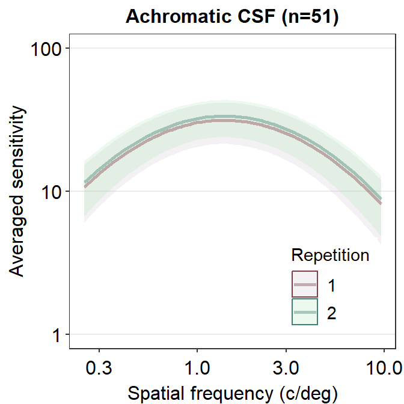
If you use sm_CSF(), you will get the same plot, but this plot only has a x-range from the minimum and maximum values of the spatial frequency within the SpatialFreq column of ACh1. You might get some warning messages after the running the example code below but you can ignore them altogether.
ACh1 %>% ggplot(aes(x = SpatialFreq, y = avgSens)) +
sm_CSF() +
sm_hgrid() +
scale_x_log10(limits = c(min(grid$x),max(grid$x))) +
scale_y_log10(limits = c(min(grid$y), max(grid$y)), breaks = c(1,3,10,30)) 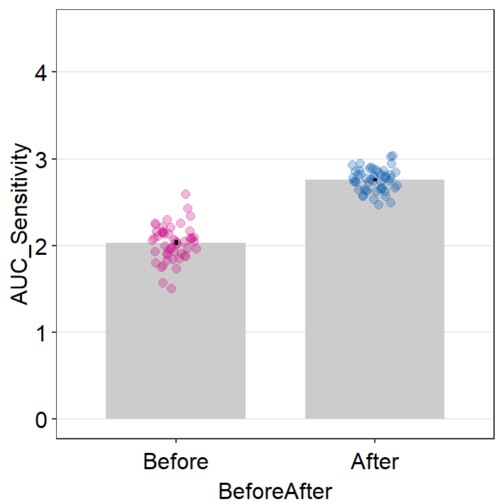
From the first plot, it is visually clear that at about 31 c/deg, the linear sensitivity approaches 1 (i.e., log-sensitivity = 0). We can also directly see the fitted values in the grid data frame and confirm our qualitative observation.
tail(grid)## x y
## 195 30.22739 1.049434
## 196 30.38191 1.037546
## 197 30.53643 1.025833
## 198 30.69095 1.014292
## 199 30.84548 1.002919
## 200 31.00000 1.00000015.3 Understanding sm_ribbonCSF()
Another highlight of the smCSF package is the function sm_ribbonCSF(), which magically plots the ribbon shades around the fitted CSF from sm_CSF().
ACh1 %>% ggplot(aes(x = SpatialFreq, y = avgSens)) +
sm_ribbonCSF(aes(ymin = avgSens - stdDevSens,
ymax = avgSens + stdDevSens)) +
sm_CSF() +
sm_hgrid()How is that the plot above shows the standard deviation across the sequence of x-values even if the contrast sensitivity has been tested at across only 12 unique spatial frequencies?
This is because the plot shown above shows 3 fits of the CSF rather than 1. The one that the reader can obviously recognize is the CSF fit using the raw data, shown as the black line. The other 2 fits are less apparent. These are basically the upper and lower bounds of the CSF ribbon.
The upper fit of the CSF is created using values from ymax = avgSens + stdDevSens. The lower fit of the CSF is done so using values from ymin = avgSens - stdDevSens. ymax and ymin values are used to estimate the 4 parameters of the CSF fit each. These are then used to fit the CSF curves.
Let’s recreate the plot above using only sm_CSF() and without sm_ribbonCSF(). To do so, we will need to create two more columns ymin and ymax.
ACh2 <- ACh1 %>% mutate(ymin = avgSens - stdDevSens,
ymax = avgSens + stdDevSens)
ACh2## # A tibble: 12 x 6
## SpatialFreq avgSens stdErrSens stdDevSens ymin ymax
## <dbl> <dbl> <dbl> <dbl> <dbl> <dbl>
## 1 0.25 13.2 0.536 5.41 7.78 18.6
## 2 0.35 15.2 0.568 5.74 9.50 21.0
## 3 0.49 19.1 0.698 7.05 12.1 26.2
## 4 0.68 24.3 0.836 8.44 15.9 32.8
## 5 0.94 29.4 0.938 9.48 20.0 38.9
## 6 1.31 33.0 0.977 9.87 23.1 42.9
## 7 1.83 33.6 0.996 10.1 23.5 43.6
## 8 2.54 30.8 0.970 9.80 21.0 40.6
## 9 3.54 25.4 0.856 8.64 16.8 34.1
## 10 4.93 18.9 0.681 6.88 12.0 25.8
## 11 6.87 12.7 0.513 5.19 7.51 17.9
## 12 9.57 7.81 0.381 3.85 3.96 11.7The code below will generate warning messages but these are trivial, so you can ignore them.
ACh2 %>% ggplot(aes(x = SpatialFreq, y = avgSens)) +
sm_CSF() +
sm_CSF(aes(x = SpatialFreq, y = ymin), linetype = 'dashed') +
sm_CSF(aes(x = SpatialFreq, y = ymax), linetype = 'dashed') +
sm_hgrid() 
We now have recreated the same plot without using sm_ribbonCSF().
15.4 Calculating the five parameters of all subjects, groups and conditions
So far, we have discussed in detail what the parameters mean and how sm_CSF() and sm_ribbonCSF() plot the CSF curves. We have also discussed how to use sm_params() with the given data. Now, lets use sm_params_list() to compute the five parameters of all subjects across groups and conditions. To do so, we will need a data frame that contains the data of each observer that has been assigned to a group and condition. ACh1 is an example of such a data frame.
ACh## # A tibble: 1,224 x 4
## Subject Repetition SpatialFreq Sensitivity
## <chr> <dbl> <dbl> <dbl>
## 1 S1 1 0.25 23.8
## 2 S2 1 0.25 18.0
## 3 S3 1 0.25 14.2
## 4 S4 1 0.25 5.14
## 5 S5 1 0.25 16.0
## 6 S6 1 0.25 10.9
## 7 S7 1 0.25 8.41
## 8 S8 1 0.25 10.5
## 9 S9 1 0.25 9.06
## 10 S10 1 0.25 3.57
## # ... with 1,214 more rowssm_params_list() work very similarly to sm_trapz_list(), sm_AULCSF_list() and sm_r2_list(). Here are the arguments:
data= this argument requires the variable that stores the data frame. In our case, it isACh. Data should be in linear units.subjects= this argument requires the name of the column of the data frame that contains subjects. It must strings, ex.'Subject', notSubject.groups= this argument requires the name of the column of the data frame that contains each group. In this example, there is no group. An example would beGroupcolumn that contains two groups:NormalandAmblyopia.conditions= this argument requires name of the column of the data frame that contains each condition. In our example, the two conditions are1and2from theRepetitioncolumn.x= this argument requires the name of the column of the data frame that contains the x-axis points from which the AUC can be calculated. In our case, these are values from theSpatialFreqcolumn ofACh. It must be strings, ex.'SpatialFreq', notSpatialFreq. Also, it must be numeric/double, NOT factor. Make sure you check that the column is numeric. If its not, convert the column of the dataframe into double beforehand. ex.df$SpatialFreq <- as.numeric(df$SpatialFreq)values= this argument requires the name of the column of the data frame that contains the actual data, which are the y-axis points from which the AUC can be calculated. In our case, it is the change in contrast balance ratio. It must strings, ex.'Sensitivity', notSensitivity.param0= This argument should a vector that contains the initial guess values for the four parameters (peak gain, peak spatial frequency, bandwidth and truncation value) of the log-truncated CSF model. This argument is not required because the default has been set tolog10(c(100, 1, 2, 0.5)).param_upLimit= This argument should be a vector that contains the upper bounds of the four parameters (peak gain, peak spatial frequency, bandwidth and truncation value) of the log-truncated CSF model. This argument is not required because the default has been set tolog10(c(2000, 20, 9, 2)).param_lowLimit= This argument should be a vector that contains the lower bounds of the four parameters (peak gain, peak spatial frequency, bandwidth and truncation value) of the log-truncated CSF model. This argument is not required because the default has been set tolog10(c(2, 0.2, 1, 0.02)).
params_df <- sm_params_list(subjects = 'Subject',
conditions = 'Repetition',
x = 'SpatialFreq',
values = 'Sensitivity',
data = ACh)## [1] "CSF parameters = Sensitivity ~ SpatialFreq"head(params_df[[1]])## Subject Repetition logGain logPeakSF logOctaveWidth logTrunc logCutOffSF
## 1 S1 1 1.629834 0.09807101 0.6119619 -0.30103 1.522009
## 2 S1 2 1.569498 0.01320197 0.5270044 -0.30103 1.216546
## 3 S2 1 1.562791 0.18084246 0.6510530 -0.30103 1.664255
## 4 S2 2 1.521231 0.22933453 0.6888543 -0.30103 1.777866
## 5 S3 1 1.394250 0.14405204 0.6446500 -0.30103 1.531413
## 6 S3 2 1.668939 0.17290997 0.5060525 -0.30103 1.364456params_df[[2]]## [1] 0.25 0.35 0.49 0.68 0.94 1.31 1.83 2.54 3.54 4.93 6.87 9.57sm_params_list() returns a list, which as two elements. The first element has a data frame of all the parameters as well as the identifiers for conditions and subjects. The second element contains a vector that has x, which in this case is the linear units of spatial frequency.
15.5 Visualization of the parameters
Here is a visual representation of the parameters. The contrast sensitivity function has been drawn with the four parameters that have been obtained from the ACh data set. The four parameters have been used to draw the contrast sensitivity function all the way to 30 c/deg. As an exercise, the reader can produce the example below. This plot has been entirely drawn with R, including the arrow and text annotations.

15.6 Case Study
In the previous chapter, I foreshadow that there is a parameter that can inform us about whether the high-spatial frequency range has improved or not. There are two parameters: 1) bandwidth, and 2) cut-off spatial frequency. Kim et al does not use the bandwidth to analyze their results because the authors believe that analyzing both bandwidth and cut-off spatial frequency is redundant. Likewise, this case study only shows the analysis of cut-off spatial frequency but this can be applied to all other parameters as well.
As in the previous chapter, let’s make some fake data with ACh. This new data frame is stored in the variable named ACh3. We assume that the 51 subjects are visually impaired patients who received clinical treatment for visual improvement.
ACh$Repetition <- factor(ACh$Repetition)
ACh3 <- ACh %>% mutate(BeforeAfter = fct_recode(Repetition,
'Before' = '1',
'After' = '2')) %>%
select(-Repetition)
set.seed(33)
ind <- which(ACh3$BeforeAfter == 'After')
ACh3[ind,]$Sensitivity <- ACh3[ind,]$Sensitivity + abs(rnorm(length(ind), 31, 35))Now let’s calculate five parameters using sm_params_list().
params_df <- sm_params_list(subjects = 'Subject',
conditions = 'BeforeAfter',
x = 'SpatialFreq',
values = 'Sensitivity',
data = ACh3)## [1] "CSF parameters = Sensitivity ~ SpatialFreq"head(params_df[[1]])## Subject BeforeAfter logGain logPeakSF logOctaveWidth logTrunc logCutOffSF
## 1 S1 Before 1.629834 0.09807101 0.6119619 -0.30103 1.522009
## 2 S1 After 1.902661 0.48036071 0.8259008 -0.30103 2.556726
## 3 S2 Before 1.562791 0.18084246 0.6510530 -0.30103 1.664255
## 4 S2 After 1.892264 0.20854797 0.7047611 -0.30103 1.975513
## 5 S3 Before 1.394250 0.14405204 0.6446500 -0.30103 1.531413
## 6 S3 After 2.005334 -0.02095422 0.6068997 -0.30103 1.545456Let’s store the results of cut-off spatial frequency in a new variable cut_sf along with Subject and BeforeAfter columns.
cut_sf <- params_df[[1]][c(1,2,7)]
head(cut_sf)## Subject BeforeAfter logCutOffSF
## 1 S1 Before 1.522009
## 2 S1 After 2.556726
## 3 S2 Before 1.664255
## 4 S2 After 1.975513
## 5 S3 Before 1.531413
## 6 S3 After 1.545456After we convert the cut-off SF into linear units, let’s plot a bar graph to show the results and see whether cut-off SF has increased. If it increases, it shows that the high spatial frequncy range’s overall sensitivity has improved. This also applies to the bandwidth.
cut_sf$linCutOff <- 10^cut_sf$logCutOffSF
head(cut_sf)## Subject BeforeAfter logCutOffSF linCutOff
## 1 S1 Before 1.522009 33.26667
## 2 S1 After 2.556726 360.35096
## 3 S2 Before 1.664255 46.15881
## 4 S2 After 1.975513 94.51766
## 5 S3 Before 1.531413 33.99482
## 6 S3 After 1.545456 35.11200Notice that we have created a new column entitled linCutOff. We will now plot the values from the column, as shown below.
cut_sf %>% ggplot(aes(x = BeforeAfter, y = linCutOff,
color = BeforeAfter)) +
sm_bar(point.params = list(alpha=0.3, size=2)) +
scale_color_manual(values = sm_palette(2)) +
scale_y_continuous(trans = 'log10') +
ggtitle('Cut-off spatial frequency') +
ylab('Cut-off SF (c/deg)') +
xlab('Before/after treatment')